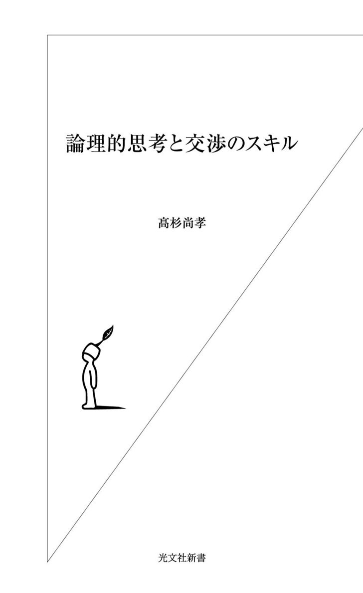
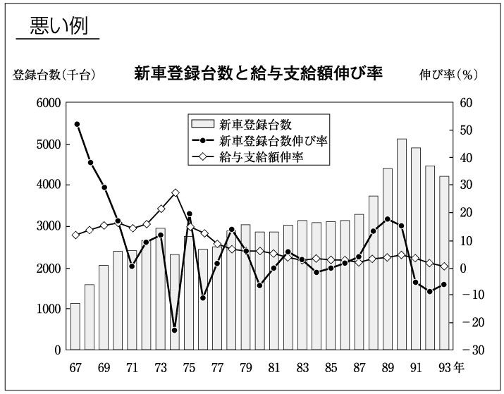
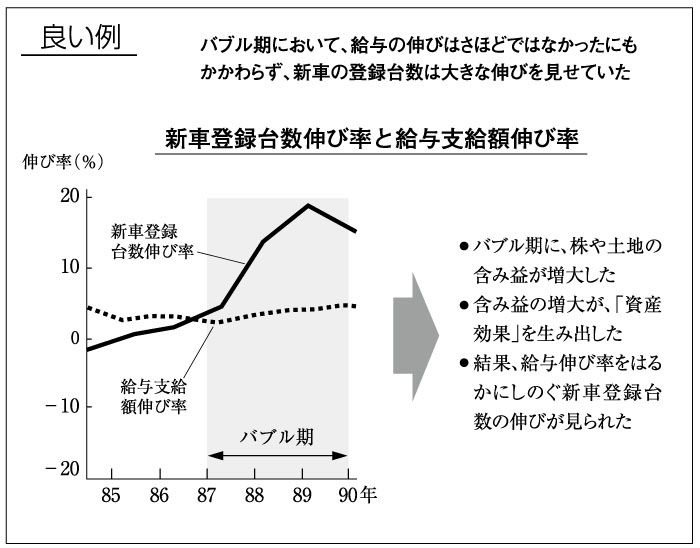
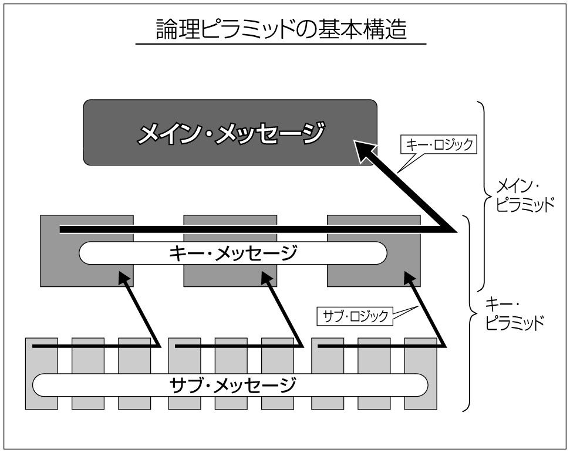
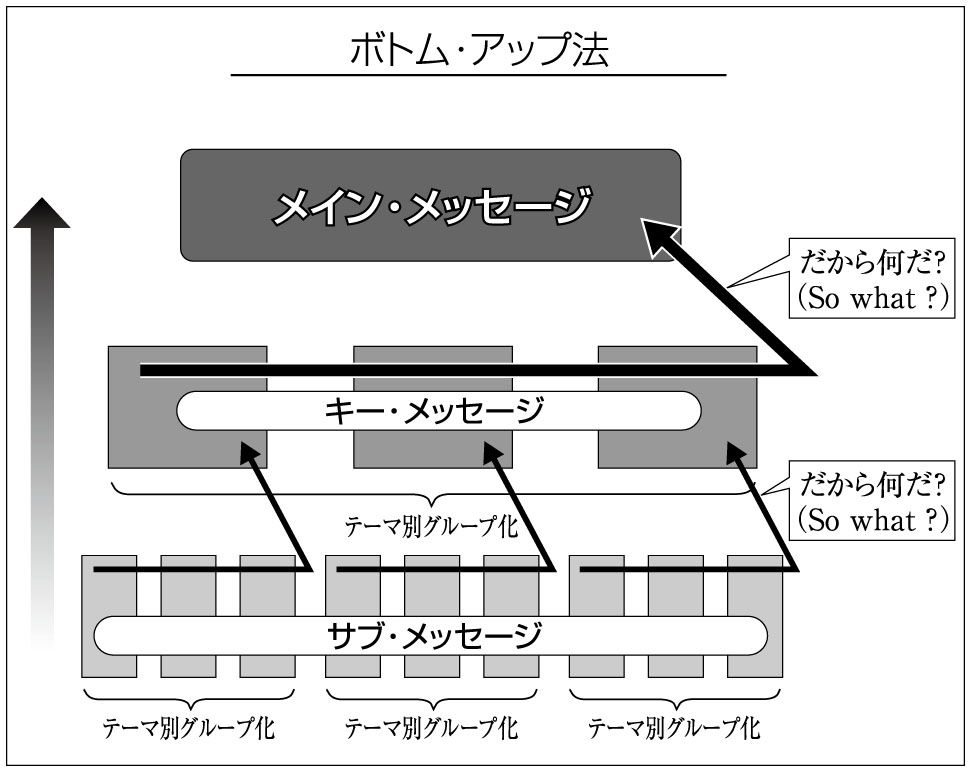
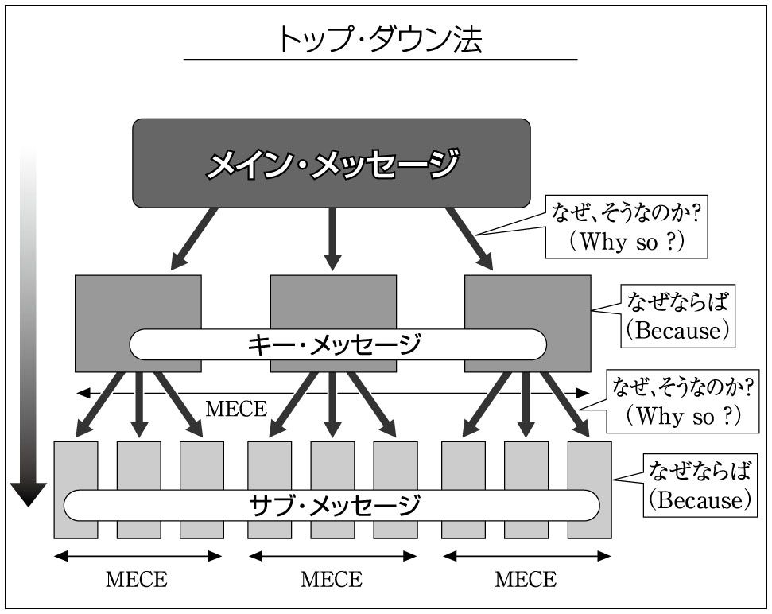

| 論理的思考と交渉のスキル | |
| 高杉 尚孝 | |
| (2003) | |

近年ビジネスパーソンが注目している技術に、論理的思考があります。事実、髙杉事務所として、企業向けの研修を数多くお手伝いしているなかで、論理的思考力強化研修の依頼が急増しています。
これは、ビジネスパーソンにとって、論理的な思考能力が、あらゆる業務の基礎となる大切なスキルであることが広く認知されるに至ったためと考えられます。
また、従来、論理的思考能力というと「それはセンスの問題」「持って生まれた性分」「個人差がありすぎる」などと、訓練や研修の対象としてはあまり考えられていませんでした。しかし、現在では「論理的な思考には基本的なセオリーがある。それを学習すれば、個人差はあるものの誰しもがそれなりに論理的思考能力を向上させることが可能である」との認識が浸透しつつあることも一つの理由でしょう。
個人的な体験から申し上げれば、マッキンゼー社のような戦略系コンサルティング会社において、論理的思考は業務の根幹をなす技術と言えます。さらに、投資銀行業務――特に私が従事していた企業買収戦略や財務体質の改善戦略の立案――においても、理詰めによる「骨太のロジック」が求められます。考えてみれば、石油会社における生産計画の立案であれ、危機管理広報戦略の立案であれ、そこには常に、確固たる論理的な思考が求められていました。加えて、現在私が従事している研修事業を考えるとき、伝える熱意に加え、やはり理詰めによる説明が一番説得力があると言えます。
さらに考えてみれば、業務自体もさることながら、こと、異文化において仕事を進めるという観点からも、論理的思考を基本とした明瞭なコミュニケーションが求められました。
独立するまで二〇年間のキャリアを外資系企業で、また物理的にも海外で長期間過ごした体験からも、ビジネスパーソンにとって、論理的な思考とコミュニケーションはなくてはならないものであると言えるのです。
世の中一般に、論理的な思考が求められている理由を考えてみると、経営環境が大きく変わりつつあることが挙げられるでしょう。以前と同じことを盲目的にくり返していても勝率は下がる一方です。
全てのスタッフが、少なくとも自分の守備範囲において、論理的にものごとをまとめ、かつ問題を定義したうえで解決案を提示してゆく必要性が顕在化してきました。そして、その結果を顧客とのあいだで、あるいは社内で共有してゆくことによって価値を出していくことも求められます。付け加えれば、これが、本来のナレッジマネジメントでもあります。
たとえば、現在、多くの優良企業が次期経営層育成のために集中的な研修を試みています。一般的なパターンとして、研修後半に自社課題を設定、分析したうえで、経営トップに提言をする場合があります。つまり、最終報告として、社長にプレゼンをするのです。社長へのプレゼンですから、参加者全員、相当な労力を費やします。しかし残念なことに、論理的思考や明瞭表現の技術、さらに、プレゼンというビジュアル系のコミュニケーション技術を持ち合わせていないため、せっかくの分析や提言が社長にうまく伝わらないケースが多く見受けられます。結果、スタッフ、そして社長の大切な時間の無駄遣いになってしまいます。
実は、このような状況にあったある有名企業において、当社が論理的思考表現力とプレゼンテーション技術研修のお手伝いをさせていただいたことにより、社長へのプレゼンの品質が数段向上したことがあります。結果、社長からの評価も、参加者の満足度もとても高まりました。さらに、その提言のなかから実際の経営に反映されたものもあると聞きました。
ただし、漠然と論理的な思考技術を磨いても、それ自体からはあまり高い価値を見出すことはできません。大切なのは、論理的な思考技術を目的を達成するための手段として応用していくことです。
どうも現在、「猫も杓子もロジカル・シンキング、クリティカル・シンキング」という風潮さえ感じられます。無論、これらを勉強することに越したことはありません。しかし、「ピラミッド構造を理解できた」、「ＭＥＣＥが分かった」だけでは仕事の質を向上させるに十分とは言えないでしょう。フレームワークなどを、実践することなく単に頭での理解のみで満足してしまう〝キーワード症候群〟が多く見られます。「ロジカル・シンキング」を含む〝キーワード症候群〟に陥らないためには、それらを手段として応用する力をつけるのが一番です。
本書は、交渉をテーマとした指南書です。交渉も論理的思考同様、目的・目標達成のための手段です。ですから、最終的な交渉の目標は、ネゴシエーターを含む交渉の当事者自身が決めねばなりません。しかし、同時に交渉を、論理的思考の大切な応用分野として位置づけることもできます。
言うまでもなく、交渉技術自体の向上も大切です。ビジネスのみならず政治や外交においても、身近な生活でもそうです。
一般的に日本人は、交渉が苦手と言えます。これは、よく言えば、日本人は以心伝心、自我を張ることをよしとしないからでしょう。また、和を重んじるため必要以上に譲歩しがちだからかもしれません。交渉を、利己的で避けるべき対象として見る風潮があります。
しかし、もっと厳しく考えると、日本人の交渉嫌いは、「平等が当たり前の豊かさに根ざした平和ぼけの結果」とも言えるかもしれません。日本以外の多くの国では、平等を確保する主たる手段として、交渉が位置づけられていると言えます。この違いは、海外に出てみると歴然と感じとれると思います。
好むと好まざるとにかかわらず、日本国内においてもグローバル化が急激に進んでいます。交渉を、「自分が甘い汁を吸うためだけの品位を欠いた行為」ではなく、平等を確保するための正当な手法として位置づけし直すことが望まれます。
本書ではさらに一歩進んで、交渉を論理的な思考の応用分野として考えるとともに、「双方の問題を同時解決することによってお互いの満足度を高めるコミュニケーションの過程」と捉えています。このように考えるなら、積極的に交渉に臨んでいただけることでしょう。
本書の構成は次のようになっています。
まず、第１章において、交渉をコミュニケーションの一形態として位置づけています。この観点から、他のコミュニケーション形態――具体的には、ディベートおよびプレゼンテーション――との比較を行いました。
第２章では「交渉＝論理的思考の応用分野」という位置づけの下、論理的思考自体の解説を行っています。難解な解説書の多い論理的思考を、なるだけ平たんに著してみました。
第３章では、明瞭表現の技術にページを割いています。論理的思考においても、交渉においても、さらにはコミュニケーション全般においても、明瞭な表現はとても大切であるからです。「自分は論理的思考に長けている。しかし、その結果を他人にどうもうまく伝えることができない」ということでは、論理的思考の価値を発揮することができません。交渉においても同じです。論理的思考の参考書は数多く出版されていますが、これに欠かせない明瞭な表現方法に、具体的なかたちで言及したものは、ほぼ皆無ではないでしょうか。
第４章において、バトナを含む、交渉力の源泉を掘り下げています。第５章では、交渉相手の心理状態を物語るかたちで、相手の関心を浮き彫りにするテクニックをご紹介します。
第６章では、交渉における心理面の分析にも言及しています。交渉テクニックの指南書は世の中に多く見受けられるものの、心理面、特に、ネゴシエーターが平常心を保つための具体的な技法に言及した書物は、おそらく非常に少ないでしょう。
第７章では、悪徳交渉戦術とその対応方法をダイジェスト的にまとめておきました。この分野の詳しい説明は、拙著『実践・交渉のセオリー』（ＮＨＫ出版）をご参照ください。
第８章では、目標設置に関する基本的な考え方、および、合理的な譲歩の仕方について、第９章では、交渉につきものの質問とその応答に関してまとめてあります。
最後の第10章は、交渉のロジスティックスについての章です。交渉のインフラとも言える、協議事項やチーム編成、交渉場所の選定などについてまとめてあります。
論理的思考技術、そしてまた、交渉技術両方の参考書として、本書が少しでもみなさまのお役に立てば幸いです。
交渉とは、広い意味で、コミュニケーションの一つのかたちです。そもそもコミュニケーションとは、「情報発信者が期待する行動を、受信者にとってもらうためのプロセス」です。一般的には、発信者からのメッセージが理解されることによって、受信者がある行動をとるプロセスと言えます。つまり、すべてのコミュニケーションの最終的な目的は、相手方がこちらの意図する行動をとってくれるところにあります。
より具体的なステップとしては、ある媒体（チャネル）を通じて、発信者がメッセージを受信者に送ります。そのメッセージを受け取った受信者は、それをもとに何かしらの行動をとります。そしてまた、受信者の行動は発信者にフィードバックされるわけです。
受信者の行動が発信者にフィードバックされるという意味において、コミュニケーションとは双方向のプロセスと考えられます。
営業活動という、企業の代表的な活動を例にとってこのプロセスを考えてみましょう。そこでは、まずメッセージの発信者として営業員がいます。彼らは、「自社の製品やサービスの優位性」というメッセージを、受信者である最終的な消費者やユーザー、中間業者の代理店などに伝えます。
その手法は、営業員による店頭でのデモンストレーション、電話による口頭の説明、文書による説明など様々です。そして、メッセージを送るチャネル、つまり媒体にもいろいろあります。カタログやパンフレット、ダイレクトメール、インターネットなどです。
これらのメッセージをもとに、受信者はその製品やサービスを購入したり、または見送ったりします。受信者の反応や行動を受けて、メッセージの発信者としての営業員はさらに新たなメッセージを考え、受信者に再び送るわけです。
もう一つ、資金調達活動を例にとってみましょう。資金調達活動においての情報発信者は、大方、財務の担当者ということになるでしょう。最近はインベスター・リレーションズ（ＩＲ）を担当する専門部署も設置され始めていますので、ＩＲ担当者も含めて、発信者と考えることができます。
彼らは、自社の財務的な優位性や戦略的なユニークさをメッセージとして、受信者である融資家や投資家に伝えていきます。もちろん、最終的な資金提供者のみならず、証券アナリストや格付け機関のアナリストなども大切な受信者です。
コミュニケーションのチャネルとしては、損益計算書や貸借対照表、キャッシュフロー計算書、アニュアルレポートなどがあり、これらを用いて、特定の銀行や機関投資家とのフェイス・トゥ・フェイスでの個別説明や、スモール・ミーティングと呼ばれる、少数の証券アナリストとの会合などを行います。
いろいろな情報を受けたうえで、銀行であれば与信契約を決定したり、機関投資家であれば株式の購入を決断したりするわけです。格付け機関のアナリストであれば、社債の格付けの判断をします。証券会社のアナリストの場合は、投資家に対してある銘柄の購入や売却を勧めたりします。
このように、コミュニケーションは、発信者のメッセージが受信者によって理解された結果、受信者がある行動をとるプロセスと言うことができるのです。
このプロセスを理解するうえで大事なのは、コミュニケーションの相手である受信者に必ず期待される行動があるという点です。先の営業活動の例ですと、「自社製品やサービスの購入」、資金調達活動の例では、投資家、融資家による「資金の提供」という、受信者に対して期待されている行動がありました。
これらを踏まえてコミュニケーションのプロセスとは何かと考えると、それは前述のとおり、「情報発信者が期待する行動を、受信者にとってもらうためのプロセスである」とまとめることができます。
もちろん、相手の状況によっては、最初から具体的な行動を期待するのは難しい場合も多くあります。たとえば、消費者が聞いたことも使ったこともない、全く新しい商品が開発されたとしましょう。そんな新商品を、値段にもよりますが、すぐに買ってもらうことはおそらく期待できないでしょう。
このような場合、まずは新商品の使い道やその効用を知ってもらうことから始めるのがいいでしょう。知ったうえで、「これはいける」と確信を持ってもらい、購入へと結びつけていくステップを踏む必要があります。しかしこの場合でも、最終的には、「この新製品を購入してもらう」という消費者に期待される行動があることは確かです。
それでは交渉の過程を考えてみましょう。
たとえば、大家さんと家賃の値下げ交渉をするとします。そこには、今の家賃よりも低い、自分の考える家賃にしたいという願望があります。見方を変えれば、大家さんに「家賃を下げてもらう」という行為を期待していると言えます。
また、自分の残業時間をもっと少なくしたいので上司に相談する（これも交渉）のであれば、上司に期待する行動とは、「仕事の量を減らしてもらう」ことかもしれません。
このように、交渉という行為も、相手方にこちらの意図する行動をとってもらうための手段と解釈することができます。ですから、交渉もコミュニケーションの代表的な一分野であると位置づけることができます。
交渉がコミュニケーションの一種であることは分かりました。では、みなさんが望む「良い交渉」とは、どのようなものを指すのでしょうか。
結論から言うと、良い交渉とは、自分と相手方、双方の満足度が高まる交渉のことです。
交渉の結果、たとえ譲歩したとしても、お互いが満足感を得ることのできる交渉を目指すのが望ましいのです。つまり、相手の問題が解決されたり相手にメリットがもたらされたりする過程で、こちらの問題も解決されメリットがもたらされるのが良い交渉だと言えます。
「この喰うか喰われるかといった弱肉強食の世の中で、そんな悠長なことを言ってられるか！」とお叱りを受けるかもしれません。しかし、これは単なる理想論ではありません。長期的な視点で考えてみれば、これはネゴシエーターにとって唯一の姿勢であると言うことができます。
売り手と買い手の関係を例にとってみましょう。もし仮に、売り手が常に犠牲になって買い手の要求のみを満たしていたとしたらどうでしょう。売り手は長期的には経営難に陥り、その結果、倒産してしまうかもしれません。
逆に、買い手が常に騙されたと感じるような場合、買い手は売り手から離れていってしまうでしょう。「でも、うちにはどうせ一見客しか来ないから、長期的な視野などいらないのだ。その都度、相手が不利益を被っても自分が儲かればよいのだ」と考えたらどうでしょうか。概ね、悪い噂が流れて客足が途絶えるでしょう。
ですから、単なる理想論ではなく、実利的にも、双方の満足度を高めることを念頭においた交渉が求められるのです。
アジアのある国での話です。今後の経済発展が期待されることから、多くの先進国がこの国に巨額の投資を行いました。しかし、その国との交渉に携わる商社マンから聞こえてくるのは、「あまりにも一方的な交渉が多いため、この国とは商売をしたくなくなる」という否定的な声です。
無論、どうしても譲れない争点があるのかもしれません。しかし、お互いの満足度を高めようという姿勢が著しく欠けていると、最悪、「ぼったくり屋」というレッテルが貼られてしまうかもしれません。誠意をもって交渉にあたる姿勢を大切にしなければなりません。
では、双方の満足度を高めるための秘訣とは、一体どこにあるのでしょうか。それは、人は必ずしも同じものを欲するわけではないという点にあります。つまり、個人であれ組織であれ、相手方とこちらのニーズは概ね異なったものであるという点にあるのです。
交渉を複数の要素を持つパッケージ取引と考えると、トータルの満足度を高めるための要素の組み合わせ方はグッと増えます。そうすれば、双方の満足度を高める解決策を見出す可能性も一段とアップします。
概ね、交渉ごとはパッケージ取引です。たとえば、機械の燃料でも事務所の文房具でも、商品自体の価格、配送コスト、配送の頻度やその単位、また支払い条件など、複数の交渉対象項目があると言えます。
逆に、交渉を近視眼的に単一争点に絞り込んでしまうと、双方の異なるニーズを満足させることが難しくなります。単一争点のみに焦点をあてた交渉においては、どうしても勝者と敗者が生まれてしまいます。誰しも好んで敗者になりたくはありません。ですから交渉は暗礁に乗り上げやすくなってしまうのです。
このように、交渉のデッドロック（deadlock：行き詰まり）を回避する観点からも、双方の満足度を高める観点からも、交渉を複数の要素を持つパッケージ取引と考えることが必要なのです。
しかし残念なことに、交渉に従事する人のなかには、交渉プロセスの本質を「いかに相手を欺いて、自分のみの利益を確保するか」と捉えている方もいるようです。これは間違った思い込みとしか言いようがありません。相手方を欺く行為は詐欺行為であって、交渉などではありません。
しかし、日本経済の低迷が長引くなか、こういった詐欺まがいの交渉による悪徳商売が増えてきていることは確かです。ですので、この「悪徳交渉戦術」を見破るとともに、良い交渉の技術を身につけ自分自身を守る必要があります。よく見受けられる悪徳交渉戦術については第７章でまとめておきましたので、参考にして下さい。
もちろん、本書の意図はこれらの悪徳交渉戦術を読者のみなさんに使っていただくことではありません。自分の身を守るために、ぜひ悪徳交渉戦術のカラクリを知っておいていただきたいのです。
ところで、双方の満足度を測る基準はどのようなところに見出せるのでしょうか。
良い交渉の輪郭をより鮮明にするためには、その逆である悪い交渉を例にとって考えてみるのも手です。
仮に交渉が成立しても、嫌な後味を残す場合もたくさんあります。その要因の一つに、ネゴシエーターが終始自分側の利害達成や保護のみに固執する姿勢が挙げられます。自分側の言い分のみを頑なに主張し続けるだけで、相手方の利害を全く尊重しない態度がそれです。頑固であることが優秀なネゴシエーターであるという誤解の表れかもしれません。
たとえば、なりゆきからあるお店で仕方なく商品を購入したものの、「もう二度とこの店では買いたくない」と思った経験をお持ちの方も少なくないのではないでしょうか。
このような一方的な姿勢は、たとえ交渉が成立したとしても、相手方に大きなしこりを残すことになります。そうなると相手方は、機会さえあれば何かしらの形でリベンジを企てる確率が高くなります。
機会があれば嫌な経験をした店の悪口を言う人がよくいますよね。いまやインターネットの時代ですから、リベンジのインパクトも大きくなります。事実、ネット上で、様々なお店での不快な経験が配信されています。
また将来、反対の立場で交渉することがあったとすれば、ここぞとばかりに強硬な態度で交渉に臨んでくることでしょう。
相手を欺くための姑息な悪徳交渉戦術を用いるのも、やはり大きなしこりを残す原因になります。
相手方のネゴシエーターが、理不尽なやり方で必要以上の譲歩を強いられたと感じたならば、それは良い交渉とは言えないわけです。そう感じたネゴシエーターは将来の交渉を拒むでしょう。これが商売上の交渉であれば、つまるところビジネスがなくなるということです。また前述のように、騙されたと感じたネゴシエーターは何かしらのかたちでリベンジに出るかもしれません。
合意事項を踏みにじるのは言語道断
さらに、合意事項が後から安易に覆されたり、守られなかったりしても大きなしこりが残ります。お互いの合意にはそれなりの重さがあるはずです。無論、合意事項をあからさまに踏みにじるのは言語道断と言えます。
最近、北朝鮮が核開発を継続していることが明らかになりました。これは一九九四年の「米朝枠組み合意」やＮＰＴ（核兵器不拡散条約）に対する明らかな違反行為です。
また、別途協議条項が契約書にあるからといって、合意事項の履行時に、たとえば状況の変化を理由に安易に再交渉をくり返すのも考えものです。相手は今後つき合っていきたくないと考えるでしょう。
この事例として有名なのが、一九七七年に起きた「日豪砂糖紛争」でした。日本の砂糖メーカー約三〇社は、砂糖買い付けの長期契約をオーストラリア州政府と締結しました。ところが相場は予想に反して暴落。別途協議条項を盾に、日本側は当初契約で設定されていた価格の値下げを主張しました。そして、砂糖の受け取りを拒否したため、砂糖満載の貨物船が東京湾に何隻も停泊したまま事態は硬直化してしまいました。
しかしこの別途協議条項は、価格ではなく、あくまでも契約の運用と継続に関した見直しでした。日本側は賭けに負けたにもかかわらず悪あがきをしたという印象を世界に与えてしまったのです。
以上、交渉が決裂しなかったとしても、結果的に良くない交渉の特徴を考えてきました。こうしてみると、良くない交渉の逆、つまり良い交渉の条件とは、次の三点に集約されるのではないでしょうか。
①相手方が各々の利害を尊重したと互いに感じることができる
②相手方のやり方がフェアであったと互いに感じることができる
③合意事項を守ると互いに信じることができる
これら三つの条件が満たされれば、ネゴシエーターは互いに自分を交渉の勝者と感じることができるのです。そして、互いにこれからもつき合っていきたいと感じることもできるでしょう。
こう考えていきますと、仮に交渉が決裂したとしても、これらの条件が満たされていれば、交渉が失敗したとは必ずしも言い切れません。今後、新たな交渉や取引が生まれる可能性は十分にあります。
事実、髙杉事務所とクライアント企業との交渉において、先方の予算の都合により合意に至らなかったとしても、その後の新たな交渉において予算をつけていただくケースがあります。
交渉の成立ばかりに気を取られて、これらの条件を疎かにしないよう心がけなければなりません。最初の交渉が決裂したとしても、これらの条件を満たしていれば、後に大きな利益を得ることができるかもしれないのです。
つぎに、交渉についてより理解を深めるために、交渉に類似する概念である、ディベートとプレゼンテーションについて考えていきたいと思います。交渉との類似点、そして相違点を明らかにすることで交渉のあり方を浮き彫りにしていきます。
さて、有名なディベートと言えば、アメリカ大統領選挙でのジョン・Ｆ・ケネディ議員とリチャード・ニクソン副大統領によるテレビ討論があります。また、法廷での検察側と弁護側による答弁もディベートと言えます。
このように実社会で行われるディベートは、サブスタンティブ・ディベート（substantive debate）と呼ばれています。サブスタンティブとは、「中身のある」という意味です。はたして我が国での国会答弁などは、サブスタンティブ・ディベートと呼べるのでしょうか。
ディベートとは、議論を掘り下げるための手法であり、欧米では古くから用いられてきました。特に多民族国家であるアメリカでは、ディベート技術が重視されています。事実、高校や大学で、ディベートが正規の科目として導入されているケースが多くあります。正規の科目でない場合も、課外活動として積極的に取り入れられています。
このように学校教育の一環として行われるディベートは、アカデミック・ディベート（academic debate）と呼ばれ、実社会でのサブスタンティブ・ディベートに比して、主にディベート技術自体の向上に重きを置いています。日本では、主に大学において、英語会の活動の一部として学生主導型で普及しています。最近では徐々に日本語によるディベート活動も盛んになっています。
ディベートの種類はさておき、交渉を進めるということは相手方とディベートをすることではありません。そもそもディベートというのは、相反する議論と議論をぶつけ合うプロセスを経たうえで、最終的にどちらかの主張を採択する意思決定の手法です。
そこでのポイントは、相手方の主張とその論拠の誤りを指摘するとともに、自分の主張の正当性を強調するところにあります。平たく言えば、相手の議論を潰すのがディベートにおける勝利の鍵となります。
もちろん、ディベートと交渉には共通のコンピテンシーもたくさんあります。まず、自分の主張を正確に、かつ明瞭に伝えることは、ディベートにも交渉にも求められる大切な能力です。自分の意見をしっかりと論理的に構築し、構成することが必要となります。
また、相手方の発言を注意深く聞くこと、すなわちアクティブ・リスニングを心掛けるところも両者に共通した部分です。相手方の発言内容、その背景、言語化されていない意図や前提などを正確に理解するためには、ディベートであれ交渉であれ、積極的な傾聴が不可欠です。
これらに加え、発表する技術、つまりプレゼンテーション能力も両者に共通した重要な能力の一つです。どんなに素晴らしい議論であっても、最終的にそれを伝えるのは生身の人間です。言いたいことが聞き手にどう伝わるかは、発表者の伝達力の技量に委ねられる部分が大きいと言えます。
さらに、これらのコンピテンシーのベースにあるのが論理的な思考力であると言うことができます。物事を突き詰めて考えるクリティカル思考も共通能力でしょう。
最後にもう一つ大事なものを挙げるとすれば、それは平常心をキープする能力、つまり自分の感情をうまくコントロールする能力です。簡単にキレたりヘコんだりビビったりしては交渉もディベートも行えません。
ディベートと交渉では意思決定者が異なる
これだけ共通のコンピテンシーがあるのなら、ディベートも交渉もほぼ同じではないかと思えてしまいます。しかし、両者には本質的な違いがあります。それは、最終的な意思決定者が誰かということです。
実社会でのサブスタンティブ・ディベートであれ、教育的なアカデミック・ディベートであれ、最終的な勝ち負けは独立した第三者によって下されるのです。
先に挙げたアメリカ大統領選挙でのケネディとニクソンのテレビ討論の場合、投票権を持つ国民によって勝ち負けが決定されました。検察側と弁護側のディベートであれば、アメリカの場合、中立的な市民である陪審員によって有罪か無罪の判決が下されます。また日本の場合は裁判官によって下されます。
アカデミック・ディベートの場合も、中立的な審判が最終的な勝者を決定します。
翻って交渉の場合はどうでしょうか。交渉の際の意思決定者は誰でしょうか。大きな権限を持った中立的な第三者が最終的な判断を下してくれるでしょうか。交渉にはそんな人はいませんね。
交渉の場合、最終的に合意するかしないかの判断は、ネゴシエーターを含む交渉の当事者がするわけです。ですから、お互いに決定権を持っている。つまり、決定権は相手にもあるわけです。ここが交渉とディベートの決定的に異なるポイントです。
ディベートであれば最終的な勝ち負けは独立した第三者によって下されますから、優位な決定を獲得するためには、相手の意見の不備や不当性をはっきりと、かつ強く表現することが効果的です。相手方の感情を損ねないよう注意する必要など全くありません。どちらかというと、相手方を徹底的にやっつけることが得策です。
一方、交渉ではどうでしょうか。交渉の代表例である商談を例にとってみれば明らかです。値引き要求をしている買い手に対して、売り手がディベートモードで、一方的に買い手の値引き要求がいかに不当であるかを述べるとともに現行価格の正当性を主張したらどうでしょうか。「ははーっ、そのとおりでございます」と買い手は引き下がるでしょうか。おそらく反対に、もっと強く値引き要求してくるのではないでしょうか。結果として売り手は商売を失うかもしれません。
経営戦略のコンサルティングの売り込みに行ったコンサルタントが、売り込み先の企業の戦略には不備があると一方的に指摘したらどうでしょうか。議論には勝ったとしても、失注するのは目に見えているでしょう。
商談に限らず、決定権が相手方にもあるということを見失うと交渉は概ね頓挫します。交渉はディベートではないのです。
それでは、社会人としてディベートを勉強したり、企業としてディベート能力を育成したりすることは無意味なのでしょうか。そんなことは全くないと私は考えます。
学生時代からディベートに関わってきた過程で、私は個人的に多くのことを学んでまいりました。ですので、分析力や伝達力を磨くという観点からはディベートを高く評価したいと考えます。ただ、ディベートと交渉には本質的に異なる部分があるという認識が大切なのです。
交渉と同様に、近年その重要性が顕在化しているコミュニケーションの分野にプレゼンテーションがあります。取引先との関係において、そしてまた組織内において、プレゼンテーションの機会が急増しています。交渉と同様にプレゼンテーションもまた、経営環境の変化を反映したものと考えられます。
社会の至る所で今までのやり方や関係が見直されています。たとえば、ずっと排他的な取引を行っていた得意先から、「今後は、複数の業者間でのコンペになるので、新しい企画のプレゼンをお願いしたい」との要請を受けたり、外資と資本提携した日系企業において、年俸制の導入に伴い、自分の給料を会社と交渉して決める運びとなったりするようになりました。また、株主である機関投資家から業績や今後の戦略についての説明を求められ、公開企業の経営トップが自らそれに答えるようなこともあります。
こちらの意思をしっかりと、そして説得的に伝えることによって、相手の行動を促す技術であるプレゼンテーションが脚光を浴びるようになったのも自然の流れでしょう。
多くの場合、交渉はプレゼンテーションを伴います。ですので、プレゼンテーションとは何なのか、そして良いプレゼンテーションを行うにはどうしたらいいのかを考えてみたいと思います。そのうえで、交渉との類似点、そして相違点を明確にしたいと思います。
プレゼンテーションの最終目的は、「こちらの意図する行動を相手方にとってもらうこと」です。もちろん、具体的な行動を促す以前の中間的な目標として、ある事柄に対する理解を得るためのプレゼンテーションもあれば、あるテーマに関して聞き手の意見を知るためのプレゼンテーションもあり得るでしょう。
しかしいずれにしろ最終的な目標は、「こちらの意図する行動を相手方にとってもらうこと」と言えます。これは、交渉の目標と同じと言えます。
さて、プレゼンテーションの機会が急増したことに伴い、プレゼンテーション専用のソフトやプロジェクターが多く売り出されています。そして、これら機材の宣伝文句は、異口同音に、「機材さえ揃えればプレゼンテーションの成功間違いなし」というものであったりします。
ですが、真実からこれほど遠いものもありません。確かに、良いソフトやプロジェクターをうまく活用できれば、プレゼンテーションは成功に近づくでしょう。しかし、ソフトや機材のみではプレゼンテーションの成功は決して保証されません。なぜならプレゼンテーションの成功には、
①論理的思考と明瞭な表現
②説得力のあるストーリー
③魅力的なビジュアル
④名優としてのプレゼンター
といった、四つの大切な要素があるからです。
①論理的思考と明瞭な表現
論理的思考は、生産的なネゴシエーションのみならず、効果的なプレゼンテーションにとっても重要な要素です。
「結論を述べたら、その論拠を述べる」
シンプルですが、これが論理的であることの基本です。詳しくは第２章で述べます。
また、明瞭な表現は論理的であることの大前提です。メッセージが不明瞭であれば、プレゼンターが何を言わんとしているのか聞き手には分かりません。これでは論理性以前のお話となってしまいます。
メッセージが明瞭でない主な理由としては、まず文章中に主語が欠落していることが挙げられます。さらに、「～あり」「～おり」「～が」「～き」「～し」「～て」などの曖昧接続詞の使用も挙げることができます。
まずは主語をしっかりと明記し、さらにできる限り曖昧接続詞を論理接続詞に換えていく努力が重要です。論理接続詞とは、いくつか例を挙げれば、「～の結果」「～にもかかわらず」「～して以来」「～に加えて」などのことです。
また、複数の解釈ができるような抽象度の高い表現、たとえば、「見直し」「再構築」「活性化」「多様化」などの表現をなるべく避けるようにします。そして、より具体的な動詞や名詞を用いることが望まれます。このような明瞭表現については第３章で詳述します。
②説得力のあるストーリーと③魅力的なビジュアル
個々の分析が論理的であり、かつ明瞭に表現されていることに加え、プレゼンテーションはストーリー（物語）として、聞き手に理解しやすい流れになっていることが望まれます。
そこには、始まりがあり中身があり、そして終わりがあります。さらに、明確でしっかりとした接続詞によって構成された「流れ」が必要です。脈絡のはっきりしないプレゼンテーションほどフラストレーションが募るものはありません。
またそのストーリーは、見やすく、かつメッセージの明確なビジュアル（図やグラフやコメント）に落とし込まれることが必要です。ストーリーがどんなに素晴らしくても、それを視覚的にアピールできていないのであればプレゼン効果は半減してしまいます。
ここで良い図表と悪い図表とを例にとってご説明しましょう（図表参照）。


悪い例には縦軸が二つもあり、横軸の年数も四半世紀に亘っているため、情報が多すぎる感が否めません。
さらに、キーがグラフから遠いので、読み手はキーとグラフの間を行ったり来たりしなければなりません。これは読み手にとって大きな負担となります。
そして一番の問題は、図表にメッセージ性のないところです。漠然とこのグラフを見せられても読み手は困惑するだけでしょう。または、勝手な解釈を始めるだけでしょう。
他方、良い図表のほうには、「バブル期において、給与の伸びはさほどではなかったにもかかわらず、新車の登録台数は大きな伸びを見せていた」という、しっかりとしたメッセージの表記があります。
また、グラフ自体もシンプルかつメッセージの読み取りやすいものになっています。そして良い図表には、メッセージをサポートする論拠が表されています。
どちらで説明を受けたほうが聞き手の理解が促されるか、議論の余地はないでしょう。
④名優としてのプレゼンター
明確なメッセージと論理性、めりはりのあるストーリーとビジュアル。こうなるとあとは、プレゼンター自身の力量にかかってきます。
堂々とした態度、十分なボリュームのしっかりとした声とアイコンタクト（聴衆と目を合わせること）。そして、プレゼンターの熱意と誠実さ。これらの要素が、最終的なプレゼンテーションの成否を左右します。
堂々とした態度は背筋の伸びに表れます。どうしても人前に出ると背筋が前屈み気味になるものです。ここはグッと胸を張りましょう。とは言っても、両肩が後方に流れないようにしましょう。でないと「ぬきえもん」体型（顔が前に飛び出るとともに、腕と一緒に両肩が後方に流れてしまっている間抜けな体型。いわゆる抜き襟状態）になってしまいます。
また、堂々とした態度は無駄な動きのなさにも表れます。上半身の回転運動、体の横揺れ、不必要なサイドステップ、前後ステップ。稀ですが、フラフープをしているような腰の回転運動など、いらない動きはたくさんあります。概ね、プレゼンター自身にそのような行動をとっている意識はありません。無意識の動きなのです。
体の動きもさることながら、手のやり場にも注意を払わなければなりません。気をつけないと、手が頭にいってしまったり、下がってもいないズボンを一生懸命上げてみたりしています。手の基本ポジションをあらかじめ決めておくとよいでしょう。ただし、ポケットに突っ込むのだけは避けたいものです。猫背になりやすいし、印象もよくありません。
さらに、プレゼンターに求められる諸々の技量のなかでも、「これだけは伝えたい」という熱意は特に重要です。伝えたい意欲は粘り強さにもつながります。これは交渉にも言えることです。
名プレゼンターとして有名なのは、やはりジョン・Ｆ・ケネディ大統領でしょう。先に有名なディベートの事例として挙げた、アメリカ大統領選挙でのジョン・Ｆ・ケネディ議員とリチャード・ニクソン副大統領とのテレビ討論においても、プレゼンターの技量の違いが勝敗を大きく左右しました。
さらに、アメリカの歴代大統領のなかで名プレゼンターをもう一人挙げるとすれば、ロナルド・レーガン大統領がいます。彼はハリウッド俳優として培ったプレゼンテーション技術で、全米国民を魅了しました。結果、レーガン大統領は「グレート・コミュニケーター」というニックネームで親しまれたのです。
名優としてのプレゼンターの技量が大事だと言うことは簡単です。しかし、実際に行うとなると、なかなか簡単にはいきません。
私自身、年に何回となくプレゼンテーションを実施するのに加え、プレゼンテーションの指導もしています。それでも、「名優としてのプレゼンター」は永遠の課題と言えるのです。
プレゼンテーションと交渉の違い
プレゼンテーションと交渉の共通点は多くあります。まず前述のとおり、プレゼンテーションも交渉も、その最終目的は「こちらの意図する行動を相手方にとってもらう」ことです。
また、プレゼンテーション成功の四要素のなかの「論理的思考と明瞭な表現」「説得力のあるストーリー」「名優としてのプレゼンター」は、交渉にとっても重要な要素です。ちなみに、これらは前述のディベートにも共通する要素です。
翻って、唯一プレゼンテーションに特有の要素と言えるのが「魅力的なビジュアル」です。無論、交渉の場において視覚的にアピールする図表を用いることもあります。しかしその場合のビジュアルは、あくまでも付随的な位置づけとなります。一方、プレゼンテーションの場合はビジュアルがより中心的な材料となります。
以上のような共通点があるものの、プレゼンテーションと交渉には、はっきりとした違いがあります。その最大の違いは、相手方とのインタラクションのあり方に見出すことができます。つまり、相手方との関わり合い方に大きな違いがあるのです。
まずプレゼンテーションの場合、メッセージは主にプレゼンター側から聴衆へと発信されます。その意味で、メッセージの方向性が比較的はっきりしていると言えます。そしてその結果、プレゼンターと聴衆、お互いのインタラクションは比較的少なくなります。
逆に言うとプレゼンテーションの場合、気をつけないと一方通行の情報伝達になってしまいがちです。質疑応答の場などを活用することによって、意識的に聴衆とのインタラクションを活性化することが求められます。
一方、交渉の場合、お互いのインタラクションの度合いが大幅に増大します。交渉はお互いが情報をやり取りすることによって進んでいきます。つまり、短いプレゼンテーションのやり取りが交渉なのであるとも言えるでしょう。言い換えると、交渉とは質疑応答のやり取りであるとも考えられます。当然、こちらからあちらに質問することもあれば、あちらからこちらに質問することもあります。この質疑応答については、第９章で詳しく説明したいと思います。
第１章のまとめ
交渉はコミュニケーションである
・コミュニケーション＝「情報発信者が期待する行動を、受信者にとってもらうためのプロセス」
・交渉＝「交渉相手にこちらの意図する行動をとってもらうためのプロセス」
良い交渉とは、「自分と相手方、双方の満足度が高まる交渉」のこと
⇒そのためには、交渉を複数の要素を持つ「パッケージ取引」と考える
良い交渉の三条件
①相手方が各々の利害を尊重したと互いに感じることができる
②相手方のやり方がフェアであったと互いに感じることができる
③合意事項を守ると互いに信じることができる
ディベートと交渉の類似点と相違点
【類似点】主張を正確に、かつ明瞭に伝える能力／アクティブ・リスニング／プレゼンテーション能力／クリティカル思考／平常心を保つ能力
【相違点】意思決定者⇒ディベート......中立的な第三者
交渉......当事者
プレゼンテーションと交渉の類似点と相違点
【類似点】最終目的は「こちらの意図する行動を相手方にとってもらう」こと
【相違点】相手方とのインタラクション
⇒プレゼンテーション......少ない、一方的
交渉......多い、双方向
プレゼンテーションを成功させるための四要素
①論理的思考と明瞭な表現
②説得力のあるストーリー
③魅力的なビジュアル
④名優としてのプレゼンター
※①②④は交渉、ディベートにおいても重要な要素
良い交渉を行うためには、相手方の真意を探るとともに、こちらの主張を相手に理解してもらうことが必要です。そのためには〝ロジカル〟に話し、かつ書くことが望まれます。
ロジカル、つまり論理的であることによって説得力が増し、ひいては相手方にこちらの意図する行動をとってもらうことができます。
しかし、みなさんにとって悩ましいのは、「いったいどうしたら、よりロジカルになれるのか？」ということでしょう。「もっと論理的に書きなさい」「もっとロジカルに話しなさい」と言われても、あまり具体的なイメージが浮かばないものです。
多くの人は、「論理的であるためには、どうしたらよいのでしょうか？」という問いかけに対し、
・箇条書にすることで論点を明確にする
・数字を活用することで誤解を避ける
・５Ｗ１Ｈを明確にする
・起承転結をはっきりさせて、読み手に関心をもたせる
などと答えます。
確かにこれらは情報をより正確に伝えるテクニックではあります。しかし、論理的であることにつながるとは必ずしも言えません。
それでは、論理的であるためには具体的にどうしたらよいのでしょうか。この章では、論理的に物事を考え、その考えを他人に伝えるためにはどうしたらよいのか考えていきたいと思います。
結論から言いますと、論理的であるためには、まず「明確な主張」があることです。はっきりとした「結論」、よく分かる「主張」が論理的であるための大前提となります。
もしメッセージが玉虫色であるなら、残念ながらそれではまだ論理的であるかどうかの土俵にも上がっていないことになります。そもそも何が言いたいのかが不明確では、論理的であるためのスタートラインにも立っていないわけです。相手に「何が言いたいの？」と言われてしまえばアウトです。
しかし、ここで誤解してもらっては困るのが、「明確な主張」があるから「論理的」なのではないということです。「明確な主張」がいくつあったとしても、それだけであれば単なる感情的なコメントの羅列でしかありません。論理的であるための具体的な要素の二つ目は、主張を支える「論拠」がしっかりと述べられていることです。
具体的な論拠には、いろいろな種類があります。主張が結果ならば、論拠には原因がくるかもしれません。主張が理想や目標など望ましい状況であれば、論拠にはそこに到達するための手段がくるかもしれません。他にも論拠の中身には、「事例」「データ」「偉い先生の意見」などいろいろあるでしょう。いずれにしろ論理的であるためには、主張をしたうえで、論拠を述べることが大事です。
たとえば家賃の値下げ交渉で論拠としてありそうなものをいくつか挙げるとすれば、
・経済がデフレ傾向にあるため、現在、家賃の相場は下がりつつある
・近所の知り合いの家賃が下がった
・以前から自分の家賃は割高だった
・残業が減ったことにより、家賃負担の割合が増えた
などが考えられます。もちろん、あり得る論拠はこれらだけに限りません。他にもたくさんあるでしょう。
ここで大切なのは、論理的であるためには「家賃を下げたい」という主張のみでなく、その主張の論拠が必要不可欠であるということです。
論理的であるための要素を「論理的であることの逆」という観点から考えてみるのも一つの手です。
読者のみなさんならば、「論理的であることの逆」をどう表現されるでしょうか？ たとえばみなさんの知り合いにＡさんという、それは論理的な方がいたとしましょう。もう一人の知り合いであるＢさんは、その全く逆だとしましょう。みなさんはＢさんをどう呼ぶでしょうか。
今お願いしているのは、あくまでも論理的であることの逆です。ですから、「非論理的な人」という表現では困ります。これは単なる否定です。逆ではありません。
「支離滅裂な人」「抽象的な人」などいろいろ出てくるでしょう。なかでも多いのが、「感情的な人」という呼び方です。ですが、一般的に「Ｂさんは感情的な人だ」と言ってしまうと、どうもそこにはすでにある種の価値判断が下されてしまっているように思えます。では価値判断を下さずに、中立的な呼び方ではどうでしょうか。
たぶん、みなさんの多くは「直感的な人」という表現を用いたと思います。私もこれがピンとくる表現だと思います。では、「論理的である」ことの逆が「直感的である」ことだと仮定しましょう。
論理的と直感的。両者の構造的な違いとはどこにあるのでしょうか。当然、両方に結論はあります。しかし、論理的のほうにあって、直感的なほうにはないものが......そうです、論拠です。
みなさんは、直感的な人に理由を尋ねることはないでしょう。なぜなら、直感思考には明確な論拠がないからです。尋ねても、「直感なんだよ！ 直感！」で終わってしまうことでしょう。
このように、論理的であることの逆、つまり直感的であることを考えることにより、ロジカルの基本が、主張をしたうえで論拠を述べるところにあることがお分かりいただけたでしょうか。
それでは、明確な主張とその論拠が述べられてさえいれば、必ず論理的であると言えるのでしょうか。
残念ながら答えはまだ「ノー」です。たとえば、「Ｄ社の業績は回復傾向にある。なぜならば、売上高は未だ減少傾向にあることに加え、経費は増加傾向にある」というのはどうでしょうか。
いくら「明確な主張」とその「論拠」が述べられているとしても、これではどうしようもありません。主張と論拠が方向として矛盾していますね。一応、構造的には主張と論拠があるのですが、そのつながりがよくありません。
「売上高は未だ減少傾向にあることに加え、経費は増加傾向にある」という論拠は、どう考えても「Ｄ社の業績は回復傾向にある」という主張を正しく支えているとは言い難いですね。つまり、論拠が主張を正しく支持していないのです。視点を主張に向けてみれば、「この主張はこれらの論拠から正しく導き出されていない」とも表現できます。
これではいくら主張と論拠があっても論理的ではありません。ここから分かるように、「論理的である」ための具体的な要素の三つ目は、「論拠が主張を正しく支持している」ことです。
その際さらに重要なのは、主張と論拠のつながりを自分が正しいと考えることもさることながら、最終的には相手方が正しいと考えてくれるかどうかなのです。
ここで整理をしてみましょう。「論理的である」ための要素は、
①明確な主張がある
②主張の論拠がある
③論拠が主張を正しく支持している
の三つです。
ではつぎに、三つ目の要素についてもう少し掘り下げていきたいと思います。
「論拠が主張を正しく支持している」かどうかの最終的な判断は、相手方が下すという事実を忘れてはなりません。ネゴシエーターとしては、相手がそう思ってくれるように、主張と論拠の関係性を検証する姿勢が求められます。
論理性の最終的な判断は相手方が下すということになると、つきつめて考えれば、相手方の頭のなかが一〇〇パーセント分からない限り、「論理的である」ことは難しくなると読者のみなさんは思われるかもしれません。
シロかクロかというように、デジタル的に考えてしまうとそうなりますね。しかし、全か無かで捉える必要は全くありません。アナログ的に、つまり、できるだけ相手方の立場に立って、自分の主張と論拠がうまくつながっているかどうか確認してみればよいのです。そして、相手がそう思ってくれればくれるほど説得力が増すわけです。
ですが、相手方の立場からこちらの論理性を検証するという手続きは、相手方に応じてこちらの主張を変えてしまうことでは決してありません。あくまでも、主張までの道筋を相手方が共感できる流れに近づける手続きなのです。具体例で考えてみましょう。
「今日は雨が降りそうなので（論拠）、傘を持って出かけて下さい（主張）」
この主張と論拠のつながりはとても自然のように思われますね。一般的にはそう言えると思います。
それでは、この主張と論拠があてはまらない相手を考えてみて下さい。たとえば「出かける予定のない人」にとっては、この主張と論拠のつながりはよくないということになるでしょう。予定がないのに出かけたくはありません。
「車など、ドア・トゥ・ドアで移動する予定の人」にとってもそうでしょうし、「ずっと地下道を通って目的地まで着ける人」にとっても同じです。傘など必要ないので、持って歩きたくはありません。つまり、雨が降ったとしても濡れる確率の低い人にとって、この主張と論拠のつながりはよくないのです。
また同じ例で、「濡れてもよいと思っている人」にとっても、やはりこの主張と論拠のつながりはよくないと言えます。では、「濡れてもよいと思っている人」に対してはどうしたらよいのでしょうか。「傘を持っていかなくてもいいですよ」と主張を変えてしまえばよいのでしょうか。
しかし、これでは交渉になりませんね。相手の立場に立つということは、相手によって主張を変えてしまうことではなく、主張と論拠のつながりを相手方によくしてあげることを意味します。
ですからこの場合、主張は変えずに、「濡れてもよいと思っている人」に対して「雨に濡れると風邪をひくかもしれない」「大事なスーツがダメになるかもしれない」などと、「濡れてしまうことがいかに好ましくないか」という追加の論拠を提示する手続きが求められるわけです。
万人が納得する主張と論拠のつながりを求めるのは効率的でない
「真に論理的であるためには、万人が納得する普遍的な主張と論拠のつながりを追求せねばならない」とおっしゃる方がいます。私自身も、そうできるに越したことはないと思っています。しかし、常に時間的制約のもとで結果を出すことを求められるビジネスパーソンにとって、万人が納得する普遍的な主張と論拠のつながりを追求するのは効率的ではありません。
それよりも、ある特定の相手方を想定したうえで、その立場に自分を置いてみるほうが時間のより効率的な使い方と言えます。そして一般的な交渉において、相手側は誰なのかは容易に特定できます。
大衆消費財の宣伝広告活動のように、相手方が個別に特定しにくい不特定多数である場合でも、その集団に共通の属性をもとに、たとえば、「家事と育児に追われる多忙な三十代前半の主婦」であるとか、「時間と経済力のある高齢の男性」というように、相手を特定の人物像に擬人化できるはずです。
以上をまとめると、「論拠が正しく主張を支持する」ためには相手方を想定し、その立場に立ったうえで、主張と論拠の道筋を相手方が共感できる流れに近づけることが必要なわけです。
ここで、文化論を一つ。もし前述のように「明確な主張をしたうえで、論拠を述べ、そして論拠が主張を正しく支持する」ことが論理的であるための条件だとすると、日本人は論理的であることが苦手だとしても仕方ないと言えます。
そもそも日本においては、自分の意見をはっきりと主張する訓練など、学校教育でも企業研修でも十分に受けているとは言えません。発言したとしても、意図的にとも思える玉虫色のコメントでお茶を濁すことによって相手に解釈を委ねたほうが、何かと無難という風潮さえあります。
稀にはっきりとした主張が見られる場合でも、主張を支持する論拠がないことが多々あります。さらに言えば、論拠がある場合でも、普遍性に乏しく相手に伝わらないことが少なくありません。
無論、個人差はあるとして、欧米人のコミュニケーション・パターンには「はっきりと主張する」ことと「主張したら、論拠を述べる」ことがしっかりと組み込まれています。
よく欧米人とのコミュニケーション・ギャップが言われます。そしてその理由として、英語力に代表される日本人の語学力の低さが挙げられます。しかし、より本質的な原因に、この「主張したら、論拠を述べる」習慣がないことがあると考えられます。
欧米人とのコミュニケーション・ギャップのみならず、国内においてもいろいろな分野でアカウンタビリティー（説明責任）が問われる時代です。論理的にしっかりと話す習慣を身につけることは、グローバル化が日常化した今日、日本人にとっての国民的な課題だと言えるでしょう。

「論理ピラミッド」は、論理的思考を助ける「結論と論拠の配置図」です。まず、最も強調したい結論（主張）をピラミッドのいちばん上に配置します。この最も強調したい結論を「メイン・メッセージ」と呼びます。交渉であれプレゼンテーションであれ報告書であれ、最も伝えたい核心となるメッセージが「メイン・メッセージ」です。それを「論理ピラミッド」の頂点にまず配置するのです。
つぎに「メイン・メッセージ」の下に、「キー・メッセージ」を配置します。「キー・メッセージ」とは、「メイン・メッセージ」を直接に支持する論拠のことです。
「キー・メッセージ」の数は三つから五つ程度が適当です。二つ以下ですと少なすぎ、五つ以上ですと多すぎる印象を与えます。五つ以上になった場合は、後に説明する「グループ化による絞り込み」の余地があると考えて下さい。
さらに、「メイン・メッセージ」と「キー・メッセージ」、または「キー・メッセージ」同士を関連づける論理を「キー・ロジック」と呼びます。そして「メイン・メッセージ」と「キー・メッセージ」から成り立つピラミッドを「メイン・ピラミッド」と呼びます。
交渉における主張を設計する過程において、いかに洗練された「メイン・ピラミッド」を作り上げるかが成功の鍵となります。
そして、「キー・メッセージ」の下には「サブ・メッセージ」を配置します。「サブ・メッセージ」は「キー・メッセージ」を支持するためのさらなる論拠です。「キー・メッセージ」と「サブ・メッセージ」、または「サブ・メッセージ」同士を関連づける論理を「サブ・ロジック」と呼びます。そして「キー・メッセージ」と「サブ・メッセージ」から成り立つピラミッドを「キー・ピラミッド」と呼びます。
「論理ピラミッド」の底辺は「サブ・メッセージ」で終わります。理論的にはピラミッドの底辺を限りなく広げることも可能です。しかし現実的には、多くても「サブ・メッセージ」の一段階下の「サブ・サブ・メッセージ」、つまり三階層くらいで終わるでしょう。
「論理ピラミッド」の基本構造はご理解いただけたと思います。
つぎに「ボトム・アップ法」と「トップ・ダウン法」といった、「論理ピラミッド」を作る際に用いる二つのテクニックをご紹介します。まずは「ボトム・アップ法」からです。

「ボトム・アップ法」においては、下層のメッセージに対し"So what?" （だから何だ？）と何度も問いかけ、上層のメッセージを明確にしていきます。
さて、この「ボトム・アップ法」におけるキーワードは、「テーマ別グループ化」によるメッセージの絞り込みです。
論理的であるためには、まずはっきりとした主張、つまりメッセージを作り出す必要があります。物事をまとめようとする際、初めはいろいろな考えが交錯し、主張がまとまっていないものです。
このような場合に、自分のメッセージを明確にするテクニックが「テーマ別グループ化」によるメッセージの絞り込みなのです。このテクニックは、サブ・メッセージからキー・メッセージへ、そしてメイン・メッセージへとメッセージを絞り込む「ボトム・アップ法」の具体的な手法です。
「テーマ別グループ化」とは、何かしらの理由のもと、いろいろな考えを仕分けすることを言います。そして、グループ化した理由を「テーマ」と呼びます。聞き手に理解されやすい「テーマ」で考えを括ることにより、意見の理解を促すとともに説得力を増すことができます。
たとえば「ライオン、コウモリ、トカゲ、ダチョウ、トビトカゲ、イルカ、ウミヘビ、ペンギン、ワシ」から、「テーマ別グループ化」の理論を考えましょう。
これらの動物をいくつかのテーマにグループ分けしてみましょう。「テーマ」が「類」であるならば、哺乳類がライオン、イルカ、コウモリ。爬虫類がトカゲ、ウミヘビ、トビトカゲ。鳥類がダチョウ、ペンギン、ワシとなります。
「棲む場所」という「テーマ」で分類すれば、陸地がライオン、トカゲ、ダチョウ。水中がイルカ、ウミヘビ、ペンギン。空がコウモリ、トビトカゲ、ワシとなります。
他にも体重での分類、食べ物での分類など様々な「テーマ」があり得ます。どのような「テーマ」で分類するかによって、おのずとメッセージのカテゴリーが方向づけられてくるのです。逆に、あるメッセージを伝えたい場合、そのメッセージに適した「テーマ」があるはずです。
顧客のセグメンテーションもテーマ別グループ化
「テーマ別グループ化」の考え方はシンプルです。ですが、それが創造的に応用された場合、とても大きな力を発揮します。たとえば、経営戦略やマーケティング戦略における「顧客のセグメンテーション（分類）」も「テーマ別グループ化」の考え方の応用です。
最近、社会の状況が変化した結果、従来のセグメンテーションでは顧客の姿がぼやけてしまい、的確な製品・市場戦略を打てないでいる業界が数多く見受けられます。そこでは、顧客の新しい属性やニーズの明確化によるセグメンテーションのやり直し、すなわち新たな「テーマ別グループ化」が必要とされているわけです。
この考え方は、問題発見、解決策の立案、意思決定などあらゆる分析的思考の基本だと言えます。分野を問わず、混沌とした現実を分析し理性的に理解しようとする場合、まずは全体を構造的に把握することが大切です。そのためには、観察された個別の事象の問題点、つまりサブ・メッセージを集めたうえで、何らかの共通項によって区分け整理することが求められます。これは、前述の「グループ化による絞り込み」に他なりません。
つぎに、共通項ごとの意味合い（キー・メッセージ）を抽出して、さらなる抽象化を経て、問題の本質（メイン・メッセージ）に迫るわけです。これは他でもない、グループ化を基本とした「ボトム・アップ法」による論理ピラミッドの構築手順そのものです。

この「トップ・ダウン法」におけるキーワードは「ダブリなく、モレなく」です。
一般的に「仮説思考」と呼ばれる分析的で科学的な手続きがあります。この仮説思考では、とりあえず仮説としての結論（つまりメイン・メッセージ）を作り、その後、適切なカテゴリー（テーマ）による実験や観察（キー・メッセージ）によってその仮説が支持できるかどうかを検証します。また、その実験や観察のために個別データ（サブ・メッセージ）を収集、分析する必要もあります。
これらは「トップ・ダウン法」による論理ピラミッドの構築手順そのものと言えるでしょう。
このように「トップ・ダウン法」は、頂点にある仮説としての「メイン・メッセージ」から出発したうえで、上から下へと「論理ピラミッド」を作っていく手法です。その際、上層のメッセージに対し「なぜ、そうなのか？」と何度も問いかけ、「なぜならば」と受けるかたちで下層のメッセージを明確にしていきます。
「メイン・メッセージ」に説得力を与えるために必要な「キー・メッセージ」、そして「キー・メッセージ」ごとの「サブ・メッセージ」へと下がっていくわけです。したがって、「トップ・ダウン法」では、すでに「メイン・メッセージ」があることが前提となります。
つまり、言いたいことがはっきりしている場合、考えを整理するのに「トップ・ダウン法」は有効なのです。
ですから一般的な順序としては、まず「ボトム・アップ法」で仮説的な結論を作り上げたうえで、「トップ・ダウン法」を用いると効果的です。
トップ・ダウン法の具体例
食品会社の販売企画部に勤めるＡさんは、最近開発された商品Ｘのマーケティング戦略に関する交渉を行うことになりました。
今までの経験から、Ａさんはすでに仮説としての「メイン・メッセージ」を持っています。それは「Ｘをプレミアム・ブランドと位置づけながら、高価格帯にて、有名専門店チェーンで販売する」というものです。
Ａさんは、この「メイン・メッセージ」を支持する三つの「キー・メッセージ」を考えました。そのプロセスとしては、「メイン・メッセージ」の三つの要素に対して"Why so?" （なぜ、そうなのか？）と何度も問いかけ、"Because" （なぜならば）と受けるかたちで下層の「キー・メッセージ」をテーマ別に明確にしていったのです。
・製品自体について......「Ｘをプレミアム・ブランドと位置づける」
なぜ、そうなのか？
なぜならば――「プレミアム・カテゴリーは現在真空状態にあるので、唯一のプレミアム・ブランドとして位置づけることが可能だから」
・製品価格について......「Ｘを高価格に設定する」
なぜ、そうなのか？
なぜならば――「プレミアム・ブランドであれば、従来品の五割増しに価格設定してもユーザーは購入すると考えられるから」
・流通について......「Ｘを有名専門店チェーンで販売する」
なぜ、そうなのか？
なぜならば――「有名専門店チェーンのみでの限定販売とし、プレミアム・ブランド・イメージとの整合性を図るため」
このようにＡさんは、「メイン・メッセージ」である「Ｘをプレミアム・ブランドと位置づけながら、高価格帯にて、有名専門店チェーンで販売する」といった主張を、
・「プレミアム・カテゴリーは現在真空状態にあるので、唯一のプレミアム・ブランドとして位置づけることが可能だから」
・「プレミアム・ブランドであれば、従来品の五割増しに価格設定してもユーザーは購入すると考えられるから」
・「有名専門店チェーンのみでの限定販売とし、プレミアム・ブランド・イメージとの整合性を図るため」
という三つの「キー・メッセージ」によってサポートしました。「トップ・ダウン法」を用い、論理ピラミッドができたわけです。
三つの「キー・メッセージ」に対して、Ａさんは「悪くないぞ」と感じました。
「これら三つの要素なら〝ダブリ〟はなさそうだが......あっ、〝モレ〟がある！ プロモーションを忘れていた！」
製品、価格、流通についてのメッセージは、ダブリなく絞り込むことができました。しかし、プロモーションという大事な側面がモレているのが判明したわけです。そこでＡさんは、「高級イメージを醸し出すＴＶスポットと、ハイエンド雑誌での宣伝広告が必要」というキー・メッセージを構築し、モレをカバーしたのです。
実は、Ａさんはここで「ダブリなく、モレなく」の考え方を用いたチェックをしていたのです。「ダブリなく、モレなく」、すなわち「重複せず、かつ網羅する」（ＭＥＣＥ［ミーシー］：Mutually Exclusive, Collectively Exhaustive）という分析的な考え方です。
ＭＥＣＥを追求することにより、プロモーションという大事なテーマがモレていたことを発見したのです。思考の盲点を補うことができた結果、論理ピラミッドにより説得力を持たせることができたわけです。
もしＡさんが、「マーケティングの四つのＰ」というＭＥＣＥ的なフレームワークを知っていたとすれば、即座にこのプロモーションのモレに気づいたでしょう。知らなかったとしても、商品をマーケティングしていくステップをイメージしながら、モレやダブリを粘り強く考えていくことによって、自分の思考の盲点を暴き出すことが可能になります。
論理ピラミッドを作成するときには、ボトム・アップ法とトップ・ダウン法を同時並行的に用いるのが実際です。「ダブリはないか、モレはないか」と常に自問自答しながら、ボトム・アップ法とトップ・ダウン法を行ったり来たりし、研ぎすまされた論理ピラミッドを作っていくのです。
混沌とした物事をしっかりと整理するためにも、論理的思考はとても大切です。「論理ピラミッド」や「ダブリなく、モレなく」などの思考方法は、論理的に物事を整理するためにとても有効な手法なのです。
しかしながら、論理的思考のみで問題が自動的に解決するわけではありません。問題の具体的な解決策を追求するには、論理的思考を前提とした問題解決の手法を理解することが求められます。そして、論理的な思考に基づいた問題解決手法によって、最終的に正しい解決策を見出すことが望まれるのです。
そして、前述のように交渉は、双方の満足度を高めるコミュニケーションのプロセスです。これは言い換えれば、双方の問題を同時に解決することを目指したコミュニケーションのプロセスです。つまり、論理的思考に根ざした問題解決手法を、双方の問題の同時解決に向け実践してゆくのが、本書が目指す交渉であると言えます。
以下に一般的な問題解決手法をご紹介しましょう。
まず課題や問題をはっきりさせる
問題解決を試みるにあたり、その出発点になるのは、現在解決が望まれている課題や問題が何なのかはっきりさせることです。自分の抱える問題が不明確なのでは、解決プロセスの方向が定まりません。また問題の設定が間違っていては、解決策が生まれたとしてもそれは価値のないものになってしまいます。間違った問題を解いてみても意味がないのです。
双方の問題を解決するプロセスが交渉のプロセスであると考えると、問題の特定は自分のみでなく相手方の課題や問題にも及んできます。相手の課題が何なのかを浮き彫りにする手法については第５章で掘り下げていきます。
さて、最初から問題がはっきりしている場合を除いて、問題発見にはしっかりとした状況分析が欠かせません。そのうえで問題の本質に迫ります。身近な例で考えてみましょう。
出かける必要のある六月のある日の朝、Ａさんがテレビをつけると、気象予報で午後から雨が降ると言っていました。また外を見ると西の空は黒い雲で覆われています。さらにどこか湿度も高い感じがします。みなさんでしたらこれらの事象から、どのような結論を導き出すでしょうか。
状況を分析した結果、Ａさんは「今日は雨が降るだろう」と結論づけました。ちょっとやさしすぎる例かもしれませんが、問題発見には現実的な状況認識に基づいた分析が欠かせません。
それでは、つぎにＡさんが答えを出すべき「問題」とは何でしょうか。「出かける必要のある日に、雨が降りそうだ」という状況における「問題」です。
よく出てくるのが、①「私は、今日、傘を持って出かけるべきか否か？」という設問です。同時に、②「私は、今日、どんな雨具を持って出かけるべきか？」という設問の仕方もあり得ます。さらに間口を広げるとすれば、③「私は雨に濡れないために、どうしたらよいのだろうか？」といった設問もあり得ます。
経験的には、①で済むでしょう。しかし本質的な問題に迫るという観点からは、③を最も高く評価したいと思います。なぜなら③は、「このまま出かけると、私は雨に濡れてしまうだろう」という問題の本質を捉えているからです。無論、ここでは「雨に濡れるのは望ましくない」という前提があります。
つぎに、複数の代替案を模索する
このように本質的な問題をはっきりさせたら、つぎに問題の解決につながる策を考えます。このときに大事なのは複数の代替案を模索することです。「これしかない！」と最初から一つの案のみにのめり込まないことです。最初から評価はせず、まずは思いつく案をたくさん出してみましょう。
Ａさんの例では根本的な問題設定は③ですから、代替案は、
・傘を持っていく
・カッパを持っていく
・雨が降り始めたら出先のコンビニで傘を買う
・雨宿りをする
・タクシーで移動する
・マイカーで行く
などとなります（Ａさんはどうしても外出しなければならないので、「出かけない」という案は入れませんでした）。
最後に、適切な評価基準でベストな案を選ぶ
代替案が出尽くしたら、あとは複数の評価基準でベストなものへと絞り込んでいきます。評価基準には、雨をしのぐ効果、経済性、即効性などがあるでしょう。雨具であれば、スタイル、携帯性などもあります。タクシーや自家用車の場合は交通手段としての信頼性も評価基準となります。渋滞につかまる可能性もあるでしょうから。
このように適切な評価基準を用いたうえで、最終的に、ベストなプランを選ぶのです。
以上が、一般的な問題解決技術です。もちろん、この問題解決過程の全般において論理的な思考が求められるわけです。
第２章のまとめ
「論理的である」ための三要素
①明確な主張がある
②主張の論拠がある
③論拠が主張を正しく支持している
論拠が主張を正しく支持するには
⇒相手方を想定し、その立場に立ったうえで、主張と論拠の道筋を相手方が共感できる流れに近づける
「論理ピラミッド」
⇒論理的思考のフレームワークであり、結論（主張）と論拠の配置図
「論理ピラミッド」を作る二つの手法
①ボトム・アップ法
・「テーマ別グループ化」により、下から上へと論理ピラミッドを作る手法
・「だから何だ？」（So what? ）と問いかけることで、上層のメッセージを明確にしていく
②トップ・ダウン法
・「MECE」により、上から下へと論理ピラミッドを作る手法
・「なぜ、そうなのか?」（Why so? ）と問いかけることで、下層のメッセージを明確にしていく
⇒これらの手法を組み合わせることで、論理ピラミッドを作っていく
MECE：「ダブリなく、モレなく」
⇒すべての要素が、重複せずに網羅されているかどうか確認する
論理的思考による問題解決のプロセス
①課題や問題の明確化
②複数の代替案を模索
③適切な評価基準を用い、最良の案を選ぶ
いくら論理的であったとしても、メッセージが明瞭でなければ交渉はうまく進みません。論理的に交渉を進める際に心がけたいのが、メッセージの明瞭表現です。
この明瞭表現の対極にあるのが曖昧表現です。曖昧表現は相手方にいくつもの解釈の余地を与えてしまうため、相手方の憶測や推論による誤解の原因となります。
一般的に言って、日本人は曖昧表現の技術にはとても長けていると言えます。日本文化は密度の高い、いわゆるハイコンテキスト文化なので、多くを語らずとも意思の疎通ができると言われています。それゆえ実際に表現されるメッセージが曖昧であったとしても、ある程度の意味合いを伝えることができます。
ところでハイコンテキスト文化がうまく機能するためには、そのハイコンテキストを相手方と共有できているという前提があります。しかし、異文化との接触を伴うグローバル化がこれだけ進み、また同じ文化圏であってもバックグラウンドの違う人間が交渉し合う今日、この前提は見事に崩れ去ってしまいました。
同じ業界に身を置く日系企業同士が合併するという場合においてさえ、大きなカルチャーショックが起こります。明瞭表現の技術が大切となる所以がここにあります。
同じ文化圏の同じ業界であっても、異なる文化を持ち合わせていることがよくあります。たとえば、金融業界でも証券会社と商業銀行では文化がまるで異なります。証券会社はどちらかというと狩猟民族、他方、商業銀行は農耕民族と言えます。ハイテク業界でも、ソフトのメーカーとハードのメーカーでは文化が全く異なります。ある会社での「早急に」は二～三日かもしれません。しかし他社では二～三週間かもしれないのです。
明瞭表現を強調するということは決して曖昧表現をないがしろにするということではありません。曖昧表現を意図的に、戦術的に用いることは十分にあり得ます。ただし、曖昧表現を戦術的に使うためには、明瞭表現がしっかりできるという前提があるわけです。曖昧表現と明瞭表現の両方をうまく使いこなすことが望ましいと言えます。
メッセージを考える際、まず主語を特定するように心がけて下さい。なぜなら日本人は主語を省いて文章を作る傾向が強いからです。日本人は主語が嫌いと思えるほどです。
たとえば小学校の国語の授業においても、小学生たちは一生懸命に主語を省く訓練をしています。漢字の書き取りがそれです。書き取りとは、漢字を覚えるための演習です。しかしそれはまた、主語を省く演習でもあるように思えてなりません。
・橋を渡る
・家を建てる
・学校へ行く
・本を読む
・日記をつける
などのフレーズで、小学生は漢字を覚えていきます。
漢字を覚えるならば、何も断片的なフレーズで覚える必要など全くないでしょう。「橋」なら「橋」と、単語として単独で覚えてもよいわけです。もしその使い方も同時に学ぶというのであれば、しっかりとした文章で覚えさせるべきです。
・私は橋を渡る
・大工さんが家を建てる
・学生が学校へ行く
・先生が本を読む
・妹が日記をつける
このように主語のはっきりとした文章で漢字を覚えるべきではないでしょうか。そう考えると、「書き取り」という演習は漢字を覚えるというよりも、主語を省いた文章に対する違和感をなくすためのものではないのかと私は思わざるを得ないのです。
いつか、ある小学校の先生にこの話をしてみたことがあります。そうしましたら、これらのフレーズを「主語のない文章と考えたことがなかった」と言っていました。
この先生が例外的なのでは決してありません。私たちは主語を省略しているという自覚を持っているでしょうか。概ね答えは「ノー」でしょう。
そもそも日本語は、主語という概念自体を持たない言語であるという学説もあります。この学説の信憑性はさておき、日本人は主語を省く傾向が強いというのは事実です。明瞭表現を確保するためには、まず主語のはっきりした文章を作ることが望まれます。
つぎに、「この企画は積極的に推進するべきだ」という文章を考えてみましょう。
この文章の主語はどれでしょうか。「は」という助詞があるので、「この企画」が主語だろうと考えるのは間違いです。「この企画」自体から手が生え足が出て、自分自身を推進するとは考えられないからです。
翻って述語ははっきりしていますね。「推進する」です。ではこの「推進する」というアクションを司る主体は何でしょうか。
もうお分かりかと思います。この文章には主語がありません。主語落ちの文章なのです。考えられる主語としては、たとえば、「当社」「当事業部」「我々」などいろいろあるでしょう。正しい主語は分かりません。そもそも主語がない文章ですから。
ですが仮に「当社」を主語とするならば、「当社は○○を推進するべき」という基本文型が成り立ちます。とすると、「この企画は」の「は」をどう扱えば文章構造的にすっきりするでしょうか。「この企画」を目的格として捉え、「は」を「を」に換えればしっくりするわけです。つまり、「当社はこの企画を積極的に推進するべきだ」とすればすっきりしますね。
それでは、もし「この企画は」の「は」を、主語を司る助詞として捉えた場合、この文章をどう変えれば文章構造的にしっくりするのでしょうか。
これは、「この企画は積極的に推進されるべきだ」となります。「推進する」という能動態を、「推進される」という受動態にすればよいわけです。
しかしこの場合でも、やはり推進するという行為の主体は不明瞭なままです。ここで誰が推進するのかを明確にしようとすると、「この企画は当社によって積極的に推進されるべきだ」というまどろっこしい文章になってしまいます。ですから基本的に受動態を避け、「当社はこの企画を積極的に推進するべきだ」と能動態で表現したほうがすっきりします。
このように、主語を明確にする「は」や「が」などをつければ、自動的に主語ができるわけではないので注意が必要です。
さらに、主語と述語を近付けることによって、「何がどうした」「何がなんだ」「誰がどうすべき」などのメッセージがより明瞭になります。主語と述語を近づけるためには、主語―述語間の説明部分を短くするか、別文章として後回しにすることが好ましいと言えます。
「彼は、昨日、会社の忘年会に参加した際、久しく会っていなかった複数の同期と想い出話や近況報告、また、忘年会に参加できなかった知り合いの話に花が咲いたため、二次会、三次会へと時が経つのも忘れてしまい、結果、終電を逃してしまった」
この文章の主文は、「彼は、終電を逃してしまった」というものです。ですが、主語の「彼」と述語の「逃した」の間に一〇〇文字以上の情報が織り込まれているため、主語と述語の距離が離れすぎてしまい、分かりづらい文章になってしまっています。もう少し主語と述語を近づけたほうが読み手の負担を軽減できるでしょう。
【改善例】
「彼は、昨日、終電を逃してしまった。なぜなら、会社の忘年会に参加した際、彼は、久しく会っていなかった複数の同期と想い出話や近況報告、また、忘年会に参加できなかった知り合いの話に花が咲いたため、二次会、三次会へと、時が経つのも忘れてしまったためである」
これですと、「彼は、終電を逃してしまった」という主語と述語の関係がはっきりし、原文より分かりやすくなります。ただし、「なぜなら」に続く論拠の部分がまだ長めですので、改善の余地があります。
主語の明確化に加え、明瞭なメッセージを確保するためには論理接続詞を用いる必要があります。そもそも日本語が曖昧であると言われる所以に、曖昧接続詞の乱用があります。
曖昧接続詞とは、「～あり」「～おり」「～が」「～き」「～し」「～て」などに代表される、メッセージとメッセージのつながりがはっきりしない接続詞のことです。曖昧接続詞は複数のメッセージがどういうつながりにあるのかを明確にしていないため、正確な情報伝達を阻害する大きな要因となるのです。
「本商品の市場は成熟期にあり、価格は安定している」
という文章を例にとってみましょう。この文章では、二つのメッセージが「～あり」という曖昧接続詞によってつながっています。それでは「本商品の市場は成熟期にある」というメッセージと「価格は安定している」というメッセージはどういう関係にあるのでしょうか。
残念ながら、「～あり」という形で接続されている限り、これら二つのメッセージの関係は不明瞭です。つまり、これら二つのメッセージはお互いにあまり関係のない単に独立したメッセージであるのか、または帰結関係のような強い直列関係にあるのか、読み手は判断できないのです。
もしこれら二つのメッセージがお互いに独立したメッセージであるのならば、
「本商品の市場は成熟期にあることに加え、価格は安定している」
「本商品の市場は成熟期にあるうえ、価格は安定している」
「本商品の市場は成熟期にあるのみならず、価格も安定している」
のように、順接の追加情報として接続するのがよいわけです。
他方、もしこれら二つのメッセージが帰結関係にあるのであれば、
「本商品の市場は成熟期にあるので、価格は安定している」
「本商品の市場は成熟期にある故に、価格は安定している」
「本商品の市場は成熟期にあるため、価格は安定している」
などと表現することが望まれます。
曖昧接続詞は文章作りが楽
さて、曖昧接続詞を使ってしまう大きな理由に、文章を作るのが楽になるという事実があります。つまり、つきつめて考えることなく「～あり」「～おり」「～が」「～き」「～し」「～て」と何気なく文章をつなげることができてしまうのです。
結局、一つ一つの考えの固まり同士が、お互いにどういう関係でつながっているかをあまり気にせずに、段落なら段落ができてしまうのです。これは書き手にとって楽ができる話です。しかし、明確な情報の伝達という観点からは甚だ問題だと言わざるを得ません。
たとえば、つぎのような文章で考えてみましょう。
「当業界では、規制緩和が進行し、国内業態別の住み分けが崩れており、ますます競争が激化し、外資の参入増加もあり、企業はますます難しいかじ取りを強いられ、撤退を余儀なくされる企業も少なくなく、厳しい状況が今後も予測される」
この例文は、つぎの八つのパーツから成り立っています。
①当業界では、
②規制緩和が進行し、
③国内業態別の住み分けが崩れており、
④ますます競争が激化し、
⑤外資の参入増加もあり、
⑥企業はますます難しいかじ取りを強いられ、
⑦撤退を余儀なくされる企業も少なくなく、
⑧厳しい状況が今後も予測される
そもそもの問題は、②から⑦までがすべて「～し」「～おり」「～し」「～あり」「～られ」「～く」という曖昧接続詞でつなげられている点です。
この業界において、②から⑦までのことが起こっていることは伝わります。しかしこれらの固まりが、お互いにどう関連しているかは不明瞭です。これら八つのパーツの相互関連をはっきりさせたうえで適切な論理接続詞をもって表現すれば、とても明瞭な文章になるはずです。それではご一緒に、曖昧接続詞を論理接続詞に置き換えましょう。
まずは、パーツである各々のメッセージの相互関係をはっきりさせましょう。この演習はあくまでも表現を明瞭にするところに力点を置こうと思います。ですので、内容のマクロ経済学的解釈を厳密に追求する必要はありません。
まず、②の「規制緩和が進行した」ことと、③の「国内業態別の住み分けが崩れている」ことを見てみましょう。この関係は概ね帰結関係です。つまり、「規制緩和が進行した」ことが原因となって「業態別の住み分けが崩れている」という結果をもたらしたと関係づけることができます。とりあえず、②帰結③にしておきましょう。
それでは、④の「ますます競争が激化した」点を考えましょう。原文の流れを尊重すれば、競争の激化をもたらしたのは、大方②の「規制緩和が進行した」こと、およびその帰結である③の「業態別の住み分けが崩れている」ことでしょう。ですから②＋③帰結④としておきましょう。
⑤の「外資の参入増加もある」ことはどうでしょうか。たぶん、外資の参入は②の「規制緩和の進行」に起因していると考えられます。しかし、文章上②と⑤には多少距離があるので、これらを直接に帰結関係で結ぶのは困難です。直接的には、④の「ますます競争が激化し」との関係が問われます。②との関係において⑤は追加情報と考えられますので、順接追加の関係としておきます。
⑥の「企業はますます難しいかじ取りを強いられる」論拠は、④の「ますます競争が激化し」と、⑤の「外資の参入増加」です。従って、④＋⑤帰結⑥がよいでしょう。
⑦の「撤退を余儀なくされる企業も少なくない」状況は、②から⑥まですべての結果というところでしょう。②＋③＋④＋⑤＋⑥帰結⑦と表現できます。
⑧の「厳しい状況が今後も予測される」と①の「当業界では」を合体した、「当業界では、厳しい状況が今後も予測される」というメッセージが、文章の結論的な位置を占めていると言えます。全体を総括する形のサマリー的なニュアンスもあると考えられます。
それでは、これらの考察を踏まえながら、原文の改善を試みてみましょう。
【改善例】
「当業界では、規制緩和が進行したことにより、国内業態別の住み分けが崩れた結果、ますます競争が激化している。さらに、外資の参入の増加もあるため、企業はますます難しいかじ取りを強いられている。かかる環境のもと、撤退を余儀なくされる企業も少なくない。つまるところ、当業界では、厳しい状況が今後も予測される」
この改善例はあくまでも一つの例です。解釈の違いによって表現が異なることは十分にあり得ます。ポイントは、いかなる解釈であれ正確な意思伝達を促すためには、「～あり」や「～おり」などの曖昧接続詞を排除したうえで、正しい論理接続詞を用いることが望まれるということです。
この手続きを読み手に期待するのはまず無理です。情報発信者の責任なのです。
髙杉事務所主催の研修に参加した方がおっしゃっていました。曰く、「今まで私は、ビジネス文書というものは『～あり』や『～おり』をたくさん使わなければいけないものだと勘違いしていました」と。ご本人の言うとおり、これは大きな勘違いです。読者のみなさんも、「金輪際、曖昧接続は絶対にしないぞ！」という強い意気込みを持っていただければと思います。それでも、当初期待できるのは概ね六割カットくらいでしょう。しかし落胆する必要は全くありません。日々努力を重ねれば、十分に習慣化できます。
論理接続詞を使いこなせれば英語の文章力も上達する
本書では、論理接続詞を日本語の明瞭表現を確保するための一つの変数として捉えています。しかし実は英語学習という観点からも、論理接続詞はとても大切なのです。
そもそも英語という言語は論理接続詞によって成り立っている言語です。ですから、日本語で曖昧接続詞を多用されている方が、英語を書くときにだけすぐさま論理接続詞を巧みに操ることができるかというと甚だ疑問です。
よく「どうも論理的な英語の文章が書けないのだが」という質問を受けます。その際、「日本語ならば論理的な文章を書けるのだろうか」と自問していただきたいと思います。答えは概ね「ノー」ではないでしょうか。日本語の文章で曖昧接続オンパレードであって、英語の場合だけしっかりと論理接続できるというのはとても稀であると考えられます。
一般的には英語よりも日本語を使う場合のほうが多いと思います。ですから、まずは私たちにとって母国語である日本語で、論理接続する勘所をしっかりとつかむことが大事です。そうすればあとは機械的な英訳の手続きだけで済むわけです。
ある日、社長さんが「うちの経営力を強化しろ！」と社内に号令をかけました。しかし社員全員、いったい何をしてよいのか分からなかったので、結局、何もアクションを起こせませんでした。
そこで社長さんは反省しました。「『うちの経営力を強化しろ！』では、みんな何をしたらいいのか分からないな」と。そして、「うちの営業体制を見直せ！」と新しい号令をかけたのです。
その結果、ある拠点では営業員を三倍に増やしました。ある拠点では営業員を半分にしました。またある拠点では営業目標を大幅にアップさせました。かたやある拠点では目標を大幅にダウンさせました。全社的にばらばらで、ちぐはぐなアクションがとられてしまいました。
この話ほど極端ではないにしろ、抽象度の高い表現は相手に行動を促せないか、または、こちらの意図しない行動につながってしまう危険があります。このような事態を避けるには、できるだけ具体的な表現をするのが大切です。
「経営力」とか「見直し」などの抽象的な表現は一見スタイリッシュであるものの、相手に解釈を委ねてしまうので危険です。明瞭表現を確保するためには、抽象度の高い表現を避けつつ、できるだけ具体的な表現を心がけることが望まれるのです。
たとえば営業部門からつぎのような要請があった場合、みなさんはどのようなアクションをとるでしょうか。みなさんは製造担当者であるとします。
「需給ギャップがどんどん増大している。生産調整をしてくれ！」
さあ、ここで悩ましいのは「需給ギャップ」と「生産調整」という表現がどちらも抽象度の高いものであることです。一般的に「需給ギャップ」と言えば、供給過多の意味で用いられることが多いのではないでしょうか。
しかしこれはあくまでもそのように使われることが多いだけであって、別に法律で「需給ギャップ＝供給過多」と定めてあるわけではありません。つまり、受け手によっては「超過需要」と解釈することもあり得るのです。
「生産調整」のほうはどうでしょうか。こちらは一般的に「減産する」という意味で使われることが多い表現です。しかし、表現自体としては抽象度の高いニュートラルなものですから、減産と増産、どちらとも解釈できます。
やはりこの際、誤解が発生しないように、
「供給が需要を大幅に上回っている。生産量を落としてくれ」
と具体的に表現するのがよいわけです。でないと聞き手は、「需要が供給を上回っているのだな。それで増産を要求しているのだな」と誤解するかもしれません。
抽象度の高い表現
交渉を含め、ビジネス文書によく見られる抽象度の高い表現は多くあります。
・推進する
・促進する
・見直す
・構築する
・強化する
・増大する
・合理化する
・活性化する
このリストは延々と続きます。
このように申し上げると、読者のみなさんのなかには、「えっ、こういう表現はまずいのか。困った。これじゃ明日から何も書けなくなってしまう」と溜息をついてしまう方もおられるかもしれません。
しかし、私はこれらの表現を絶対に使ってはならないと言っているのではありません。使う場合には、必要に応じて具体的な説明をしていただくようお願いしたいのです。みなさんの意図する行動を相手が誤解なくとってくれるようにです。
以上、明瞭表現を確保するための三つの変数について考えてきました。これらの変数をうまく操っていただければ、誤解のない明確な情報伝達が可能になるはずです。日頃から習慣づけるように心がけてみて下さい。
第３章のまとめ
明瞭表現の三変数
①主語と述語を明確にする
・文章の主語をはっきりと提示する
・主語―述語間の距離を短くする
②論理接続詞を使う
・前後の文章のつながりが不明瞭な曖昧接続詞を避け、つながりが明確な論理接続詞を用いる
【曖昧接続詞】～あり／～おり／～が／～き／～し／～て
【論理接続詞】～の結果／～にもかかわらず／～して以来／～に加えて
③表現の抽象度を下げる
・抽象的な用語や表現を使わず、なるべく具体的に表現することを心がける
・仕方なく使う場合は、具体的な説明を加える
【抽象的な表現】推進する／促進する／見直す／構築する／強化する／増大する／合理化する／活性化する
良い交渉を行ううえで大切な概念の一つにバトナ（ＢＡＴＮＡ：Best Alternative to Negotiated Agreement）があります。これは、交渉が決裂した場合の次善策のことです。このバトナの良し悪しがネゴシエーターの交渉力に大きく影響してくるのです。
今ここで、読者のみなさんがＺ社というパソコンメーカーの社員で、部品の購買担当だったと仮定します。みなさんは今、パソコン製造には欠かせない心臓部であるＣＰＵ（中央演算処理装置）の購入条件をＡ社と交渉しています。
ここで仮説的なバトナをいくつか想定してみましょう。もし現在の交渉が決裂しても、Ｚ社は同等な品質のＣＰＵを、悪くない条件で、Ｂ社やＣ社などといった他の多くのＣＰＵメーカーから購入できるとしましょう。
つまり、仮にＡ社との交渉が決裂した場合でも、代わりになる次善策があるということです。この場合のバトナは、「好条件による複数の他社からの高い購入可能性」となります。これでしたら、みなさんはＡ社との交渉に強気で臨むことができます。
ではもう一つ仮説的なバトナを考えてみましょう。みなさんが調達したいと考えているＣＰＵはＡ社のみが作っていたとします。さらに、みなさんの会社以外にもＡ社からどうしてもＣＰＵを購入したいというパソコンメーカーが多くあったとしましょう。Ａ社との交渉が決裂した場合のＺ社の次善策はいかなるものでしょうか。
他からの調達が不可能ということであれば、バトナは「必要な部品の調達不能」となり、その結果として会社の競争力の大きな低下につながるかもしれません。これではどうもＡ社との交渉に強気で臨むわけにはいかないかもしれません。
つぎに、バトナの良し悪しを就職活動を例に考えてみましょう。
Ｘさんは現在それなりに満足している仕事に就いています。毎日が大きな興奮に満ちているとは言えないものの、特に大きな不満もなく過ごしています。待遇にも大きな不満はありません。そんなＸさんに、あるヘッドハンターから外資系金融機関への誘いがありました。ヘッドハンター、または外資系金融機関との今後の交渉におけるＸさんのバトナを考えてみて下さい。
現在の職場が安定しているのであれば、交渉が決裂しても今の仕事を続ければよいのですから、バトナはそのものずばり「現在の仕事をそのまま続ける」となります。相当な好条件でなければ転職を考えないでしょう。たぶんＸさんは強気で交渉に臨めますね。
一方、Ｙさんです。Ｙさんは不運にもリストラの嵐に遭い失業しました。就職活動しているものの、どうも満足のいく職場が見つかりません。貯金も減ってきました。現在、Ｗ社と面談中です。Ｙさんのバトナはいかがなものでしょうか。
残念ながら「貯金も減るなかでの、無職状況の継続」となります。Ｗ社との交渉において、あまり高望みはできないでしょう。
このように、バトナは交渉が成立しなかった場合の代替案です。代替案の一般的な評価と同様、バトナを評価するにあたっても複数の代替案を足し合わせないよう気をつけましょう。
たとえば、今乗っている自分の車を売りに出そうという場合です。売るという行為の代替案として、そのまま乗り続ける、家族が使う、物置として使うなどいろいろあるかもしれません。こんなにたくさんの代替案があるならば「強気で交渉に臨めるぞ」と安易に考えてはいけません。いくら交渉決裂時の代替案がたくさんあったとしても、そのなかで選べるのは、一つだけです。数ある代替案のなかのベストなもの一つがバトナとなるわけです。あくまでもBest Alternative（ベストな代替案）、つまりつぎに良い策がバトナなのです。ですので、代替案を足し合わせないように注意しましょう。
交渉が決裂した場合の次善策であるバトナの良し悪しによって、ネゴシエーターの交渉力が大きく左右されることを理解いただけたと思います。ゆえに、バトナから自分の交渉力を認識する際には十分に気をつけていただきたいものです。過度に楽観的になるのも、逆に悲観するのもよくありません。バトナを捉えるにあたっては、冷静な分析と「良い思考」を心がけることが望まれます。「良い思考」とは、第６章で詳しく述べますが、「望ましい。しかし、そうならないこともある」と考える、現実的で相対的な思考のことを言います。
まずは一方的に悲観しないこと。絶望・悲観思考は交渉の大敵です。一見バトナがとても悪そうに感じられたとしても、冷静にアプローチし、自分の交渉力を高める要因を探し出すことが大切です。
先ほど例として考えたＣＰＵの調達をもう一度見直してみましょう。必要なＣＰＵをＡ社のみが作っているので、Ｚ社にとって交渉が決裂した場合の次善策は「必要な部品の調達不能」となり、その結果、Ｚ社の競争力の大きな低下につながるかもしれないと考えました。
バトナが正しいとすれば、確かにＡ社との交渉に強気で臨むわけにはいかないでしょう。しかしだからといって、絶望・悲観思考に浸り、Ａ社の言いなりにならなければいけないわけではありません。双方の満足度の向上を目指すべく、自分の交渉力を高める要因を積極的に探索することが望まれます。
ではこの例の場合、どのような要因がＺ社にプラスに働く可能性があるでしょうか。
Ｚ社のパソコンメーカーとしての地位やイメージはどうでしょうか。高いものであるとすれば、Ａ社としてもＺ社のパソコンに自社のＣＰＵを搭載してもらうことに価値を見出すかもしれません。仮にＺ社が業界でマイナーな存在であったとしても、マイナーであるということだけで、競合他社に比べ著しく悪い条件をＡ社が提示するということであれば、独占禁止法に抵触する可能性も出てくるかもしれません。
またＺ社としては、Ａ社から購入できる他の部品や製品があるかもしれません。パッケージ取引として魅力度を上げられないでしょうか。無論、パッケージ取引をＡ社が強要してきたら、これは抱き合わせ販売になりますので独占禁止法に抵触します。
とにかく頑張って探せば、自分の交渉力を高めるのに貢献する要因が必ずあるはずです。絶望や悲観をせずに探すことが大切なのです。
さて、Ｙさんの場合はどうでしょうか。
リストラで失業してしまったＹさんのバトナは、「貯金も減るなかでの、無職状況の継続」でした。現在面接中のＷ社との交渉において、高望みできないのは確かかもしれません。しかし、著しく悪い条件を一方的に受け入れることもないはずです。Ｙさんは自分の経験の棚卸しを十分にしたのでしょうか。弱気になると物事のプラス面が見えにくくなってしまうことがよくあります。それだけでなく、マイナス面を過大評価してしまう傾向が強くなるので要注意です。
今までの自分のキャリアを他人と差別化してみることが大切です。自分の経験を特徴づける努力を積極的に試みることが求められます。自分ではあまり意識できていなくても、今まで培ってきた特技や知識が必ずあるはずです。最初から「何もない！」と絶望し、悲観するのは危険です。
絶望・悲観思考は自己実現的な思考です。つまり、端からダメだと決めつけるので必要な努力もしない。そうすると勝率も下がる。そして悪い結果が見え始めると、案の定ダメだと納得してしまうのです。ダメだと決めつけたからこそ、ダメになってしまうわけです。
粘り強く自分の資産を洗い出してみて下さい。アピールできる要素が見つかるはずです。
バトナ以外にも、交渉力を左右する要素は存在します。
競争的な交渉であれば、交渉力とは相手方から譲歩を引き出す力と言えるでしょう。交渉を双方の満足度を高めるための共同作業であると捉えれば、交渉力とは問題解決能力であるとも表現できるでしょう。
いずれの場合においても、情報の果たす役割はとても重要と言えます。まさに「ナレッジ・イズ・ネゴシエーションパワー」と言えます。
質のよい、つまり正確かつ重要な情報をたくさん持っているのに越したことはないのです。自分や相手方のバトナを考える際も、しっかりとした情報は欠かせません。しかし無闇やたらと情報を漁るのも効率のよい作業とは言えないでしょう。
まず、自分の主張に正当性を与える情報を集めることです。感情的な主張の羅列では説得力に欠けてしまいます。自分の要求がいかに正当なものであるかをきっちりと伝えるための論拠となる情報集めが大事です。論理ピラミッドで言えば、サブ・メッセージレベルの情報を収集するのです。
特に大事な情報は、類似ケースの事例や判例でしょう。不動産の売買に関する交渉であれば、最近の類似案件の事例は説得力のある情報になります。企業の買収価格に関する交渉でもそうです。賃金交渉においては、同業他社情報は欠かせないでしょう。
子供は類似案件の持つ説得力をよく理解しています。「クラス全員みんなケータイ持ってる。ないのはわたしだけ。ねー、買ってよ。いいでしょ！」と。
類似案件情報を活用するネゴシエーターは、今の交渉がいかに事例と同じであるかを強調するわけです。反対に、類似案件情報を拒絶したいネゴシエーターは、いかに今の交渉がユニークであるか、つまり事例とは異なるかを強調することになるでしょう。
相手の情報を収集する
交渉には相手がつきものです。ですから相手方に関する情報収集も大切です。
・相手方のネゴシエーターはどんな経歴の持ち主なのか？
・過去に決裂した交渉の経験は？
・彼、そして彼の組織には、どんな時間的制約があるのだろうか？
・ネゴシエーターの個人的な価値観や関心事はどこにあるのか？
・組織としてはどうか？
・そもそも組織的にはどのような構図になっているのか？
・誰が最終的な意思決定を行うのだろうか？
・そのなかでネゴシエーター本人はどういう立場にあるのか？
・彼の権限はどこまでなのだろうか？
・交渉が決裂したら相手方はどうするのだろうか？
・類似交渉に対して、相手方はどう対応してきたのだろうか？
・彼らの重視する争点はどこにあるのか？
相手方に関する情報は何も交渉関係に限られるものではありません。企業であればその事業展開領域、シェア、売上動向、セグメント情報、技術的な強み・弱み、財務体質などなど。交渉に直接関係ないとしても基本情報は頭に叩き込んでおきたいものです。
また、交渉が始まると相手方から情報が入りづらくなるのが一般的です。交渉開始後は、相手方も何かと防御的になりがちです。相手方に関する情報は、交渉が始まる前段階から集める努力が求められます。
情報の入手先という観点では、相手が企業なら、その顧客から情報を得るのも有益でしょう。また、相手方の競合他社から情報を得ることもできます。格付け機関や、証券会社などからの情報収集も大切です。
無論、有料の記事検索サービスを利用してもよいでしょう。さらに、いまやインターネットは欠かせない情報源です。ヤフー、グー、インフォシーク、グーグルなど、主要な検索エンジンを用いれば、質はともかくとしても相当量の情報収集が可能です。多くの新聞社のホームページには記事検索機能もあるので、活用できます。
自分に関する情報の収集と整理も忘れずに
ところで、相手方だけに気をとられてしまい、自分に関する情報の収集とその整理を怠らないようにしましょう。
・自分にはどのような知識や経験があるのだろうか？
・自分の時間的な制約は？
・自分の譲れる争点、譲り難い争点はどこにあるのか？
・自分の組織内での交渉相手は誰なのか？
・交渉が決裂した場合の次善策は何なのか？
「自分のことは自分がいちばんよく分かっている」と過信することなく、できるだけ客観的に自分の立場や情報を整理しておきたいものです。ここでもやはり、十分な予習をしておくことが望まれます。
交渉力があると信じる
バトナであれ、相手や自分に関する情報であれ、その重要度は当事者の解釈に委ねられます。すなわち、「こちらには大きな交渉力があるのだ」と信じていれば積極的に交渉にあたることができるでしょうし、相手方の揺さぶりにも大きく動揺しないで済むでしょう。結果的に交渉を優位に運ぶことになる確率が高まります。
逆に「自分には交渉力など殆どない」と信じ込めば、おのずと消極的になり、結果としていらない譲歩をしてしまうかもしれません。つまり自己実現的な予測になるのです。つきつめて考えれば、全ての交渉力は心理現象であると言うことができます。
それを実証する具体的な例として、アメリカで行われた交渉の実験があります。
同じレベルの交渉技術を持った被験者をＡとＢの二つのグループに分けたうえで、まず全員に同じ量の情報を与えました。しかし、Ａグループには「みなさんはＢグループよりも多くの情報を持っています」と伝えたのです。逆に、Ｂグループに対しては「Ａグループのほうがみなさんよりも豊富な情報を持っています。Ｂグループのみなさんは限定的な情報しか持っていません」と伝えました。
つまり、相対的にＡグループのほうがより多くの情報を持っていると両方のグループに信じ込ませたのです。実際には同量の情報であったのにです。
つぎに、両グループのメンバーに架空の価格交渉をしてもらいました。結果は、自分の持っている情報量が多いと信じていたＡグループのメンバーのほうが、より大きな譲歩を引き出すことに成功しました。実際の情報量は同じであったにもかかわらずです。
このように、自分に交渉力があると信じる度合いによって、実際の交渉力が左右されるのです。
さて、「信じる者は強い」ということを理解できたとしても、悩ましいのは、どうしたら「自分には交渉力がある」と信じることができるのか分からないところです。
無闇に「自分には交渉力がある」と唱えてみても無理があります。いくらポジティブ思考を試みても、確固たる論拠がない限り信じるのは難しいでしょう。
そこで大切なのは、「自分には交渉力となり得る要因があるはずだ」との前提のもと、一生懸命に考え、交渉力になり得る具体的な要因を洗い出すという作業です。すでに述べたように、自分のバトナを考える作業がまさにこの作業です。
・自分にはどのような知識や経験があるのだろうか？
・するしない、良い悪いを問わず、相手が私にされたら困る行為とは何だろう？
・相手にはどんな時間的制約があるのだろうか？
・組織的にはどのような構図になっているのか？
・そのなかでネゴシエーターはどういう立場にあるのか？
・交渉が決裂したら相手方はどうするのだろうか？
また、相手方がこちらに交渉力があると考えているのであれば、それを安易に打ち消す必要もないでしょう。たとえば、売り手が「買い手は他社からの購入も可能だ」と考えている場合、買い手が自ら「実は御社以外からの購入は無理なのです」と伝える必要はないのです。これは自らの交渉の立場を弱める行為です。大きな譲歩をしたと考えてもよいでしょう。
何かしらの理由でこちらから相手方の勘違いを正すのであれば、相手方からもそれに見合う譲歩を引き出す努力が求められます。たとえば、まず「他社からの購入が困難である」という事実を、「貴社のみから購入を考えている」と前向きに転換します。そのうえで、排他的な取引であることを強調することにより、値引きや支払い条件、配送コストなどにおける譲歩を引き出すのです。自ら「私は張り子の虎でございます」と懺悔する必要はありません。
とにかく、自分が信じることのできる交渉力の拠り所を、弛まぬ思考と努力によって浮き彫りにすることが望まれるのです。
第４章のまとめ
バトナ（BATNA）とは、交渉が決裂した場合の次善策
・バトナが良い⇒交渉に強気で臨める（交渉力大）
・バトナが悪い⇒交渉に弱気で臨むことになる（交渉力小）
バトナは一つだけ
⇒複数の代替案を足し合わせないこと
バトナが悪い場合はどうするか
・絶望・悲観思考に陥らない
・冷静な分析と、「良い思考」を心がける
・自分の交渉力を高める要素を、粘り強く探し出す
情報力は交渉力になる
・自分の主張に正当性を与える情報を集める
・交渉の前に、交渉相手の情報を集める
・自分自身の客観的な情報を集めて、整理する
「自分には交渉力がある」と信じる
⇒自分の交渉力になり得る具体的な要素を洗い出す
（＝自分のバトナを考える）
・自分にはどのような知識や経験があるのだろうか?
・するしない、良い悪いを問わず、相手が私にされたら困る行為とは何だろう?
・相手にはどんな時間的制約があるのだろうか?
・組織的にはどのような構図になっているのか?
・そのなかでネゴシエーターはどういう立場にあるのか?
・交渉が決裂したら相手方はどうするのだろうか?
そもそも人は、なぜ交渉するのでしょうか。それは自分のニーズを満たすためです。本書では、交渉を「双方の満足度を高めるためのコミュニケーション」と捉えています。まさにこの「満足度を高める」ということは、お互いのニーズを満たすことに他なりません。そして、人や組織のニーズは概ね異なります。お互いに異なったニーズがあるからこそ、双方の満足度を高めるWin-Winの交渉が可能になるのです。
では言い換えて、交渉を「お互いのニーズを満たすためのコミュニケーション」であると考えるならば、相手方のニーズに敏感になることが重要となります。
人や組織のニーズを理解するにあたっては、心理学者マズロー（Abraham Maslow）による「人間欲求の五段階」という考え方が有名です。彼によれば人間の欲求は五段階に分けることができます。
・第一段階......生理的な欲求（basic survival）
・第二段階......安全と安定の欲求（safety and stability）
・第三段階......愛情と所属の欲求（love and acceptance）
・第四段階......自尊心の欲求（self-worth）
・第五段階......自己実現の欲求（self-actualization）
では、マズローの「人間欲求の五段階」を組織という観点から捉えてみましょう。
第一段階の生理的な欲求は、人間で言えば生きていくために最低限必要な食物、空気、水などが含まれます。ですので組織で考えるならば、事業を立ち上げるために必要な資本、店舗などの設備、従業員の確保などが挙げられます。
第二段階の安全と安定の欲求には、利益の確保、競争力の維持、十分な運転資金、格付けの維持などがあてはまるでしょう。
第三段階の愛情と所属の欲求であれば、業界団体に属したり、地域社会との友好関係の構築などに表れるでしょう。
第四段階の自尊心の欲求を満たすために、組織は業界団体で表彰されたいと考えるかもしれません。また、従業員に様々な役職名や責任を与えたりもします。
第五段階の自己実現の欲求ですが、組織としては、業界のリーダーになることがそれにあたるかもしれません。研修プログラムを通じて従業員に自己啓発を求めるのも、自己実現の欲求の具体例と言えるでしょう。
さらに、マズローの「人間欲求の五段階」を個人の欲求という観点から考えてみましょう。
「空腹で何も考えられない。食事をしてからまた考えよう」
「睡眠不足でふらふらだ。とりあえず、今日は早く寝よう」
これらは第一段階の生理的な欲求です。
「悪くない転職話だ。でも今の会社は大手だし、業績も安定している。リスクはとらずに現職に留まることにしよう」
これは第二段階の安全と安定の欲求の表れです。
「都会はエキサイティングであることは確かだ。けれど、引っ越すのはやめておこう。家族や友達はみなここにいるわけだし。都会に行ったらひとりぼっちだ」
これは第三段階の愛情と所属の欲求です。
「新しい会社は大手ではないけれど、もっと権限が持てる。無論、責任も重くなりはするが、下働きである今の仕事よりよっぽどやりがいがある」
これは第四段階の自尊心の欲求です。
「このままでもキャリア構築に特に支障はない。でも自分の可能性を試すためにも、ＭＢＡ留学しよう」
これは第五段階の自己実現の欲求です。
組織であれ、個人であれ、満たしたいニーズがあるからこそ交渉するわけです。仮に相手方があまり交渉に興味がなくとも、相手のニーズに訴えることによって相手を交渉のテーブルに招き寄せることも可能です。ですので、ニーズにはどのような種類があるのか理解しておくことはとても有効だと言えます。
米国につぎのような事例がありました。ショッピング・モールのデベロッパーが、ある郊外の敷地に強い興味を持ちました。しかし、敷地のオーナーは当初、ショッピング・モールにも、敷地の売却にも全く興味を示しませんでした。オーナーは高齢で、すでに十分な資産を蓄積していました。そのため儲け話には興味がなかったのです。
そこでデベロッパーは、ショッピング・モールにオーナーの名前を用いる提案をしました。すると敷地のオーナーはこの提案がとても気に入り、交渉のテーブルについたのでした。
デベロッパーは、第四段階の自尊心、第五段階の自己実現の欲求に訴えたのです。このように高次の欲求に訴えることが効果的なときもあります。
ここでは便宜的に個人のニーズと組織のニーズを分けて考えました。しかし実際の交渉を想定すると、そこでは個人と組織のニーズが常に交錯していると言えます。なぜなら、ネゴシエーターは人間です。したがって彼らには任務として満たしたいと考える組織のニーズもあれば、個人として満たしたいと考えるニーズもあるわけです。
ときとしてこれらのニーズは背反します。交渉を成立させることは組織にとっては有益かもしれません。しかしネゴシエーターは、こんな失礼な人間とは交渉したくないと考え、交渉を決裂させてしまうかもしれません。
また、つぎの日から夏休みで旅行の計画があるネゴシエーターは、その日のうちに交渉を成立させるために譲歩するかもしれません。組織の利害からすると、もう少し粘ったほうが有益かもしれません。
このように、交渉には常に組織と個人とニーズが介在していることを意識することが大切です。
交渉を双方の満足度を高めるためのコミュニケーションと考える際、相手方の関心事がどこにあるのか追求することはとても大切な作業になります。なぜなら、相手の関心事を特定できれば、そこに働きかけることによって相手の満足度を向上させやすくなるからです。そして相手の満足度が高まれば、相手もこちらの満足度を向上させようと考えるはずです。
前述した一般的な個人や組織のニーズを踏まえたうえで、交渉開始時からアクティブ・リスニングを行ったり、また交渉過程で相手方の関心事を直接に聞き出すべく努力したりすることが必要となってきます。
望ましいのは、交渉開始前の準備段階において相手の関心事に迫ることです。無論、これは仮説となります。交渉が始まったらこれらの仮説を検証していくわけです。
ここで、交渉準備段階において相手方の関心事に迫るための有効な手法をご紹介しましょう。ＳＣＱＡ分析（Situation, Complication, Question, Answer Analysis）と呼ばれる手法です。
この考え方も論理ピラミッドと同様、経営コンサルティング会社によって培われた思考のツールです。具体的には、相手方の心理を物語ることによって彼らが興味を持っていると思われる重要事項を疑問文のかたちで浮き彫りにしていく手法です。
まずは、この手法の概略を説明しておきましょう。
ＳＣＱＡ分析での重要な第一ステップは、交渉相手の具体的なイメージを確認する作業です。
つぎに第二ステップとして、その交渉相手が今まで経験してきた安定した状況を描いてみます。これがＳＣＱＡのＳ（Situation：状況）です。
そのうえで第三ステップとして、その安定した状況を覆すようなシナリオを想定してみます。物事がうまくいかなくなってしまったり、安定していた状況に大きな変化をもたらすような問題を想定してみます。これがＣ（Complication：障害）です。
そして、このＳからＣの流れのなかで相手にとって重要と考えられる課題をクエスチョンフォームで想定してみるのです。これが第四ステップのＱ（Question：疑問）です。このＱ自体が、相手方の関心事を反映した疑問となります。
最後の第五ステップは、このＱに対する解答を考えるステップです。つまり相手方の満足度を高めるべく、彼らの中心的な疑問にＡ（Answer：解答）を出すのです。いちばん望ましいのは、この解答が交渉においてのこちら側の提案であることです。
多くの場合、こちらの提案は当初から決まっています。ポイントは、いかにそれを相手方の関心事であるＱの答えとして位置づけるかです。
「桃太郎」をＳＣＱＡ分析
それでは、どなたでも知っている物語「桃太郎」を引き合いに出して説明しましょう。
「むかしむかし、あるところにおじいさんとおばあさんが住んでいました」
このくだりは、ＳＣＱＡ分析で言えば交渉相手の明確化にあたる部分です。
「毎日、おじいさんは山へ芝刈りに、おばあさんは川へ洗濯に出かけました」
これは、交渉相手の安定した状況を描写したＳ（状況）にあたる部分だと言えます。
「おばあさんが川で洗濯をしていると、上のほうからドンブラコッコ、ドンブラコッコと、それは大きな桃が流れてきました」
これは、安定した状況を覆すＣ（障害）にあたるものだと捉えることができます。
「さあ、おばあさん、この桃をそのままやり過ごすべきでしょうか？ それとも家に持ち帰っておじいさんと食べてしまうべきでしょうか？」
これらは当事者であるおばあさんの関心事を反映したＱ（疑問）であると言えます。
Ａ（解答）としては、たとえば「またとないチャンスなのだから、持ち帰るべき」であるとか、「こんな得体の知れないものはやり過ごしたほうが無難」などとなるわけです。
ＳからＣに至る過程から、相手にとって関心があると思われるＱを想定するわけです。
Ａ（解答）を考えるにあたって、そのＡが相手のＱ（疑問）に対する直接的な答えになっているかどうか注意しなければなりません。たとえば、相手方のＱが「なぜ注文が減少したのか」であるとき「市場調査をしてみましょう」と答えたのでは、本当のＡになっていると言えるのでしょうか。答えは「ノー」です。
確かに「市場調査をしてみる」というのは、行動の一つの提案にはなっています。しかし、それは最終的な答えではありません。「市場調査をしてみる」という解答は、「答えが分かりません」と言っていることに等しいわけです。最終的なＡを得るための手法の一つを提言しているだけです。
同じように、相手方のＱが「注文を増やすためにはどうすればよいのか」であるとしましょう。その解答に「コンサルタントに戦略を立ててもらいましょう」では最終的なＡにはなっていません。先の「市場調査をしてみましょう」と同質の解答でしかありません。
では、つぎの場合はどうでしょうか。
高齢の創業社長に引退してもらいたい。そこで、「社長に辞めてもらうための手法にはいかなるものがあるか」と問われたとしましょう。その際、次の解答のＡとしての質を分析してみて下さい。
「名誉職の会長になってもらうのがよいでしょう」
一見、良さそうな解答です。みなさんはどうお考えでしょうか。
残念ながら、この解答ではＡとしての質は高くありません。なぜなら、会長職に就いてもらうにはまずは社長を辞めてもらわなければなりません。社長と会長を兼任してしまったのでは意味がありません。つまりこの解答は、問題の解決には至らないものであり、Ａとしては質の低いものなのです。
では、「社長に辞めてもらうための手法にはいかなるものがあるか」に直接答えたＡとは、いったいどのようなものになるのでしょうか。
Ａの候補としては概ね、「友人に説得してもらう」といったソフトな手法か、「取締役会において解任する」といったハードな手法があるでしょう。
先の「名誉職の会長になってもらうのがよいでしょう」という解答は、「説得」という手法の一つの材料にはなりますね。しかし、社長に辞めてもらうための手法ではありませんでした。
また、ＡがＱに対しての根本的な答えになっているかどうか考えるだけでなく、想定したＱ自体が、相手にとって重要なものであるかどうかもしっかり考えなければなりません。
たとえば、売上が減少傾向にあるというＣのスーパーに対するＱが、「売上の減少の理由は何か」であったらどうでしょうか。相手の関心が売上の減少にのみあると一方的に思い込んでしまうのも考えものです。もちろん、売上の減少原因に迫るのはとても大切なことでしょう。
しかしひょっとすると、相手の関心は「どうしたら売上を増やすことができるのか」にあるかもしれません。ですから、あまり早い段階で相手のＱを特定してしまうのも考えものです。相手方に関係ありそうなＱを複数想定しながら、交渉の過程において、その優先順位を確認していくのがよいでしょう。
具体例で理解するＳＣＱＡ分析
それでは、Ｑに直接答えるかたちで交渉を進めるテクニックを具体的に考えてみましょう。
Ｙさんはある大手メーカーの工場長です。まだ使えるものの、今や旧式となった設備を最新式のものと入れ替えたいと考えています。そしてそのために、会社の経営陣と交渉する必要があります。
エンジニア出身で、製造に長年携わってきたＹさんです。ともすると技術面の説明に偏りがちです。気をつけないと、いかに現在の設備が技術的に劣っているかとか、どんなに新設備が素晴らしいものかといったことを、延々と説明する愚を犯すことになりかねません。ＳＣＱＡ分析を用いて経営陣を分析することが求められます。
まず、交渉相手の具体的なイメージです。経営陣は「グローバルな競争にさらされるとともに、株主である機関投資家から企業価値を高めるプレッシャーを受けている雇われ経営陣」です。
Ｓとしては、「絶えまないコスト削減努力でそれなりに競争力を維持してきた」と言えるとしましょう。
Ｃとしては、「バブル崩壊後の価格破壊によって今までのコスト削減の延長では競争力を維持できなくなってきた」とします。
この流れでくれば、おのずとＱは、「今後とも競争力を維持するためにはどうしたらよいのか」という方向にいくでしょう。
Ｙさんは、この経営陣のＱに答えるかたちで交渉にあたるのが効果的であると言えます。たとえば、「新設備はコスト競争の原因となっている低賃金地域の優位性を消し去るほどの生産性が期待できる」であるとか、「競合他社が真似できない高品質製品の製造が可能となるため、競争力が飛躍的に高まる」だとか言えれば最高です。
もちろん、そのように言いたくても実際にそう言えるかどうかは分かりません。そこまで言えないかもしれません。しかし、できる限り経営陣のＱに対するＡ、つまりソルーションとして新設備導入の交渉にあたるほうが、新設備のスペックを延々と説明するより効果的であることは間違いありません。
第５章のまとめ
交渉とは、「お互いのニーズを満たすためのコミュニケーション」
⇒交渉相手のニーズが何なのか考える
人間欲求の五段階
①生理的な欲求
②安全と安定の欲求
③愛情と所属の欲求
④自尊心の欲求
⑤自己実現の欲求
個人のニーズと組織のニーズ
⇒個人と組織のニーズは対立することもある
SCQA分析によって、交渉相手のニーズを浮き彫りにする
①まず、交渉相手の具体的なイメージを確認する
②交渉相手の安定した状況を描く（S：Situation）
③安定した状況を覆すシナリオを想定する（C：Complication）
④SからCに至る過程で相手の関心事を見つけ出し、それを疑問文にして提示する（Q：Question）
⑤疑問に対する解答を考える（A：Answer）
※AがQの直接的な答えになっているか注意することが必要
※複数のQを考え、交渉の過程でその優先順位を確認することが必要
※Qが、交渉におけるこちら側の提案になっていることが望ましい
優秀な交渉人のことを、よく「タフ・ネゴシエーター」と言ったりします。そして、「タフ・ネゴシエーターとは絶対に譲歩しない頑固なネゴシエーターのことを指すのだ」と信じ込んでいる方もいるのではないでしょうか。
優秀なネゴシエーターの本質が「頑固さ」であるとすれば、誰でも優秀なネゴシエーターになれるのではないでしょうか。なぜなら、どんなことがあっても一方的に自分の主張をくり返し、頑なに譲歩を拒めばよいだけだからです。
しかし、これは「タフさとは頑固さである」との誤解に基づいた神話であると言わざるを得ないでしょう。
もしかしたら、頑固を通すことによって相手方が根負けするかもしれません。その結果、相手から譲歩を引き出すことができるかもしれません。短期的には頑固を通したほうの勝ちであるかもしれません。
しかし、譲歩した側は決して満足していないでしょう。将来、何かしらのかたちで仕返ししてくるかもしれません。頑固を通して相手が折れる。これは良い交渉ではありません。「双方の満足度を高めるコミュニケーション」には全くなっていません。単なる一方的な我の突っ張りでしかありません。
ネゴシエーターに求められる「タフさ」とは、双方に全く譲歩の余地がないように思われる交渉においても、粘り強く考え続け、双方が歩み寄れる提案を搾り出す柔軟な思考力を意味するのです。
健全な筋肉、健全な精神
米国のスポーツ心理学者にジム・レーヤー（James Loehr）博士がいます。彼は一流プロスポーツ選手のアドバイザーとして有名で、イメージ訓練や筋力訓練を取り入れたタフネス訓練を行っています。
また博士は、健全な筋肉と健全な精神には柔軟性、反応力、強靱さ、回復力という共通性があると述べています。私も博士の主張には個人的にとても共感できます。交渉人に求められる精神面の資質について示唆的であるこの考え方について、私の考えも追加しながら紹介させていただきます。
【柔軟性】
健全な筋肉は負荷がかかるとき、いろいろな方向に伸びることによって怪我を回避します。つまり健全な筋肉は、柔軟性（flexibility）が高いという要因が挙げられるのです。
同様に、交渉にも思考の柔軟性が大切です。つまり、プレッシャーがかかっても、怒ったり不安に襲われたり落ち込んだりすることなく、お互いが受容できる代替案を模索する思考の柔軟性が求められるのです。
【反応力】
健全な筋肉は小さな刺激であっても敏感に反応できます。反応力（response）も健全な筋肉の重要な要素です。
交渉の場においても反応力が大切です。たとえば、相手の真意を読み取るために注意深く相手方の主張に耳を傾ける。そして、相手のコメントの奥に秘められた暗黙のニーズに敏感に反応できることが望まれます。
【強靱さ】
健全な筋肉は必要に応じて大きなエネルギーを生み出すことができます。強靱さ（strength）も健全な筋肉に不可欠な要素です。
交渉時において、精神的な強靱さは大きな情熱と前向きな行動を引き起こす力になります。自分の立場を力強く、かつ説得的に伝える意志の強さが大事なのです。
【回復力】
健全な筋肉は疲労からの回復が早いという特徴があります。精神的にもストレスによるダメージからの回復力（resilience）がとても大切です。
交渉の場においても、長時間に亘る協議、デッドロック、自分の組織内からのプレッシャーなど疲労はつきものです。その際、いかに迅速に頭を切り替え、再度交渉にあたることができるかが大切になってきます。
【持続力】
レーヤー博士の指摘に加え、私は持続力（endurance）も挙げておきたいと思います。健全な筋肉は瞬発力や強靱さなどとともに持続力があります。
交渉においても、目的達成のための努力を長期間持続させることが必要です。
無論、ネゴシエーターに限ったことではありませんが、精神的なタフネスとともに、身体的なタフネスをも心がけておくことが大事です。
べつに肉体的にマッチョになる必要はないでしょう。しかし、交渉は体力勝負という側面があることも事実です。日頃からの健康管理の大切さも強調しておきたいと思います。
いずれにしろ、ネゴシエーターには、双方が譲歩不可能で交渉が決裂必至と思われるようなプレッシャー状況においても諦めない精神力が求められます。
このプレッシャーに打ち勝つ精神的な免疫力、言わば〝メンタル・タフネス〟の強化について、これから掘り下げていきたいと思います。
すべての交渉戦術は、相手の心理を攪乱する戦術と言えます。良い交渉を行うためには、相手の挑発や揺さぶりにあっても平常心を保つことが大切です。平常心を保つことは、タフ・ネゴシエーターの条件であるとも言えます。
そしてそのためには、相手の用いている戦術を見破ることが有益です。相手の戦術を理解できれば状況をより冷静に分析できるので、動揺や心理的混乱を和らげることが可能です。交渉の場においてよく用いられる「悪徳交渉戦術」に関しては第７章で詳しく触れたいと思います。
さて、心理的な攪乱、動揺とは、そもそもどういう心理状態を指すのでしょうか。それは、強いマイナス感情が誘発された結果、必要以上の大きな譲歩をしてしまう心理状況と言うことができます。
ここで言うマイナス感情は、「落ち込み」「不安」「罪悪感」「怒り」の四つに代表されます。これらはマイナス行動につながる可能性が高い感情です。
たとえば、「落ち込み」は「諦め」という行動につながりやすい感情です。同様に、「不安」は「逃避」、「罪悪感」は「自己否定」、「怒り」は「攻撃」につながりやすい感情です。交渉という観点から、いずれも必要のない大きな譲歩という行動につながる感情と言えます。
「悪い物件・良い物件戦術」に対抗する
具体的な例を考えてみましょう。良心的でない不動産会社が、物件を押し付けるためによく用いる手口に、「悪い物件・良い物件戦術」があります。
たとえば、一戸建ての家を探しているＫさんがいたとします。不動産会社の営業マンは、まず、Ｋさんに間取りや立地のあまり良くない物件を数軒紹介します。
もちろんＫさんはどれも気に入りません。Ｋさんは不満を覚えるとともに落胆し、落ち込んでしまいます。今後も良い物件など絶対に見つからないのではないかと不安になります。結果、家の評価基準を下げていきます。
そしてそこを見計らって、不動産の営業マンは多少条件の良い物件を紹介します。
つぎに、「この物件はとてもお買い得なので、引き合いがたくさんきている」と揺さぶりをかけることでＫさんの不安を煽ります。さらに営業マンは、同僚から自分の携帯電話に「やらせ」の電話をかけてもらい、あたかもこの物件の売買が今にも成立しそうだという芝居をうちます。やがて電話を切って、営業マンはＫさんに言います。「今すぐ契約してくれないと、この物件は売れてしまう。こんな素晴らしい物件は二度と出てこない。これを逃したら後悔しますよ！」と。
不安が最高潮に達したところで、営業マンは極め付きに「こんなに素晴らしい物件を紹介している私の誠意を踏みにじるのですか？」と、今度はＫさんに罪悪感を植えつけます。ついにＫさんは契約に合意してしまいます。
いったん合意してしまうと、自分の意思決定を正当化したいという動機が強く働きます。さらに一度約束したことは破るべきではないという思考も加わり、Ｋさんは素晴らしくもない物件を決して安くない価格で購入してしまうわけです。
では、どうすればＫさんはこの状況をうまく切り抜けることができたのでしょうか。
まずは、営業マンの策略を見破ることができればそれに越したことはありませんでした。相手の戦術を見破れば、その効果は失われてしまうからです。この営業マンがとった戦術が、実は悪徳交渉戦術の代表選手「いいやつ・悪いやつ戦術」のバリエーションであることを理解していれば、Ｋさんは動揺の度合いをかなり抑え、平常心を保つことができたかもしれません。
それでは、Ｋさんの「思考→感情→行動」の流れを追ってみましょう。そしてその過程で、Ｋさんがどのような思考をしていれば営業マンの罠にはまらなくて済んだか、一緒に考えていきましょう。
まず、営業マンがＫさんに間取りや立地のあまり良くない物件を数軒紹介した結果、Ｋさんは落胆し落ち込んでしまいました。まずこの段階で、Ｋさんは「最初から自分の満足のいく良い物件が見つからなければならない」という「ねばならぬ思考」をしていたと考えられます。
「良い物件が見つからなければならない」の延長線上には、その逆の「良い物件が見つからないことはあってはならない」があります。「見つからなければならない」と考えているなか、もしそうならなければ、これはあってはならないことが実現してしまったわけですから、Ｋさんには大きな悲劇として感じられたはずです。結果、「落ち込み」というマイナス感情を覚えるに至りました。「ねばならぬ思考」は、非現実的で柔軟性に欠ける、絶対的で悪い考え方なのです。
しかし、ここでＫさんは論理的な「良い思考」ができたはずです。ここで言う「良い思考」とは、「望ましい。しかし、そうならないこともある」と考える思考のことを指します。
つまりこの場合、「最初から完璧に自分に満足のいく良い物件が見つかることはとても望ましい。そうなるに越したことはない。しかし、そうならないこともある」といった考え方です。このほうが論理的かつ現実的な思考ですね。事実、確率として見つからないことも十分にあり得るわけですから。
このように「良い思考」をすれば、仮に良い物件が見つからなかったとしても、大きな落ち込みを避けやすくなります。なぜなら、良い物件が見つからないのは想定した範囲のことが起きているだけですから、何も耐え難い悲劇ではないわけです。
無論、これは好ましい状況ではないので、Ｋさんは満足ではないでしょう。しかし、大きく落ち込まずに済んだはずです。評価基準を安易に下げることもなく、自分に満足のいく物件を粘り強く探す意欲を維持できたことでしょう。
「望ましい。しかし、そうならないこともある」という思考は、現実的で柔軟的な相対的思考であると言えます。
さらにＫさんは「良い物件など見つからないのではないか」と考えたため不安になりました。ここにも「悪い思考」が見受けられます。「悪い思考」とは、一方的に悲観的な予測をしてしまう思考のことを指します。「ねばならぬ思考」は、この「悪い思考」の一種であると言うことができます。
Ｋさんは、過度の一般化による絶望・悲観思考をしてしまいました。つまり、ほんの数軒という限られた経験をもとに、今後も絶対に良い物件は見つからないだろうと考えてしまったわけです。
この時点でＫさんは「良い思考」もできたはずです。つまり、「まだ満足のいく物件は見つかるに至っていない。だからと言って、今後も絶対に見つからないというわけではない」と。このほうが論理的で現実的な思考です。不必要に家の評価基準を下げることを避けられたでしょう。
良い思考で平常心を保つ
さて、落ち込みと不安にかられた結果、家の評価基準を下げてしまったＫさんを見計らって、不動産の営業マンは多少条件の良い物件を紹介します。「良い思考」をしていれば、満足ではないものの平常心は保てていますから、相対的に多少条件の良い物件が出てきたとしても、当初の基準に照らし合わせることでより冷静な評価ができたはずです。
ですから、「引き合いがたくさんきている」と揺さぶりをかけられても「本当かな？」と懐疑的に受け止められたのではないでしょうか。少なくとも、その確率をアップさせることはできたでしょう。
さらに、営業マンの「やらせ電話の芝居」も「随分とタイミングがいいな」と不思議に思えたでしょう。仮に営業マンの芝居を信じたとしても、当初の基準に照らしてみればさほど魅力的ではないので、パスしたとしても大きな精神的打撃は受けなかったでしょう。
最後に営業マンは「こんなに素晴らしい物件を紹介している私の誠意を踏みにじるのですか？」と、Ｋさんに罪悪感を植えつけました。そして、Ｋさんは思いあまって契約に合意してしまいました。しかし舞い上がってさえいなければ、Ｋさんは「この営業マンは、物件を紹介するというごく当たり前の仕事をしているだけだ」と冷静な評価ができたはずです。
次に罪悪感というものに焦点をあてれば、「相手の誠意を踏みにじってはならない。もし踏みにじったら、わたしは悪い人間だ」という「悪い思考」があったと考えられます。無論、相手の誠意に応えるに越したことはありません。しかし、「そうせねばならない」理由はどこにもありません。そうできることが「とても望ましい」だけです。
このように「良い思考」をしていれば、Ｋさんは平常心を保つことができたでしょう。そして、営業マンの手口にまんまとはまってしまうこともなかったのです。
「ねばならぬ思考」と「どうでもいい思考」
Ｋさんの具体例もさることながら、円滑な交渉を阻害する自滅的な「悪い思考」についてさらに考えてみましょう。
まず挙げておきたいのが、「この交渉は絶対にうまくいかなくてはならない」という「ねばならぬ思考」です。一見勇ましく、またポジティブで好ましいようにも聞こえるこの思考は、実は円滑な交渉の進展に大きな障害として立ちはだかる可能性を秘めた非現実的な「悪い思考」なのです。
絶対的、至上命令的な要求であるこの思考のもと、仮にこの「絶対にうまくいかなければならない」交渉が実際にはうまくいかなかったとしたらどうでしょう。もしそのような事態になれば、絶対にあってはならない状況が実現してしまうことになります。この「絶対にあってはならない状況が実現してしまう」状況は大きな矛盾を孕んでいるため、心理的に強い困惑と葛藤を引き起こしてしまうのです。
読者のみなさんは、このパラドックスを単なるレトリックとして読み流さないでいただきたいと思います。「絶対にあってはならないことが起こる、または起こり得る」状況は、当然、最悪かつ大きな悲劇と受け止められます。それは耐え難い状況と解釈されるでしょう。さらに、この「最悪の耐え難い悲劇」を引き起こした責任を誰かに擦りつけようとする動機も働くことでしょう。そしてこの「あってはならない事態」は大きな落ち込み、罪悪感、怒りなどの悪いマイナス感情を呼び起こすのです。
確かに「この交渉は絶対にうまくいかなくてはならない」という思考は、交渉を成功させるため一生懸命に頑張る努力を促すかもしれません。しかし前述のように、一歩間違えると大きな感情的混乱状態を引き起こしかねない「悪い思考」なのです。
さらに「この交渉は絶対にうまくいかなくてはならない」と信じる限り、一歩踏み外せば奈落の底に転落してしまうわけですから、交渉は当事者にとって大きなプレッシャーを生み出すストレス状況となってしまいます。
ですからネゴシエーターは強い不安感にかられ、交渉のプロセスを楽しむことなどまず無理となります。人は過度のストレス状況では良い仕事はできないものです。一生懸命に努力したとしても、不安感とプレッシャーのために思考は硬直化してしまいます。感情的にも不安定になりがちで、行動も短絡的になってしまいます。したがって、努力の効率は低くならざるを得ないのです。
それでは交渉に臨むにあたり、どのような基本思考をすればよいのでしょうか。「交渉なんて単なるゲームさ。気楽にやればいいんだ。結果なんて時の運さ」と軽いノリで考えればいいのでしょうか。
残念ながらこれはあまり射程距離の長い思考とは言えないですね。完璧主義的である「ねばならぬ思考」のひっくり返しで、無責任な「どうでもいい思考」です。
「どうでもいい思考」を選択してしまうと、仮に失敗した場合の心理的ダメージはある程度軽減できます。しかし、そもそも交渉を成功に導くための十分な準備や努力を怠ってしまうかもしれません。失敗時の心理的ダメージを軽減するために成功の確率を下げてしまったのでは、元も子もないと言わざるを得ませんね。
望ましい思考
「ねばならぬ思考」や「どうでもいい思考」に取って代わるものとして、「望ましい思考」を選んでいただきたいと思います。
具体的には、「この交渉がうまくいくことはとても望ましい。しかし、そうならない場合もある」と考えて下さい。こちらは相対的で願望的な、そしてまた論理的でより現実的な「良い思考」の一種なのです。
「交渉がうまくいくのはとても望ましい」と考えれば、当然、望ましい状況を実現すべく、求められる準備や努力が期待できます。のみならず、仮にうまくいかなかったとしても、それは「あってはならない最悪の悲劇」にはなりにくいと言えます。なぜなら、うまくいかなかった状況は決して望ましくはないものの、現実として起こり得るものであると認識できているからです。
つまり「絶対にあってはならないこと」が起きたのではなく、「無論、好ましくはないものの、あり得る状況が起こった」のですから、現実として交渉の失敗を受け入れやすくなるのです。結果として大きな混乱を起こさないで済む確率が上がるのです。
あり得る現実として交渉の失敗を受け入れられれば、それが「最悪の悲劇だ」と過度に絶望したり悲観したりするのを避けることもできます。さらに、「どうにも耐えられない」と感じなくて済むことも可能でしょう。また大きな絶望感や罪悪感、怒りなどを覚える確率をも下げることができるわけです。
では、「望ましい。しかし、そうならないこともある」と考えた際の感情について考えてみましょう。これまで見てきたように、「望ましい。しかし、そうならないこともある」と思考すれば、落ち込み、罪悪感、怒りなどといった悪いマイナス感情の発生を抑えやすくなります。
しかし「良い思考」をしたからといって、交渉がうまくいかなかった場合、どう考えても満足はできないでしょう。大事な交渉が頓挫した直後に、「なんと良い経験をさせてもらったのだろう。私はとても幸せな人間だ」と思える方はあまり多くないのではないでしょうか。
ですが「良い思考」をすることによって、良いマイナス感情を選択することが可能となります。そうです、良いマイナス感情です。具体的には、「悲しみ」「心配」「呵責」「不愉快さ」などといった感情です。なぜ良いマイナス感情なのかというと、これらが状況の改善を促すプラス行動につながりやすいからです。
前述の「落ち込み」「不安」「罪悪感」「怒り」などの悪いマイナス感情は、事態の悪化をもたらすマイナス行動につながりやすいのです。「落ち込み」は「閉じこもり」をもたらします。「不安」は「逃避」を、「罪悪感」は「自己否定」を、そして「怒り」は「攻撃」をもたらします。
一方、良いマイナス感情であれば、「悲しみ」は「分かち合い」に、「心配」は「準備」に、「呵責」は「反省」、「不愉快さ」は「交渉」というようにプラス行動へとつながっていきやすいのです。
さらに考えてみると、絶対命令的な「ねばならぬ思考」と対比して、相対願望的な「望ましい思考」はより論理的かつ現実的な思考だと言えます。
第一に、「ねばならぬ思考」には大きな論理的飛躍があると言えます。無論、交渉がうまくいくことによってもたらされる利益はたくさんあるでしょう。反対に、交渉が頓挫することで発生する不都合も山ほどあるかもしれません。しかしこれらは単に交渉の成功がとても「望ましい」という主張の論拠に過ぎません。「絶対に成功させねばならない」ことの論拠にはなっていません。あくまでも、交渉の成功は「望ましい」だけなのです。
ですから「交渉は絶対に成功させねばならない」と考えること自体に、大きな飛躍があると言えます。そう考えるのは論拠のない思い込みと言えるわけです。「交渉の成功はとても望ましい」と考えるほうが論理的であるのです。
第二に、「交渉は絶対に成功させねばならない」と考えるのは非現実的です。どんなに自分が交渉の成功を要求しても、実際にはうまく運ばないこともあり得ますし、残念ながら決裂してしまう交渉もあるわけです。必ず成功させられる人など極めて稀です。
ですから交渉の成功を絶対的に要求するのは、実は現実を無視した行為なのです。相対的な願望として「交渉の成功を強く望み」、しかし「そうならないこともある」と思考するほうがとても現実的と言えるのです。
相対的な願望である「良い思考」は、論理的、かつ現実的な思考であり、これを用いることで平常心を保つ確率をアップさせることができるのです。
プレッシャーのかかる交渉の場において平常心を保つために、サイコドラマを用いたリハーサルが効果的です。また、「良い思考」と併用するとより効果的です。
サイコドラマとは本番さながらの真に迫った役割演技のことです。同じチームの仲間が敵と味方に分かれて、あたかも実際の交渉であるかのごとく練習試合をしてみるのです。
その際、相手方は「悪徳交渉戦術」をつぎからつぎへと、それも極端に威圧的にくり出し、ネゴシエーターにとことんプレッシャーをかけるのです。
「なんだと！ こりゃとんでもない提案だ！ さっさと出直してこい！」
「うちはね、お宅の提案なんかにこれっぽっちも興味ないの！ お帰り下さい！」
「あんた、いったい何を考えてるの！ もうちょっとましな話ができないのかなぁ！」
「ちがうんだよ！ お宅、うちの実情全く分かってないね！」
相手役はネゴシエーターを挑発するべく、威圧的な発言をくり返します。ネゴシエーターはそのプレッシャーに屈することなく、冷静に対応するように心がけるのです。
気をつけないと、ネゴシエーターは相手の挑発にのって感情的に反発してしまいます。または、相手方の威圧的な態度に萎縮してしまったりもします。ポイントは、相手方がいかに理不尽で高圧的であっても、キレずビビらずヘコまずに、冷静に対応する練習を積んでおくことです。
「相手は高圧的であってはならない。相手は友好的でなければならない」という「悪い思考」をしないのがコツです。努めて、「相手が友好的であるに越したことはない。しかし、そうでない場合もある」という「良い思考」をするわけです。
交渉における基本姿勢の一つとして大切なのは、低姿勢をキープすることです。言い換えると、変に偉ぶらないことが挙げられます。自分の威厳を全面に出し相手を威嚇することで相手から譲歩を引き出すほうがかっこいいし勇ましいなどと思わないことです。謙遜的で控えめな態度が望まれます。
偉ぶらない低姿勢のアプローチを勧めるのは単なる理想論ではありません。これには相手方の競争心や防衛本能を刺激しないという実利的な効用もあります。仮に「自分は、交渉の達人である。本件に関しては誰よりも知識を持っている」などと、威圧的な態度で交渉にあたったとしたらどうでしょうか。なかには、水戸黄門に印籠を突きつけられた悪代官のように、「ははーっ」と土下座する相手がいるかもしれません。
しかし、これはまずないと考えてよいでしょう。大半のケースでは、反対に「よーし、それなら腕前を拝見しようじゃないか。こっちだって負けてはいないぞ！」と相手の反発を買うのが関の山です。いたずらに交渉相手の敵対心や闘争本能を掻き立てる必要など全くありません。
地味で控えめで誠実な態度で交渉に臨みましょう。あえて何かしらの素振りを見せるなら、かっこよさではなく、逆に頼りなさを演出するほうが無難です。
分からないことがあれば、「ここの説明がよく理解できないのですが、教えていただけませんでしょうか？」「ということは、こんな理解でよろしいのでしょうか？」と低姿勢を維持しましょう。そうすれば相手の協力を引き出せる確率が高くなります。「能ある鷹は爪を隠す」でまいりましょう。
『刑事コロンボ』のコロンボ警部補を思い出していただきたい。彼は一見頼りなく、お世辞にもかっこいいとは言えない人物ですね。どちらかと言えば、鈍くさくて、どこか抜けているようにも見えます。そんなコロンボですが、粘り強く犯人に迫り寄っていきます。
彼は自分の素朴な疑問を犯人自身に問いかけていきます。犯人は「なんとまぬけな刑事なんだ」と感じ、コロンボの疑問に「鋭い推理」によって答えていきます。そしてその過程で、コロンボはさらなる疑問を犯人に投げかけていくわけです。結果的に、犯人はコロンボが犯人を特定するのを助けることになります。コロンボは「脳ある鷹は爪を隠す」の代表選手と言えます。交渉姿勢として大いに学ぶところがあります。
低姿勢によるアプローチは、決してコロンボのように相手を追い詰めることが目的ではありません。あくまでも交渉相手の競争心や防衛本能を不必要に刺激しないことが目的です。そして副産物として、相手の協力を促すことも期待できるのです。低姿勢であることは、卑屈になることなどでは決してなく、交渉をうまく進めるためのテクニックなのです。
ですが、低姿勢をキープするのは決してやさしいことではありません。なぜなら交渉にあたるに際し、どうしても「絶対に相手にやり込められてはならない！」と考え、必要以上に敵対的になってしまうことがあるからです。
「相手に少しでも隙を見せてはならない」「絶対に見くびられてはならない」「相手の言うことを即座に、かつ瞬時に理解せねばならぬ」といった「ねばならぬ思考」に陥ってしまうと、どうしても敵対的な交渉モードに入ってしまいがちです。そうなりますと、双方の満足度を高めるという姿勢を保つのが難しくなります。
前述のとおり、「ねばならぬ思考」を克服するのに有効なのが「望ましい思考」です。
「相手にやり込められては絶対にならない！」ではなく、「相手にやり込められないに越したことはない。とは言うもののそういうこともあり得る」と考えてみるのです。そうすることによって、「ねばならぬ」という完璧を望む要求を相対的な願望に置き換えることができます。そう思考すれば気持ちが楽になり、発想も柔軟になります。
「相手に少しでも隙を見せてはならない」ではなく、「相手に隙を見せないに越したことはない。しかし、そういうこともある」と考える。
「絶対に見くびられてはならない」ではなく、「見くびられないことはたいへん望ましい。だが、そうなる場合もある」と考える。
「相手の言うことを即座に、かつ瞬時に理解せねばならぬ」ではなく、「相手の言うことを即座に、かつ瞬時に理解できるに越したことはない。しかし、そうできないこともあり得る」と考えるのです。
第６章のまとめ
「タフ・ネゴシエーター」とは
×絶対に譲歩しない頑固なネゴシエーターのこと
○どのような状況でも、双方が満足できる提案を模索するネゴシエーターのこと
交渉人に求められる精神面の資質
①柔軟性 ②反応力 ③強靭さ ④回復力 ⑤持続力
タフ・ネゴシエーターの条件
・平常心を保つことが必要⇒そのためには「良い思考」を心がける
「良い思考」と「悪い思考」
①良い思考の例
・論理的、相対的、現実的な「望ましい思考」
⇒「望ましい。しかし、そうならないこともある」
②悪い思考の例
・非論理的、絶対的、非現実的な「ねばならぬ思考」
・無責任な「どうでもいい思考」
良い思考は良いマイナス感情、悪い思考は悪いマイナス感情を引き起こす
・良いマイナス感情......「悲しみ」「心配」「呵責」「不愉快さ」
・悪いマイナス感情......「落ち込み」「不安」「罪悪感」「怒り」
良いマイナス感情からはプラス行動、悪いマイナス感情からはマイナス行動が生まれる
・「悲しみ」⇒「分かち合い」／「心配」⇒「準備」
「呵責」⇒「反省」／「不愉快さ」⇒「交渉」
・「落ち込み」⇒「諦め」／「不安」⇒「逃避」
「罪悪感」⇒「自己否定」／「怒り」⇒「攻撃」
交渉では低姿勢を保つことが重要
⇒交渉相手の競争心や防衛本能を不必要に刺激しない
長期的な取引において唯一維持することが可能な交渉姿勢が、「双方の満足度の向上を目指す」ものであることはすでに述べました。しかし、こちらがそのような生産的な交渉を目指しているのに、残念ながら相手方がそう考えていない場合も十分に想定できます。
ひょっとするとなかには、「相手をうまく操って、こちらに都合のよい譲歩を一方的に引き出すのがタフ・ネゴシエーターの腕前だ！」などと言い、交渉をゼロサムゲームであると勘違いしている方もいるかもしれません。
ですから、こういう間違った考えのネゴシエーターから、自分を守る技術をしっかり身につけておくことが大切です。よく見受けられる、いわゆる「悪徳交渉戦術」の代表例と、それらに対する基本的な対応の仕方を確認しておくのはとても有益でしょう。
悪徳交渉戦術に対するより詳しい対応策に関しては、拙著『実践・交渉のセオリー』（ＮＨＫ出版）をご参照いただきたく思います。
商社マン二年生の佐藤さんは仕事とプライベート、両方の使用目的で、ノートパソコンとその周辺機器一式、そして基本ソフトへの投資を決意しました。「スーパーノート」という機種がよいと聞いた彼は、ある日曜の午後、何軒かのパソコン・ショップを覗きました。そして、いちばん表示価格の低い店に足を踏み入れ交渉に入りました。表示価格からのさらなる値引き交渉を始めた佐藤さんに対して、売れ筋商品でもあるため、これ以上の値引きは無理と、店員さんは難色を示しています。
さて、佐藤さんはどう対応すべきでしょうか？
【相手の戦術内容】
・最初から固定価格を引合いに出し、強気で相手に決断を要求する戦術
・真剣に値引き交渉をする気のない者を相手にした無駄な交渉の防波堤にはなるものの、端から決裂も辞さない自滅的爆弾にもなる戦術
【対応の基本】
・価格以外へと交渉項目を広げること
【具体的対応策】
・交渉決裂をほのめかすことなどによって、売り手の固定価格への決意の度合いを検証する
・できる限り交渉項目を広げる。たとえば、メモリー、周辺機器やソフトの価格をおまけしてもらうなど、本体価格以外へと交渉項目を広げ、複数項目によるパッケージ取引を提示する
・他店がいくらで売っているか、正札からさらにどれくらい引いているか調べたり、類似商品の情報を収集したりするなど、十分に準備することによって交渉力を高める
平野さんは世界的に有名な経営コンサルティング会社のマネージャーです。彼は最近、クライアントとして開拓中の重厚長大銀行にコンサルティングの提案書を提出しました。彼は提案書検討の件で、銀行側執行役員の大手町さんと丸ノ内さんの二人から招集を受けました。
そしてミーティングが始まるやいなや、大手町さんがえらい剣幕で提示された予算額（プロジェクトの値段）に対する怒りをぶちまけてきました。予算を半額にしろというのです。少しして、丸ノ内さんが大手町さんをなだめるかっこうで、「内容は気に入っている。半額は無理だろうから、三割引きぐらいにならないだろうか？」との提案をしてきました。
さて、平野さんはどう対応すべきでしょうか？
【相手の戦術内容】
・同じチームの人間が善玉と悪玉の役割演技をする攪乱戦術
・誰しも高圧的、理不尽な相手とは交渉したくないという人間の心理をうまく利用した戦術
【対応の基本】
・善玉の提案がよく見えても、善玉も悪玉も所詮は同じチームの人間であるという認識を持つこと
【具体的対応策】
・まずは善玉と悪玉の役割演技であることを見抜く
・戦術の正当性に疑問を投げかける。見破られたことが相手に分かれば、演技の効果はなくなる
・悪玉の非現実的、理不尽な提案との比較においてではなく、善玉の提案それ自体を評価する
・圧力に屈して大幅な譲歩をしない
杉原さんは石油会社最大手の一つであるユニバーサル石油における工業用燃料の営業社員です。彼は、他商品で以前から取引のある草井化学の、チタン酸化物事業部に対する長期燃料供給契約の入札に参加しました。数社による入札が終了した後で、草井化学から杉原さんに会議を持ちたいとの声がかかりました。
草井化学購買担当の田井さんは、「入札はいい線なのだが、もう少しだけ勉強してもらえないだろうか？」と言ってきました。要求内容ははっきりしないのですが、執拗にもう少し勉強することを迫ってきます。
さて、杉原さんはどう対応すべきでしょうか？
【相手の戦術内容】
・買い手が入札後に具体的な要求を示さずに、「もっと勉強できるでしょう」と曖昧な要求をしてくる揺さぶり戦術
・仕事がとれるかもしれないという期待と、競争相手がいるというプレッシャーを利用した「飴と鞭」戦術
・やりすぎは禁物。反感を持たれ、受注後、相手も品質を落とすなどして反撃してくる可能性大
【対応の基本】
・提案全体としての特典の強調と、相手方の曖昧要求の明確化
【具体的対応策】
・相手方の曖昧な追加要求を具体的に把握する。ズバリ尋ねてしまうのも手
・競合他社との違いを探り出したうえで、自分の提案の優位性を強調
・すべてを価格問題と考えずに、配送料、配送頻度、支払い条件など、全体的なパッケージとしての利点を強調
・譲歩が必要なときは小出しでいく。最初から大きな譲歩は禁物
福島さんは経営研修請負会社の営業担当です。彼は最近、ある多国籍企業の新任人材開発部長の藤林さんに提案書を提出しました。藤林さんは、中間管理職向け問題解決能力向上を目指した新タイプの研修を企画しています。藤林さんにとってこの試みは全く新たなものです。数社からの提案書を吟味した後、藤林さんは彼自身の考案した新たな仕様に基づき、三社に提案書を再度提出するよう依頼することにしました。最後の三社目となる福島さんは、提案書の依頼を受けるべく藤林さんとのミーティングに臨みました。
藤林さんは、非常に盛りだくさんな内容の研修を、到底不可能と思われる価格で請け負ってほしいと福島さんに迫ってきました。また、他社は意欲的だとのプレッシャーもかけてきました。
さて、福島さんはどう対応すべきでしょうか？
【相手の戦術内容】
・他社情報を利用した買い手による競り下げプレッシャー戦術
・多くの場合、業界や仕事の内容をよく理解できてない新任担当者などによって用いられる
・他社から得られた情報を、その他の会社への圧力として用いる戦術
・複数の会社からの提案を吟味したうえで新たな仕様を作成するため、買い手にとっても、とても時間と労力のかかる込み入った戦略
【対応の基本】
・買い手の優先項目の把握と自社提案の合理的な説明
【具体的対応策】
・買い手にも相当な負荷がかかっていると心得る
・この戦術を用いる買い手はおおかたその分野の素人であることを忘れない
・買い手の交渉項目上の優先順位を浮き彫りにする。つまり何が大切か親切に教えてあげる
・売り手、買い手の競争関係を、相手の抱えている問題の解決プロセスへと転換する
・通常、買い手は自分の組織内で交渉の内容や合意理由の説明を求められるので、買い手がそれをしやすくなるように、こちら側の提案の論理的な説明をしてあげる
西川さんは大手会計事務所の法人営業担当です。大手電子機器メーカーとの大口会計監査契約の締結が最終段階に差しかかっています。捺印まであと少しというところで担当の二宮さんは、「国際会計基準のセミナーを幹部向けに開いてもらえないだろうか」「会計情報システムの簡単な評価をしてもらえないだろうか」「若手幹部向け会計学研修に講師を派遣してくれないか」といろいろな追加注文を始めました。はっきりとは言わないものの、これらはすべて無償でというニュアンスです。
さて、西川さんはどう対応したらよいでしょうか？
【相手の戦術内容】
・合意直前または直後に、買い手が「これもおまけしといて」と無償の追加要求をしてくる戦術
・もう蒸し返したくないという売り手の交渉終結願望を見越した心理戦術
【対応の基本】
・にこやかに、されど毅然と断る態度
【具体的対応策】
・まず「おまけも積もれば山となる」との強いコスト認識を持つことが大切
・おまけを善意と自分に言い訳するのも禁物。断る勇気のなさを正当化しようとしているだけ
・勇気を出して、にこやかに、丁重に、されど毅然と断る
・おまけ排除の仕組みを作っておく。つまり、予めありそうなおまけ要求に値札を用意しておくなど
薬袋さんは工業用機械メーカーの営業担当員です。最近、大手製造会社に大型機材導入の提案型プレゼンテーションをしました。投資担当責任者の大豆生田さんはこのプレゼンテーションがとても気に入りました。その後のミーティングでも機材は好評で話は導入に向けてスムーズに進展しました。しかし、調印間近になって、大豆生田さんは、経費削減のため、予算が一五パーセント削られてしまったのでその分値引きをしてほしいと助けを求めてきました。
さて、薬袋さんはどう対応すべきでしょうか？
【相手の戦術内容】
・売り手を持ち上げながら、予算の限界があるので助けてくれと買い手が売り手にすがってくる妥協要求戦術
・売り手の、良い製品やサービスを提供したいと考える自負心と、苦境にある人の手助けをしたいと思う親切心をくすぐるお情け頂戴戦術
【対応の基本】
・同情を表すものの、安易な哀れみによる譲歩をしないこと。冷静な姿勢を堅持
【具体的対応策】
・買い手の過度の美辞麗句、つまり「よいしょ」にたやすく乗せられないこと
・安易な同情や親切心に流されないようクールに対応。無論、対応は同情的に
・交渉決裂などをほのめかすことによって、買い手の予算の限界が本当かどうかテストすることも重要
・どうしても予算に限界があるのなら、その範囲でベストな合意案を模索する
武田さんは、ある大手ハイテクメーカーの設計担当課長です。上司である富岡部長から、主要製品に関する技術的にとても困難な設計上の仕様変更を求められました。武田さんが難色を示すと、富岡部長は「もう担当取締役にもできると伝えてしまったし、取締役は社長にもできると伝えてしまった。だから、なにがなんでもやってくれ」と迫ってくるのでした。
さて、武田さんはどう対応すべきでしょうか？
【相手の戦術内容】
・「もう公表してしまった」と、既成事実を利用した譲歩要求戦術
・わざと後戻りできない状況を作ってしまうことによって、相手に協調路線を強いる反則的圧力戦術
【対応の基本】
・正面衝突を避けながらの代替案を模索すること
【具体的対応策】
・「仕方がない」と端からの泣き寝入りは禁物
・ただし、正面衝突は避ける。相手を真っ向から非難しても始まらない
・相手の行為に理解を示す。しかし、相手の行為を許すわけではない
・相手の面子が保てる代替案を模索する。相手にも協力してもらう
本多さんは、ある大手総合化学品メーカーのセールスエンジニアです。社内向けの重要なレポートに没頭している最中に、大手取引先の工場長の鈴木さんから不意の電話を受けました。鈴木工場長は、緊急事態が発生したとのことで、矢継ぎ早に込み入った注文を始めました。
さて、本多さんはどう対応すべきでしょうか？
【相手の戦術内容】
・本人が意識しているしていないにかかわらず、電話のかけ手優位性（かけ手は十分に準備しているのに対して、受け手は常に不意打ち）を利用した交渉戦術
・相手の準備不足を狙った奇襲攻撃。本人にその意識がなくても、結果的に不意打ちになる
【対応の基本】
・準備ができるまで交渉をしないこと。用件を確認したうえで電話をかけ直す
【具体的対応策】
・かけ手優位性から見て、受け手にとって電話は構造的に交渉に不向きとの理解を持つ
・準備のできていない交渉はしないのが基本
・相手の要求を聞き出した後で、それなりの理由を述べ、電話を切る
・電話での交渉が避けられない場合は、メモ帳、電卓などを用意したうえでゆっくりと行う
悪徳交渉戦術には〝脅し〟がつきもの
具体的な交渉戦術ではないものの、交渉戦術の一部として多く見受けられる要素に「脅し」があります。高圧的であからさまな脅し、低姿勢で微妙な脅しなど、その種類はいろいろです。ここでは、この章で紹介した「悪徳交渉戦術」における「脅し」に光をあててみましょう。
ケース①における脅しは、端から最後通牒を相手に突きつけるかたちのものです。高圧的にされる場合もあれば、低姿勢でされる場合もあります。いずれにしろ、明確な脅しであることは確かです。
ケース②での脅しは比較的明白ですね。悪玉の役割はできるだけ高圧的に相手を脅すところにあります。気をつけたいのは、この戦術のバリエーションである一人二役バージョンです。たとえば、「うちの上司は割引くどころか値上げをしろと号令をかけています。しかし、いくらなんでもこのご時世でそれは無理だと私自身は思います。なんとか上司を説得しますので、現行価格で納得いただけませんでしょうか」といったものです。そこにはいない上司が間接的に脅しをかけているわけです。
ケース③においての脅しは、暗示的かつ微妙であると言えます。「受注したくないのか」「勉強しないと他社に取られるぞ」という脅しのメッセージを暗に発信していると言えます。ケース④も同様に、「受注したくないのか」という脅しがその根底にあります。
またケース⑤おいても、その根底には「受注したくないのか」という脅しがあります。加えてこの戦術には、「商談は成立直前なんだぞ。今さらまた交渉をぶり返したいのか」という暗黙の脅しがあります。
ケース⑥には、相手を祭り上げたうえで、予算の限界という一種の最後通牒を突きつけるという脅しがあります。予算の限界という自分の弱みをさらけ出すことによってあたかも全面降伏したかのように己を位置づけるわけです。「降伏した、それもそちらにとても好意的な相手を助けないわけにはいかないだろう」と脅してくるわけです。罪悪感を押しつけるかたちでの脅しと言えます。
ケース⑦には、「もう公表され、決定したのだ。今さら事を荒立てる張本人になりたいのか」という暗黙の脅しがあります。
一方、ケース⑧には、電話でまくしたてることによって、「事は危機的なのだ、ぶつぶつ言わずに即座に対応しろ」という脅しのメッセージが根底にあるのです。
このように見てくると、ほとんど全ての悪徳交渉戦術の根底には脅しが存在すると言えます。脅しが交渉の有機的な一部だと言われる所以でしょう。そのように考えると、脅し的な側面が交渉戦術にあるのは一般的であると言えます。ですから、仮に脅しがあっても別段驚く必要はないのです。
また、脅しにはこのような戦術的、意味合い的なものもあれば、ボディランゲージ的なものもあります。嫌な顔をする、視線をわざと逸らす、書類をあからさまに雑に扱う、欠伸をする、机を叩く、貧乏揺すりをする、ボールペンをカチカチさせる、ペンを指に挟んで振る、ペンで書類を叩くなどなど。
脅しには「良い思考」で対応する
無論、脅しなどないほうがいいわけです。しかしあったとしても、それは耐え難い屈辱でもなければ最悪の惨事でもありません。残念ですが、悪徳交渉戦術の一部であると考えるといいでしょう。そうすれば脅しによって心理的な過度の動揺を覚えることを回避できます。結果、より冷静に対応することができます。ここでも、平常心を保つために「良い思考」が役立ちます。
「私は脅されてはならない。相手は私を脅してはならない」という「ねばならぬ思考」を避けます。そして、「脅されないことに越したことはない。しかし、脅しは悪徳交渉戦術の一部として事実多く見受けられる。脅されたからといって、それは取り乱すほどのことではない。冷静に対応しよう」と考えるのです。
脅しは相手方が脅されたと感じてこそ効力を発揮します。相手が脅されたと感じなければ意味がありません。「良い思考」で脅しを形骸化するのが得策です。
第７章のまとめ
「悪徳交渉戦術」の種類と、その対応の基本
①これ以上の値引きは無理です
⇒価格以外へと交渉項目を広げること
②半額にしろ！（悪玉）半額が無理なら三割引きでいいですよ（善玉）
⇒善玉の提案がよく見えても、善玉も悪玉も所詮は同じチームの人間であるという認識を持つこと
③もっと勉強できるでしょう
⇒提案全体としての特典の強調と、相手方の曖昧要求の明確化
④他社さんは○○ですが
⇒買い手の優先項目の把握と自社提案の合理的な説明
⑤ついでにこれもおまけしといて
⇒にこやかに、されど毅然と断る態度
⑥予算はこれだけです
⇒同情を表すものの、安易な哀れみによる譲歩をしないこと。冷静な姿勢を堅持
⑦公表してしまったから、なにがなんでもやってくれ
⇒正面衝突を避けながらの代替案を模索すること
⑧もしもし、いきなりだけどこれ頼みます
⇒準備ができるまで交渉しないこと。用件を確認したうえで電話をかけ直す
悪徳交渉戦術には必ず「脅し」の要素がある
⇒「良い思考」で対処する
＝「脅されないのが望ましい。しかし、脅されることもある」と考える
「大家さんに家賃を今の金額でもう一年間据え置いてもらう」「買収予定先企業の値段を五〇〇億円以内に留める」「会社に一日一〇分の労働時間短縮を承認させる」などなど、交渉の結果、どのような目標を達成したいのか事前に考えておくことはとても大切です。でないと交渉が行き当たりばったりになってしまうのみならず、終了時に交渉の評価もできなくなります。無論、当初から交渉を絶対に譲れない単一論点交渉にしないほうがよいというのは、言うまでもありません。交渉をパッケージ取引と捉えながら、複数の目標設定をするとよいでしょう。
また一般的に言って、目標は比較的高めに設定するほうがよいと言えます。なぜかというと、その場合のほうがネゴシエーターを「よし頑張ろう」とより努力する方向に動機づけることができるからです。さらに目標を高めに設定した場合のほうが、そうでない場合と比べて、多少の譲歩があっても仕上がりが相対的に高くなるからでもあります。
しかし、「目標を高めに設定する」というアドバイスは、あくまでも「比較的高めに」ということです。「なりふりかまわず高く」ということではありません。あまり高く設定しすぎると逆効果です。
たとえば、ネゴシエーターが「こんな高い目標は到底無理だ」と思ってしまえば、最初から諦めモードに入ってしまいます。そうなると、できる努力も怠ってしまうかもしれません。これではたとえネゴシエーターの交渉スキルが高くても、効果的な交渉を期待することはできません。
また、目標が高すぎると交渉の相手方が「本当に交渉するつもりがあるのか」と疑心暗鬼になるかもしれません。結果、「時間の無駄だ」と交渉のテーブルにつくことさえ拒絶するでしょう。さらに、交渉相手の反感を買ってしまえば極端に低いカウンター・オファーを投げ返してくるかもしれません。これでは双方の満足度が高まる期待は持てないでしょう。
ひょっとしたら極端に高い目標を投げかけることによって、相手方の交渉意欲を削ぐことや期待値を下げることに成功し、結果として、大きな譲歩を獲得できることもあるかもしれません。しかし、概ねそれは稀なことでしょうし、そもそも交渉を「双方のニーズを満たすためのコミュニケーションプロセス」と捉える立場から考えれば、決して好ましいものとは言えません。
このような理由から、相場観に欠けるあまりにも高い目標は考えものです。交渉における良い目標とは、ネゴシエーターが納得でき、かつ、相手方の相場観から極端にかけ離れていないものということになります。
実際の交渉に携わるネゴシエーターが、「この目標は相当高めであることは確かだ。しかし、努力の範囲で達成できないものでもない。ネゴシエーターとしての自分の手腕が問われているぞ」と思ってくれるのが望ましいわけです。
さらに交渉相手も、「非現実的ではないものの、相当に高い目標だ。これはなかなかタフな交渉になるな」と思ってくれるくらいの目標がよいのです。ただし自分は相手方ではないので、相手がそう思うだろうと一〇〇パーセント言いきれるような目標を提示することはできません。あくまでも、相手方の立場に立って考えてみた結果の話となります。
どんなに有能なネゴシエーターであっても、全く譲歩の余地がない交渉において力を発揮するのは難しいものです。譲歩は交渉過程における重要な要素と言えます。
「譲歩する」という交渉行為は、形勢不利を意味する弱腰でマイナスな行為だとの印象を醸し出しがちです。しかし、譲歩という行為自体が必然的にマイナスで弱腰かというとそんなことはありません。譲歩とはあくまでも交渉における一つの戦術的な行為なのです。ポイントはネゴシエーターがどういう姿勢で譲歩という戦術を行使するかなのです。忘れてはならないのは、交渉が双方の満足度を高めるためのプロセスであるという点です。
それでは、具体例で譲歩の戦術的な活用を考えてみましょう。
カイテさんは、世界的に有名な東京の電気街にパソコンとその備品を買いに出かけました。売れ筋の「パイオ」を狙って数軒を見て回った末、表示価格の最も低かった電気店レオックスで、店員のウリテさんとさっそく交渉を始めました。
カイテ「このパイオの最新モデル、最高に勉強してもらっておいくらぐらいになるかしら」
ウリテ「いや～っ。こちらは売れ筋ですので表示価格でお願いしております。すでに相当な割引きになっておりますので」
ウリテさんはなかなかの強気です。売れ筋の強みです。しかしカイテさんも簡単には引き下がりません。
カイテ「そう、売れ筋だもんね。せっかく練馬から出かけてきたんだけど、そこをなんとかお願いできないかな～」
ウリテ（渋い顔をしながら電卓を叩いて）「厳しいですね。ギリギリで消費税分ですね」
カイテ「そりゃありがたいな。五パーセントでも助かるな。でも、もっと期待してたんだけどな」
さて、ここまでの交渉における譲歩を考えてみましょう。
一見、消費税分の値引きを余儀なくされたウリテさんが譲歩をしたと見受けられます。競争の激しいパソコンの小売業界で、カイテさんに逃げられては困ります。出血大サービスの譲歩とも言えるかもしれません。
しかし、譲歩することによってウリテさんはカイテさんをつなぎとめることができたわけです。積極的な戦術的行為とも言えます。ウリテさん側としては、概ねこの値引き後でも採算はとれていると考えられます。ですからこの戦術的譲歩は決してマイナス行為ではないと言えるでしょう。
視点をカイテさんに移してみましょう。実はカイテさん側にも譲歩がありました。消費税分の値引きを受け入れた行為も譲歩と言えます。
一般的に譲歩というと、顕在化している立場から後ずさりする行為と考えがちです。しかし、はっきりと提示されていない期待値を引き下げるのも立派な譲歩と言えます。そう考えると、カイテさんが消費税分の値引きを受け入れた行為も譲歩と言えるわけです。
それではこの譲歩はマイナスの行為だったのでしょうか。つまり、ウリテさんの「本商品は売れ筋のため、値引きは限定的」というプレッシャーに屈した行為だったのでしょうか。
いや、たぶん違うでしょう。カイテさんがこの譲歩によって得た、または得ることができるメリットについて考えてみて下さい。カイテさんは消費税分の値引きを受け入れることによって、無益なさらなる値引き交渉を回避できました。つまり、時間と労力を節約できたわけです。さらにその他の備品を購入する予定もあるので、これからの交渉にこの譲歩を役立てることも可能となります。
このように考えると、この譲歩が決して単なるマイナスの行為ではないことが分かります。譲歩とは自分に利益をもたらす戦略の一種なのです。
譲歩を発見し、小出しにして、相手からも譲歩を引き出す
交渉とは、譲歩の組み合わせによる問題解決のプロセスとも言えます。
あらゆる争点において、双方とも全く譲歩の余地がないという状況はあり得るでしょうか。ないとも言いきれないでしょうが、そういう事態はとても稀だと言えるでしょう。あったとしてもそれは概ね、単なる思い込みであるはずです。
仮に百歩譲って瞬間的にはそういう状況があったとしても、時間の経過によって交渉環境は変わります。交渉環境は「諸行無常」なのです。同じ状況が続くということはあり得ません。
ですから、譲歩が不可能で交渉の決裂が必至と思われるようなプレッシャー状況においても、ネゴシエーターは諦めないで双方の目的関数に合致した譲歩の組み合わせを模索しなければなりません。
さらに、譲歩はできるだけ小出しにするのがよいでしょう。これは相手方の期待をコントロールするのに役立ちます。つまりこちらが大きな譲歩を、それもたくさんすると、相手方はどう思うでしょうか。「ありがたい」と感謝の気持ちでいっぱいになるでしょうか。
残念ながら、相手方は概ね「では、もっと要求すればもっと譲歩を引き出せるはずだ」と調子に乗ってしまうでしょう。
また交渉は譲歩の組み合わせだと言っても、一方的に譲歩をし続けることを提唱しているわけでは決してありません。あくまでも、譲歩を利用して双方の満足度が高まる方向に持っていくという意味です。ですから、こちらが何かしらの譲歩をしたら、相手方に対しても譲歩を要求することが大切です。
譲歩は交渉における貴重な弾薬です。目的を持って大切に使うことが必要です。
交渉の流れを大きく左右する要素に、双方が交渉過程で費やした「投資」の存在があります。ここでの投資とは、金額というよりもネゴシエーター自身や組織がそれまでその交渉に注ぎ込んだ時間や労力、心理的な葛藤、エネルギーを指します。この投資による心理的インパクトを理解していないと、あらぬ譲歩をしてしまいがちです。ここでは、「投資」の正しい捉え方について考えましょう。
たとえば、Ａさんが家庭用の冷蔵庫を一台購入するという単純な手続きを考えてみても、買い手としてのＡさんが売り手と最終的な合意に達するまでには大きな投資があり得ると言えます。
Ａさんが現在使っている冷蔵庫は不調でときどき止まってしまい、冷凍食品やアイスクリームが溶けたり、牛乳が傷んだりしていました。そのような食品を片づける労力、また新しいものを買わなければならない面倒などは結構な負担です。
冷蔵庫は必需品です。仕方なくＡさんは貴重な休日を潰して、冷蔵庫を買いに出かけます。冷蔵庫は決して安い買い物ではありません。Ａさんはスーパーや電器屋さんを数軒回って下見をしました。似たような機種がたくさんあるため、それぞれの製品の特徴を理解するのに苦労します。なかには店員の対応の悪い店もあり、気分を害することもありました。
やがて、Ａさんは気に入った機種をいちばん安く売っていそうな量販店に焦点を定めました。買い物を始めてからすでに四時間が経過し、Ａさんはもうくたくたです。さらなる値引き交渉をする気力もなく、ある量販店ですぐに冷蔵庫を購入しました。
こう見てくると、最終的に購入を決めるまでに相当な投資があったわけです。
大手家電メーカーが生産ライン用の工作機械を購入する。ある素材メーカーが関連市場に参入するために工場を買収する。売却に興味のない地主に土地の買い上げを申し入れるなど、状況が大がかりに、かつ複雑になればなるほど、求められる投資もそれだけ大きくなります。
誰しも、自分が交渉に注ぎ込んだ投資を無駄にしたくはありません。そこで、この傾向を譲歩を引き出すための交渉力としてうまく活用することが可能です。
たとえば、ネゴシエーター双方の課題に最初から大きな隔たりがあるとします。このような場合には、隔たりのある課題以外の争点から潰していくのがよいでしょう。つまりお互いに、交渉における投資を徐々に増やしていくわけです。投資が増えるということは、交渉が決裂した場合の痛みが増大するということです。
さらに交渉の過程において、より相手方を知ることにもなります。信頼も生まれてくるかもしれません。結果的に、最初から大きな隔たりがあった争点においても柔軟な対応が可能になる確率を向上させることができます。
ただしこの戦術は、当初から大きな隔たりのある交渉に臨む場合の話です。つまり、ほとんど単一争点に近い場合の話です。
先の冷蔵庫の例を考えてみましょう。値引きをしてほしい買い手に対して、「正札どおりでないと困る」と言う売り手。価格を後回しにして、まずは配送についてから話を始めます。すぐの配送でなくてもよいので、通常より安めにしてもらえないか交渉します。他にも、取り付け費で色付けしてもらえないだろうか、保証期間を長めにしてもらえないだろうか、というように交渉を進めていきます。いろいろ話しているうちにお互いに打ち解けあって、店頭にある見本であれば値引きが可能であるという話が出るかもしれません。
交渉の基本は、単一争点交渉をできるだけ避けながら、複数争点、つまりパッケージ取引として双方の満足度を高めるような合意を模索することなのです。
すでに注ぎ込んだ労力を無駄にしたくないという動機は、相手方のみならず、自分にも強く働きます。気をつけないと必要以上の大きな譲歩をしてしまいます。
交渉における「投資」は、企業財務理論での「埋没コスト」（sunk cost）と同質の概念として捉えることができます。「埋没コスト」とはその名のとおり、ある投資案件においてすでに注ぎ込まれた資金を意味します。
企業財務理論において追加投資をするかどうかを決定する場合、その投資の「埋没コスト」については考慮しません。
たとえば、ある事業にすでに一〇億円の投資をしているとしましょう。しかも現在は採算ベースに乗っていません。そこで追加投資をするかどうか考える際、すでに注ぎ込んだ一〇億円をきっぱりと忘れることを企業財務理論は要求しているのです。追加投資決定は、あくまでもその追加投資によって、今後その事業がどれほどの利益を生んでくれるかを基準に決定されることが望ましいというわけです。
「もう一〇億円も注ぎ込んだんだ。ここでやめられるものか！」という考え方は、心情的には理解できるものの、いくら注ぎ込んでも採算の目途が立たないのであれば、ただ将来のロスを大きくするだけです。
交渉過程においても、企業財務理論と同様の考え方が求められます。交渉に注ぎ込んだ時間、労力、葛藤、エネルギーを無駄にしたくないがために、なにがなんでも合意に達せねばならないと思い込んでしまわないことです。つまり、合意することが自己目的になってしまってはならないわけです。
ここで一つの例を挙げてみましょう。近頃盛んになっているＭ＆Ａですが、これも交渉の一種であると言えます。なぜなら、Ｍ＆Ａとは株式の買い手と売り手との間で行われる交渉事だからです。そのＭ＆Ａにおいて、合意すること、つまり買収すること自体が目的になってしまった有名なケースがあります。
一九八八年のブリヂストン社によるアメリカのファイアストーン社の買収劇がそれです。ブリヂストン社は、ファイアストーン社とジョイント・ベンチャーを作るべく交渉を進めていました。しかしその最中、イタリアのピレリ社が、ファイアストーン社にＴＯＢ（株式公開買付）を仕掛けてきたのです。ブリヂストンはそれに対抗するため、ファイアストーン社を買収する方向に戦略転換しました。
ピレリ社との競争の結果、ブリヂストン社の買収費用はどんどん釣り上がり、なんと二六億ドルという当初の予定の三倍の額に膨れ上がってしまいました。経営陣は、ファイアストーン社の買収をグローバルに生き残るために必要不可欠であると主張しましたが、どう見ても、買収すること自体が自己目的化してしまった感は否めません。
合意することが自己目的になると、必要以上の譲歩をしてしまうことが多々あります。結果的に合意に達したものの、その内容はバトナ（次善策）以下であったなどということがないようにしたいものです。
第８章のまとめ
交渉の「目標」は高めに設定する
⇒ネゴシエーターが納得でき、かつ、相手方の相場観から極端にかけ離れない程度
「譲歩」とは交渉における戦術の一種である
⇒譲歩によって、相手方と自分、双方の満足度を高めることが可能となる
譲歩の余地がない交渉はあり得ない
⇒諦めずに、双方の満足度を高める譲歩を模索する
譲歩の活用法
・譲歩は小出しにして、相手方の期待をコントロールする
・こちらの譲歩に応じて、相手方からも譲歩を引き出す
交渉を左右する「投資」の影響
・「投資」＝それまでその交渉に注ぎ込んだ、時間や労力、心理的葛藤、エネルギー
・人は投資を無駄にしたくないがために譲歩する
わざと投資を増やすことで、譲歩を引き出すことも可能
⇒ただし、ネゴシエーター双方の課題に最初から大きな隔たりがある場合に限る
「埋没コスト」は無視して交渉にあたる
⇒交渉の合意が自己目的にならないようにする
交渉は、一連の質問とその回答によって成り立っています。では、そもそも質問とは何のためにするのでしょうか。無論、それは情報を得るための行為と言えます。同時に、質問することによって相手方にこちらの情報を与えるという側面もあります。
質問をうまく活用する技術はネゴシエーターにとって必須のものです。まず質問の種類について確認したうえで、質問をどのように活用すればよいのか考えていきましょう。
さて、求められる情報の内容と質問の範囲によって、質問は主に四つのタイプに分類することができます。
①イエス・オア・ノー型質問
②限定的・事実確認型質問
③限定的・説明型質問
④広角型質問
それでは、四つのタイプについてそれぞれ解説を加えていきたいと思います。
①イエス・オア・ノー型質問
このタイプの質問は、具体的な事柄についての事実を確認するためのものです。そしてその答えは、「イエス」または「ノー」となります。
「連結ベースの今期純利益は黒字となったか？」
「第二項目には譲歩の余地があるのか？」
「注文の品は定刻どおりに到着したか？」
「今期の正味運転資金は増加したか？」
「あなたの要求は、給料の五パーセントアップか？」
「Ｓ社からの入金はあったか？」
②限定的・事実確認型質問
イエス・オア・ノー型質問と同様に、このタイプの質問は具体的な事柄についての事実を入手するためのものです。ただ、答えは「イエス」「ノー」でなく、数値などといった具体的なものになります。
「連結ベースの今期純利益はいくらであったか？」
「あなたの要求項目はいくつあるのか？」
「注文の品は何時に到着したか？」
「今期の正味運転資金はいくら増加したか？」
「第三項目に関して、どれくらいの譲歩の余地があるのか？」
「当社製品の競争力はどの程度低下したのか？」
「Ｓ社からの入金はいくらであったか？」
③限定的・説明型質問
これは限定された具体的な事柄についての質問です。しかしながら、求められる情報は事実やデータではなく、理由や見解といった説明型の情報です。相手方に考えることを要求する質問と言えます。事実やデータを織り込みながら答えることにより、説得力が増すのは言うまでもありません。
「連結ベースの今期純利益が黒字であった要因は何か？」
「注文の品が遅れた理由は何か？」
「なぜ第四項目については譲歩の余地がないのか？」
「どうして今期の正味運転資金は増加したのか？」
「Ｓ社からの入金はなぜ遅れているのか？」
ところで「限定的・説明型質問」には、「イエス・オア・ノー型質問」に似た構造のものもありますので気をつけてください。たとえば「当社の製品に競争力はあるのか？」という質問の答えは、「イエス」または「ノー」になります。しかしこの質問は、単純に事実を確認するためのものではありません。
「当社の製品に競争力はあるのか？」という質問に答えるためには、相当に踏み込んだ分析が必要となります。そこでは単純な「イエス」または「ノー」のみではなく、説得力のある論拠も必要となります。
「社長は引責退陣するべきか」「当社は法人営業に参入すべきか」などといった質問も、見かけは「イエス・オア・ノー型質問」ですが、実際にはその論拠も示さなければならないため、内容としては「限定的・説明型質問」となります。
「当社の製品に競争力はあるのか？」と質問され、「はい、あります」とだけ答えても全く意味がありません。この質問は「限定的・説明型質問」であると認識し、「はい、あります。なぜなら......」というようにその論拠をしっかりと述べなければなりません。
「限定的・説明型質問」をわざわざ「イエス・オア・ノー型質問」の形式でぶつけてくる質問者もいますので要注意です。
④広角型質問
このタイプの質問は、ある主題に関して特定の側面に限定せず、幅広く相手方の意見を求めるものです。求められる情報としては意見や見解ですが、事例、データなどを織り込んだ説明が期待されています。
「今期業績をどう評価されますか？」
「今後の業界の見通しについて教えて下さい」
「来期の目標についてお聞かせ下さい」
「今後の景気動向についてどう思われますか？」
質問に思えても実は反論
質問のように思えて、実は質問ではないものがあります。国会答弁などでよく見受けられる質問形式をとった反論のことです。
これは通常、質問者が長々と自分の感想や反論を述べたうえで、最後に「どうでしょうか？」「いかが思われますか？」などの疑問符をつけるかたちをとります。疑問符がついているので意見を求められていることは確かですが、これらは純粋な質問ではありません。厳密には質問者の主張です。
たとえばディベートの場合などでは、反対尋問時にこの種の「質問」をすると反則とみなされます。これらはあくまでもコメントまたは反論と解釈されるべきです。
ですから答える際には、「確かに、一部にはそういったご意見もあります」であるとか、「たいへん貴重なご指摘だと考えます」などと受けることによって、意見や主張であることを確認するのがよいでしょう。
質問は情報を入手する目的で行われます。質問の種類は主に四つに分類できるとしましたが、もっと大ざっぱに分けると、事実やデータを求める「基礎情報収集型の質問」と相手方の問題意識や関心事に迫る「問題発見型の質問」に二分できます。交渉において特に引き出したい情報とは相手方の関心事です。相手の関心事が分かれば、それを解決することによって相手の満足度を上げることが可能になるからです。
「基礎情報収集型の質問」はその名のとおり、客観的な事実やデータを入手するためのものです。このタイプの質問は交渉の初期段階で相手方の状況を理解するために有益です。またその形式は、前述の「イエス・オア・ノー型質問」や「限定的・事実確認型質問」の形式をとります。
「御社は一部上場企業か？」
「御社の総売上はいくらか？」
「いつ株式を公開したのか？」
「おもな事業展開領域は何なのか？」
適切な「基礎情報収集型の質問」を受けた場合、相手方は「自分の状況を理解しようとしてくれているのだな」と好印象を持ちます。しかしあまりに連発しすぎると、時間の無駄と思われてしまうため相手方に良い印象を与えることはできません。
一般的に入手できる情報であれば、直接ネゴシエーターに問うのではなく事前に調べておきたいものです。特に新米のネゴシエーターは「基礎情報収集型の質問」をしすぎてしまう傾向があるので注意しましょう。
ただし、相手方の主張や発言の確認としての「基礎情報収集型の質問」であれば、連発しても問題ありません。これは、相手の発言を受けたうえで、確認するための質問です。たとえば、相手方が「当社は個人向け市場に参入してまだ日が浅いんですよ」というコメントをしたならば、「そうですか。どれくらい経っているんですか？」と確認し、より具体的な情報を得るという具合です。
一方、相手方の問題意識にズバリ切り込んでいくのが「問題発見型の質問」です。これは、相手方が自分の状況にどのような不満や問題を持っているのか、浮き彫りにするための質問です。その形式としては「限定的・説明型質問」や「広角型質問」の形式をとります。
「今のソフトウエアにはどんな問題があるのか？」
「御社の組織上の課題は何なのか？」
「現状の品質管理体制には満足しているか？」
「工場効率運営には今、何が必要なのか？」
交渉とは、お互いの満足度を高めるためのプロセスです。つまり、相手の問題が解決されたり相手にメリットがもたらされたりする過程で、こちらの問題も解決されたりメリットがもたらされるプロセスです。ですので交渉には、相手方の関心事や問題を浮き彫りにする作業が不可欠です。
たとえば部下が上司に「新しいパソコンのＯＳが必要です」と提案したとしましょう。それに対して上司が「ＯＳのアップデートは金がかかるからダメ」と一蹴してしまったならば、それまでです。
しかしそこで上司が「今のＯＳではなぜ不都合なのか？」と問題発見型の質問をしたとしたらどうでしょうか。その質問に対して部下が「ＯＳが古いため、顧客とのデータのやり取りがマニュアル作業になっています。そのため派遣スタッフを大勢雇うはめになっています」と答え、問題がはっきりします。
そうであれば、ＯＳをアップデートすることによってコスト削減が図れる可能性が出てきます。これは上司にとっても大きなメリットとなり得ます。部下は仕事がはかどり、上司はコスト削減が可能となる。まさに、双方の満足度の高まる良い交渉になるわけです。
さて、「基礎情報収集型の質問」であれ「問題発見型の質問」であれ、そこで集めることを目論んだ情報はすでに認識されているものでした。
これらに対して、まだ現段階でははっきりと認識されていない問題を発見するための質問が「意味合い発見型の質問」です。これは、相手がまだ明確に意識していない潜在的な問題や、あり得るメリットを浮き彫りにする質問なのです。
「今の速度で営業員が離職していったらどうなるのか？」
「設備の老朽化は製品の品質にどれくらいの影響を与えているか？」
「一日当たり五ケースの不良品は、年間いくらの損になるか？」
「代理店の不満を放っておいたらどのような問題に発展するか？」
交渉において相手の満足度が高まれば高まるほど、メリットのある譲歩を相手から引き出す確率が上がります。そして相手の満足度を高めるためには、解決される相手方の問題が大きければ大きいほどよいわけです。
「意味合い発見型の質問」は、相手方に自分の抱える潜在的な問題の大きさを認識させることができるので、価値あるものだと言えます。
値の張る設備や高額なコンサルティング・プロジェクトの受注を目論む際、相手方が抱える潜在的な問題の大きさを相手に認識してもらうことが重要になります。なぜなら顕在化している問題だけを解消する目的ならば、設備やコンサルティングの導入は高額すぎて割に合わないからです。それでは相手の満足度は上がらないので交渉はうまくいきません。「潜在的な問題をも解決できる」という付加価値をつけることによって、相手の満足度を上げ、交渉を成功させることができるのです。
ですので大型案件になればなるほど、「意味合い発見型の質問」をうまく使いこなす技術が重要となるわけです。
①不明瞭な質問
「不明瞭な質問」とは、何が聞きたいのかよく分からない質問のことを指します。主語と述語がはっきりせず、「～ですが」「～けれども」といった意味のない接続助詞によってダラダラと続く質問のことです。このタイプの質問は、コメントの最後に「この点どうお考えでしょうか？」という「広角型質問」調で終わることが多いのです。
またこのタイプの質問は、その質問者が漠然とした疑問を持っているものの、考えを具体的な質問事項にまで落とし込めていないときによく起こります。つまり、質問者は考えながら（考えずに？）質問しているわけです。
例を挙げるならば、「おっしゃることはよく理解できるのですが、ただ当社の場合、現実として、需要も低迷してますし、財務体質も強くないのですけれども、とは言うものの、やはり、努力は大切だと考えるのですが、事実、やれるだけのことはやっている状況でして......」と、延々と続く質問のことです。
【対応策】――もう一度、質問を聞き直す
さて、このような質問にどう対応すればよいのでしょうか。対応策の一つは、よく聞くことで質問者の意図をくみ取り、質問をくり返す際により明確な設問に作り変えることです。延々と続く質問を途中で丁重にさえぎったうえで、たとえば、「つまり、御社特有の状況を考慮した場合、どう対応できるかというご質問ですね」と確認してあげるわけです。
しかしながら、これは決して簡単なことではありません。そもそも質問自体が分かりづらいのです。ですから一度、質問者にボールを投げ返すのがよいでしょう。
質問者に「すみません、もう一度質問をお聞かせいただけますでしょうか」と丁重に伝え、質問をくり返してもらうことです。不明瞭ではあったにしろ質問者はすでに一度自分の考えを発表していますから、多くの場合、二度目はより具体的な質問を提示できるものです。また、一部の表現をより明確にしてもらったり定義してもらう方法もあります。
いずれにしろ、不明瞭な質問にそのまま答えようとするのは懸命ではありません。
②マイナス面についての質問
「なぜ製造コストが増加しているのか？」「赤字事業をいつまで続けるのか？」「シェアを失っている理由は何か？」など、「マイナス面についての質問」とは否定的な部分に焦点をあてた質問です。
このタイプの質問は、具体的な事柄についての理由や見解を求める「限定的・説明型の質問」であるケースが多いため、ストレートに答えてはその事実を認めることになってしまいます。たとえば「なぜ営業マンの士気が低下傾向にあるのか？」という質問に対してその理由を述べた場合、士気が低下していることを認めたことになります。したがって、まずは、質問者が前提にしている事実の是非を確認する必要があります。そして質問者に事実誤認がある場合は、質問者の立場に配慮しながらマイルドなかたちで、認識を修正してもらう必要があります。
営業マンの士気が必ずしも低下傾向にはないのならば、「重要なご質問ありがとうございます」と受けたうえで、「私どもの調査に基づきますと、士気は必ずしも低下傾向にはないと認識しております」と答えるわけです。
もし質問者の前提が正しいとすれば、それに正面から答えることになります。「なぜ当社の商品Ｂは売上減少傾向にあるのか？」という質問に対し、たとえば「顧客ニーズの変化」「需要全体の停滞」「新規参入の影響」など、その理由を述べることになるのです。
【対応策】――マイナス表現をオブラートに包む
まず理由を述べる際に気をつけたいのが、理由と一緒にその対策も述べるという点です。
「顧客ニーズの変化にマッチした改良を加えている」「他セグメントの需要を掘り起こしている」「他社との差別点を顧客に強調している」など、どのような対策をとっているのか同時に説明するとよいでしょう。質問が理由を求めるものであったとしても、質問者は当然その対策も知りたいはずですから。
また、「マイナス面についての質問」にはマイナスの表現がつきものです。「費用の急増」「需要の落ち込み」「資金繰りの悪化」などの表現はそれ自体マイナスの印象を持っています。
ですからこれらの質問に答える際には、質問をくり返し、その時点でマイナスの表現を少なくとも中立な表現に変換することが望まれます。
「急増」「落ち込み」「悪化」などは、表現の抽象度を上げることによって「トレンド」「推移」「変化」といった表現に置き換えることができます。そうすれば質問をくり返す段階で、「最近の費用のトレンドに関してのご質問ですね」「需要の推移についてですね」「直近のキャッシュポジション状況の変化についてご説明いたします」と、中立的な表現に直すことができます。
これは政治家や官僚が得意とする分野です。たとえば、公共料金の値上げはすべて「改定」ですし、また国民から集めた税金を自分のミスの穴埋めに使用する場合は「公的資金」という呼び名に化けています。ちなみにある小学校では、保護者が参加する校庭や校舎周辺の掃除を「環境整備」と呼んでいます。
言葉が持つイメージに気を配る
表現は基本的に、後ろ向きのイメージ、中立のイメージ、そして前向きのイメージに分けることができます。たとえば「問題」という言葉はどちらかと言えば後ろ向きなイメージの表現です。誰も問題を抱えたくはないものです。
より中立な表現としては「課題」という言い方があるでしょう。より一層前向きに表現するには、「チャレンジ」という言葉を用いたらどうでしょうか。これですと、困難ではあるものの乗り越えることが望まれる対象として「チャレンジ」を捉えることができますね。カタカナであるところも前向きのイメージに貢献しています。
もう一つ例を考えてみましょう。「処理する」という表現はどうでしょうか。これも、「問題の処理をする」などと、どちらかというと後ろ向きなニュアンスのある表現です。少なくとも中立に持ってくるとしたら、「対応する」「対処する」という表現があるでしょう。ぐっと前向きにするのなら「解決する」となります。
質問に対しての答えに限らず、言葉の持つイメージに敏感になるのはとても重要です。なぜなら、自分自身が物事に対してどのように関わっているのか気づくことにつながるからです。物事を考えるということは、観察されたもろもろの事象が自分にとってどのような意味合いを持つのか導き出すための「知的プロセス」だと言えます。
そのプロセスにおいて、必ず介在する要素に「解釈」があります。つまり、ある事象を自分としてどう理解しているかということです。実はこの解釈の過程は、大半の場合、無意識的に行われます。この無意識的な解釈という活動を意識化し客観視するためには、ある事象にどのようなラベルを貼ったかを分析すればよいのです。
たとえば、「問題」「処理」「費用」などマイナスの表現を多く用いている場合は、後ろ向きの解釈に毒されていると言えます。これらは諦めにつながる結果、解決策やアクションをとりにくくなります。そうなると「問題」は解決されず、当初の後ろ向きの解釈が裏付けられてしまいます。いわば自己実現的な予言になってしまうわけです。
③答えられない質問
「答えられない質問」とは答えが分からないものではなく、直接的には答えにくい質問を意味します。たとえば「なぜあなたの会社の製品は他社に比べて数段高いのか？」というマイナス表現の質問に対し、機械的に「当社では上質の素材を使用している」とか、「営業マンや拠点の数が多い」といったように理由を説明してみても不十分です。
【対応策】――マイナス面を取り除き、質問の焦点を置き換えたうえで、間接的に答える
確かにこれらは質問の直接的な回答にはなっています。しかし、高価格の機械的な理由ではなく高価格が持つ意味合いを説明したほうが、回答の説得力が増し質問者を満足させることができます。
この例であれば「当社製品の価格についてのご質問ですね」と切り返すことでマイナス面を取り除いた後に、
「当社製品価格は、製品の高い品質と信頼性を反映しております。ご提供できるバリュー（価値）において当社製品はとてもお買い得であると考えます。Ｘ社においても購入され満足していただいております」
と答えることができます。
この例には、「答えられない質問」に対してどう答えればよいのか、その対応のエッセンスが隠されています。すなわち、答えの視点を質問者の「価格」から顧客がプレミアムを払ってもよいと考える「バリュー」という尺度に置き換え、質問に間接的に答えたわけです。
では、もう一つの例で考えてみましょう。「事業Ｄには優秀な人材を数多く送り込んでいるのに、なぜ利益が少ないのか？」というマイナス表現の質問です。
まず、「事業Ｄの収益構造に関するご質問ですね」とマイナスを中立に切り替えたうえで、
「会計上の利益も重要であることは確かです。本来の収益性とは、事業のリスクに対してどれほどのリターンがあるかというところで判断されるべきと考えます。事業Ｄのリスクは相対的に低いため、結果としてリスク・リターンの収益性は高いと考えられます。加えて、多額の設備投資の必要もないのでキャッシュフロー面での全社的な貢献度は大きいと言えます」
と答えます。
この例においても、答えの焦点を質問者の会計上の「利益」から「リスクに見合ったリターン」というより包括的な尺度に置き換え、間接的に質問に答えています。
第９章のまとめ
交渉とは、質問と回答のやりとりである
⇒ゆえに、ネゴシエーターは質問を活用する技術を身につける必要がある
質問の四分類
①イエス・オア・ノー型質問
......具体的な事柄についての事実を確認するための質問。答えは「イエス」か「ノー」
②限定的・事実確認型質問
......具体的な事柄についての事実を確認するための質問。答えは数値など具体的なもの
③限定的・説明型質問
......具体的な事柄についての理由や見解を引き出すための質問
④広角型質問
......ある事柄に関して特定の側面に限定せず、幅広く相手方の意見を求めるための質問
交渉における質問
・「基礎情報収集型の質問」
......交渉相手についての客観的な事実やデータを求める質問
⇒「イエス・オア・ノー型質問」や「限定的・事実確認型質問」の形式をとる
・「問題発見型の質問」
......交渉相手の不満や問題を浮き彫りにするための質問
⇒「限定的・説明型質問」や「広角型質問」の形式をとる
交渉は、「意味合い発見型の質問」で攻める
......交渉相手がまだ明確に意識していない潜在的な問題や、あり得るメリットを浮き彫りにするための質問
難問の種類とその対応策
①不明瞭な質問......何が聞きたいのかよく分からない質問
【対応策】もう一度、質問を聞き直す
②マイナス面についての質問......否定的な部分に焦点をあてた質問
【対応策】マイナス表現をオブラートに包む
③答えられない質問......直接的には答えにくい質問
【対応策】マイナス面を取り除き、質問の焦点を置き換えたうえで、間接的に答える
第９章までにおいて、生産的な交渉を進めるために必要な数々の具体的要素について考えてきました。しかし、交渉の全体像を踏まえると、交渉のスキルには、まだいくつかの追加要素があることに気づかされます。最終章では、交渉に不可欠な〝ロジスティックス〟について考えてみましょう。
交渉の「アジェンダ」（協議事項）は、自分が作るほうがよいのでしょうか。それとも相手方に作らせたほうがよいのでしょうか。形式張らない打ち解けた交渉であれば、アジェンダを用いないこともあり得るでしょう。ですが一般的には、どういう項目について、どういう順序で協議していくかということを表したアジェンダを作成します。
では、アジェンダを自分で作るとしましょう。そうすれば協議されるべき重要な項目をこちらが定義づけることになります。交渉のイニシアチブを握るという観点からは有効です。ただしこの場合、こちらの関心事をさらけ出してしまうことにもなりかねません。
相手方が初めから、交渉とは双方の満足度を高めるプロセスであると捉えてくれていれば特に問題はないでしょう。でもその保証はありません。さらにこちらのアジェンダを押しつけられたと感じれば、相手方は警戒して防御的になるかもしれません。
また自分がアジェンダを作ってしまうと、相手方の関心事を見抜くチャンスの一つを失ってしまうことになります。相手方にアジェンダを作ってもらい、こちらはそれに反応するほうが無難だという考え方もあるでしょう。
リスクはいろいろとあるでしょうが、一般的には自分がアジェンダを作ることによって交渉をリードしていくのがよいでしょう。なぜならアジェンダを作る過程においては、「あれはああだ、これはこうだ」と思いを巡らさなければなりません。その結果、交渉の良い準備になるからです。
ところで、アジェンダ作成過程で悩ましいのが協議項目の順番です。大事なものから始めるのがよいのでしょうか。インパクトの小さいものから始めたほうがよいのでしょうか。または影響の大小よりも、合意しやすいものからスタートするほうがよいのでしょうか。はたまた、交渉が難航すると思われる項目から始めるのがよいのでしょうか。
「こういう順番がベストだ！」と断言したいのはやまやまです。しかし残念ですが、私には唯一の答えはないように思えます。インパクトが小さいと思っていた項目が、実は相手方にとって重要なものであることがよくあります。また、合意しやすいものからスタートしたつもりが、相手方の思いもよらない強い反発に遭ってしまうこともあります。その結果、目論んでいた交渉の流れが全く違ってしまうこともあります。
要するに、アジェンダの内容ではなく、アジェンダを作成する過程で思いを巡らすこと自体が重要なのです。交渉の流れが目論んだとおりになってくれるに越したことはありません。しかし、そうならないことも往々にしてあります。仮にそうなっても動揺せず、粘り強く交渉する姿勢が大切です。
交渉のダイナミックスに影響を及ぼす要因の一つに、交渉チームの編成があります。一人で交渉にあたるのか、ペアを組むのか、または五人程度のチームを編成するのか。交渉チームには複数のパターンがあり得ます。
ここでは、担当者一人で交渉にあたる場合と五人程度といった少人数によるチームを比較するかたちで、交渉チームの編成について考えてまいりましょう。
まず複数メンバーによるチーム編成の長所は、専門知識を持ったメンバーを集めることで交渉力を増すことができるところです。交渉力は「知識×交渉技術」と考えることができます。ですので専門知識は強みになります。
たとえば、ある製品についての「知識の量」を考えます。どんなに優秀なネゴシエーターであっても、その製品のデザイン専門家、製造技術専門家、法律専門家から成るチームに知識量ではおそらくかないません。
有能なネゴシエーターと意気投合した専門家チームによって編成された交渉団は、お互いに助言や意見交換することで、交渉において絶大な力を発揮することが可能となります。
さらに複数の参加者がいる場合、一人の場合と比較して、交渉の経緯や結果を、自分の組織により説得力をもって説明できるでしょう。各部門の代表者が交渉チームに参加していればなおさらです。組織は交渉決定事項を受け入れやすくなるでしょうし、また、よりスムーズにそれを実行に移すことが可能となるでしょう。
しかしこれらの長所の反面、複数のメンバーが交渉にあたる難しさも少なくありません。もっとも懸念されるのはメンバー間における意志の疎通です。
交渉の最終的な目標の設定、交渉項目に関する優先順位、譲歩の可能性など、共通の認識が求められる関連事項は多くあります。各メンバーがうまく共通の認識を持てればよいのですが、そうでない場合、相手側にメンバー間の意見の違いを突かれてしまうことになりかねません。複数メンバーの強みを出せるどころか、チームのまとまりのなさが徒になってしまう可能性があるわけです。
もちろん複数メンバーであっても、特定の代表者のみが交渉の場で発言する戦術もあり得ます。しかしその場合、他のメンバーが単なる飾りになってしまいます。また、相手側が名指しで代表者以外のメンバーの意見を求めてくることもあり得ます。
チームとしての力が発揮できる限りにおいて、複数メンバーによる交渉チーム編成は有益であると言えます。
自分の事務所などといったホームグラウンドに相手方を招くメリットは多くあります。自分が慣れ親しんだ陣地ですから、全く知らない場所と比較すればとてもリラックスできるはずです。
初めて入る会議室などは自分が感じる以上に精神的な圧迫感をもたらします。ですので自分側の場所を交渉に用いれば、会議室の選定、交渉時における机の配置、部屋の明るさや温度など、戦術的に環境を操ることも可能となります。
さらに、上司がそばにいることになるので相談がしやすくなります。他にも社内にいる専門家のアドバイスを受けやすくなります。
しかし、自分側の場所に相手方を招くことは、その準備をするという労力が発生します。会議室のアレンジはもとより、食事、宿泊、送迎など、交渉自体の他に気遣わねばならない細かな仕事が増えてしまいます。
そのうえ、長所が短所になってしまう場合もあります。たとえば、相談できる上司がそばにいるということは、即座に決断や譲歩を求められる要因になるかもしれません。相手側の場所であれば、「社に持ち帰ってみませんとなんとも......」と言いやすいわけです。
相手側のホームグラウンドに乗り込む長所もあります。
一つには、「社に持ち帰ってみませんとなんとも......」という言い訳を使いやすいことがあります。つまり、権限が限られていることを有利に使えることがあるわけです。一般的に言って、相手側のホームグラウンドに乗り込んだほうが引き延ばし戦術が使いやすくなります。
さらに、自社を離れ日常の業務から隔離されることによって交渉に集中できることもあります。自社の会議室で交渉をしていたりすると、「あの件はどうなっている？」とか、「大事な顧客から急ぎの電話が入った」などと、何かと日常業務上の問い合わせが入ってくることが少なくありません。
しかし、相手側のホームグラウンドに乗り込むことは、土地勘がなく精神的プレッシャーがより多くかかる環境へと自らを置くことでもあります。
交渉場所が遠方であれば辿り着くのも大きな労力になり得ます。トイレに行くにも、いちいち道順を聞いたうえで一生懸命に探さなければならないのです。細かな不都合が知らず知らずのうちに大きなストレスにつながります。
交渉をホテルなど、中立な場所で行うという選択肢もあります。そうすれば前述した片方にとってのメリットやデメリットがなくなります。ただし、かかる中立の場所の選定や設営方法などを、双方が事前に確認する作業が発生します。この作業自体も一つの交渉であると言えるかもしれません。
思えば、二〇〇二年一〇月末に行われた第一二回日朝国交正常化交渉の本会談の会場は、マレーシアのクアラルンプール市内にあるホテルでした。外交面で非同盟・中立の立場にあるマレーシアを交渉の場に選んだのは、マレーシアが北朝鮮からも日本からも、最も中立であるという判断が働いたためでしょう。外交や政治交渉の場合、交渉場所の中立性が特に重要になります。
第10章のまとめ
アジェンダを自分で作ることの長所と短所
【長所】自分側で協議事項を定義づけることができる／交渉の準備になる
【短所】自分側の関心事をさらけ出してしまう／相手方の関心事を見抜くチャンスを失う
⇒自分でアジェンダを作ることで、交渉をリードしていくのが望ましい
複数メンバーによる交渉チームの編成
【長所】専門家の専門知識によって交渉力が増す／説得力をもって、自分の組織に交渉の経緯や結果を説明できる
【短所】メンバー間の意志の疎通が難しい
⇒チームとしての力が発揮できる場合に限り、複数メンバーによるチーム編成が有効
交渉場所の選択
①自分側の場所
【長所】リラックスできる／上司に相談しやすい／専門家のアドバイスを受けやすい
【短所】交渉の準備という労力が発生する／即座に決断や譲歩が求められる
②相手側の場所
【長所】引き延ばし戦術が使いやすくなる／交渉に集中できる
【短所】土地勘がないため、精神的なプレッシャーが強くかかる
③中立な場所
【長所】①②における長所や短所がなくなる
【短所】場所の選定や設営方法など、双方で事前に確認する作業が必要となる
⇒状況に応じて、三種類のなかから交渉場所を選択する
交渉相手のなかには、理詰めに攻めても何の効果もないのではと思われるような、理不尽な人もいます。「直感的」を超えて、そもそも「人の話を聞かない人」と言えそうな交渉相手のことです。
悪徳交渉戦術のような「脅し」があるわけでもなく、言わば、わがままで、ある意味で無邪気。無論、最善策としては、そもそもこういう人たちと交渉や仕事をするのを避ければよいのですが、そうはいかないケースも多いでしょう。それでは、どう対処したらよいのでしょうか。
残念ながら、「魔法の杖」はないように思えます。しかし、簡単にギブアップする必要もないでしょう。対処の方法はあるはずです。
まず、全く人の話を聞かない人や絶対に人の話に耳を貸さない人はいないことに気づく必要があります。「聞くか、聞かないか」という「全か無か」的な評価や判断は非現実的です。
さらに、全く論理的に考えない人も多分いないでしょう。なぜなら、一〇〇パーセント直感的な人に私は会ったことがないからです。ここでも「シロかクロか」という二分化をしないほうがよいでしょう。あくまでも、「その傾向の強い人」と考えるのがより現実的です。
そう考えれば、あとは粘り強く交渉や説得を続けることが鍵となります。熱意と論理性をもって、継続的に交渉に当たるわけです。「交渉相手は論理的でなければならない」とか、「交渉相手は即座に理解を示さなければならない」などと、あなたが絶対的な要求をしてしまうと、強い怒りや落ち込みにつながりやすくなります。本書でも取り上げた、この「ねばならぬ思考」という悪い思考を避けることが大切です。
「ねばならぬ思考」の代わりに、「望ましい。しかし、そうならないこともある」という良い思考を強く心がけましょう。そうすれば、相手が即座にこちらの期待に応えなかったとしても、粘り強く交渉を続けようとする意欲を失わずに済みます。
「人の話を聞かない」交渉相手を考えるにあたり、脳裏に浮かぶのが子育てです。子供は、わがまま、無責任、自己中心的、理不尽、感情的です。親の感情を逆撫でする卓越した技術を持ち合わせています。
ですが自分の子供ともなれば、避けて通るわけにもいきません。キレず、落ち込まず、「望ましい思考」をモットーに、メンタル・タフネスを強化しながら、粘り強く彼らと交渉していくのが子育ての極意なのでしょう。
本書が少しでもみなさまの仕事や生活のお役に立てれば幸いです。ご健闘をお祈りしております。
二〇〇三年一月
髙杉尚孝
髙杉尚孝（たかすぎひさたか）
1956年神奈川県生まれ。慶應義塾大学経済学部卒業後、ペンシルバニア大学ウォートン・スクール経営大学院にて経営学修士（ＭＢＡ）を取得。カリフォルニア州ヒプノーシス・モチベーション学院心理療法課程修了。ニューヨーク証券取引所認定スーパーバイザー・アナリスト。モービル石油、マッキンゼー、ＪＰモルガンを経て、情報コンサルティング会社バーソン・マーステラ社にてマネージング・ディレクターとして活躍。現在、コンサルティング会社髙杉尚孝事務所代表。「メンタル・タフネス（精神的免疫力）強化技術」のパイオニアとしても活躍中（http://www.mtop.jp）。大学時代は英語会弁論部リーダー。著書に『実践・交渉のセオリー』『実践・プレッシャー管理のセオリー』（以上、ＮＨＫ出版）、『問題解決のセオリー』（日本経済新聞社）がある。
論理的思考と交渉のスキル
2003年１月20日初版１刷発行
2009年８月30日 ６刷発行
2013年４月30日電子書籍版発行
著 者─髙杉尚孝
発行者─丸山弘順
装 幀─アラン・チャン
発行所─株式会社光文社
東京都文京区音羽１‐16‐６（〒112‐8011）
電 話─編集部 03（5395）8289
メール─sinsyo@kobunsha.com
®本書の全部または一部を無断で複写複製（コピー）することは、著作権法上での例外を除き、禁じられています。
©Hisataka Takasugi 2003